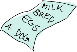
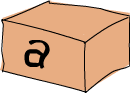
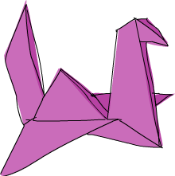

Miran Lipovača :ascii-ids: :doctype: book :source-highlighter: pygments
Переклад українською Арсеній Чеботарьов 2019
Запрошуємо до Learn You a Haskell for Great Good! Якщо ви читаєте це, є шанси, що ви бажаєте вивчити Haskell. Так, ви опинились в правильному місці, але спершу давайте поговоримо про сам цей туторіал.
Я вирішив написати це, бо я хотів покращити моє влане знання Haskell, і оскільки я думав, що можу допомогти новим до Haskell людям вивчати його з моєї перспективи. Існує досить небагато туторіалів по Haskell, що плавають в інтернеті. Коли я починав з Haskell, я не навчався тільки з одного ресурсу. Спосіб, яким я навчався, було читання декількох різних туторіалів та статей, оскільки кожний пояснював дещо в інший спосіб, ніж інший. Проходячи по різним ресурсам я був в змозі скласти разом частини, та все займало своє місце. Так що це спроба додати інший корисний ресурс для вивчення Haskell, так що ви маєте більший шанс знайти те, що вам сподобається.
 Цей туторіал націлений на людей, що мають досвід з імперативними мовами програмування (C, C++, Java, Python …), але досі не програмували на функціональних мовах (Haskell, ML, OCaml …). Хоча я можу поспорити, що навіть якщо ви не маєте жодного значного програмного досвіду, розумна людина, як ви, буде в змозі відслідковувати хід подій та навчиться Haskell.
Цей туторіал націлений на людей, що мають досвід з імперативними мовами програмування (C, C++, Java, Python …), але досі не програмували на функціональних мовах (Haskell, ML, OCaml …). Хоча я можу поспорити, що навіть якщо ви не маєте жодного значного програмного досвіду, розумна людина, як ви, буде в змозі відслідковувати хід подій та навчиться Haskell.
Канал #haskell в мережі freenode є чудовим місцем запитувати питання, якщо ви почуваєтесь розгубленим. Люди там вкрай милі, терплячі та розуміють початківців.
Я не зміг вивчити Haskell приблизно два рази, перед тим як нарешті підхопив його, оскільки все це виглядало дуже збоченим, і я не міг зрозуміти. Але одного разу воно просто "клацнуло", і після продирання через початкові хащі це видалось досі спокійне плавання. Як мені здається я намагаюсь сказати: Haskell чудовий, і якщо ви дійсно зацікавлені в програмуванні, вам слід дійсно вивчити його, навіть якщо спочатку він виглядає збоченим. Вивчення Haskell більш подібне на навчання програмування з самого початку — це весело! Це дозволяє вам мислити інакше, що відносить нас в другий розділ …
 Haskell є чисто функціональна мова програмування. В імперативних мовах ви отримуєте речі зробленими через надання комп'ютеру послідовність завдань, та потів виконуєте їх. При їх виконанні це може змінювати стан. Наприклад, ви встановили змінну в
Haskell є чисто функціональна мова програмування. В імперативних мовах ви отримуєте речі зробленими через надання комп'ютеру послідовність завдань, та потів виконуєте їх. При їх виконанні це може змінювати стан. Наприклад, ви встановили змінну в 5, потім робили дещо, та потім встановили її в дещо інше. Ви маєте структури керування потоком, щоб виконати деяку дію декілька раз. В чисто функціональному програмуванні ви не кажете комп'ютеру, що робити як таке, але скоріше ви кажете, що має бути. Факторіал числа є добуток всіх чисел від 1 до цього числа, сума списка чисел є перше число, плюс сума інших чисел, і так далі. Ви виражаєте це в формі функцій. Ви також не можете змінну в дещо, і пізніше встановити її в дещо інше. Якщо ви кажете, що a є 5, ви не можете пізніше сказати що це щось інше, бо ви сказали що це 5. Ви що, якийсь брехун? Так що в повністю функціональних мовах функція не має побічних ефектів. Єдина річ, що може робити функція, це обчислювати дещо і повертати це як результат. Спочатку це виглядає як деяке обмеження, але насправді має дуже милі наслідки: якщо функція викликається два рази з тими самими параметрами, вона гарантовано повертає той самий результат. Це називаеться посилковою прозорістю, і не тільки дозволяє компілятору промислювати поведінку програми, але також дозволяє просто доходити висновку (та навіть доводити), що функція коректна, та потім будувати більш складні функції, через склеювання простих функцій разом.
 Haskell лінивий. Це означає, що якщо спеціально не сказане інше,Haskell не виконуватиме функцій та не обчислюватиме речі, коли його дійсно не змусить це робити, щоб показати вам результат. Це гарно пасує до прозорості посилань, і це дозволяє вам думати про програми як про серії перетворень даних. Це також дозволяє круті речі, такі як безкінечні структури даних. Скажімо, ви маєте незмінний список чисел
Haskell лінивий. Це означає, що якщо спеціально не сказане інше,Haskell не виконуватиме функцій та не обчислюватиме речі, коли його дійсно не змусить це робити, щоб показати вам результат. Це гарно пасує до прозорості посилань, і це дозволяє вам думати про програми як про серії перетворень даних. Це також дозволяє круті речі, такі як безкінечні структури даних. Скажімо, ви маєте незмінний список чисел xs = [1,2,3,4,5,6,7,8], та функцію doubleMe, що множить кожний елемент на 2, та потім повертає новий список. Якщо ми б захотіли помножити весь список на 8 в імперативній мові, та зробити doubleMe(doubleMe(doubleMe(xs))), це можливо пройшло б по списку один раз, та зробило копію, щоб повернути її. Потім це пройшло б по списку ще два рази, та повернуло результат. В лінивій мові виклик doubleMe на списку без примусу показати вам результат скінчиться тим, що програма скаже вам щось накшталт "Так-так, я зроблю це пізніше!". Але коли ви захочете побачити результат, перший doubleMe каже другому, що він хоче результат, негайно! Другий каже те саме до третього, і третій похопцем повертає подвоєні 1, що є 2. Другий отримує це і повертає 4 першому. Перший виклик бачить це і повертає вам 8. Так що відбувається тільки один прохід по списку, і тільки тоді, коли вам це дійсно треба. Таким чином, коли ви бажаєте дещо від лінивої мови, ви можете просто взяти початкові дані, і ефективно перетворити та полагодити, так, щоб воно відтворювале те, що ви бажаєте мати в кінці.
 Haskell є статично типізованим. Коли ви компілюєте вашу програму, компілятор знає, яка частина коду є числом, яка є рядком і так далі. Це означає, що багато з можливих помилок будуть виловлені під час компіляції. Якщо ви спробуєте додати разом число та рядок, компілятор буде скиглити на вас. Haskell використовую дуже гарну систему типів, що має вивід типів. Це означає, що вам не треба насправді явно помічати кожний кусок коду типом, бо система типів може розумно здогадатись більшість з них. Якщо ви кажете
Haskell є статично типізованим. Коли ви компілюєте вашу програму, компілятор знає, яка частина коду є числом, яка є рядком і так далі. Це означає, що багато з можливих помилок будуть виловлені під час компіляції. Якщо ви спробуєте додати разом число та рядок, компілятор буде скиглити на вас. Haskell використовую дуже гарну систему типів, що має вивід типів. Це означає, що вам не треба насправді явно помічати кожний кусок коду типом, бо система типів може розумно здогадатись більшість з них. Якщо ви кажете a = 5 + 4, ви не маєте казати Haskell, що a є числом, він сам може про це здогадатись. Вивід типів також дозволяє вашому коду бути більш загальним. Якщо функція, що ви створюєте, приймає два параметри, та додає їх разом, та ви явно не встановили їх тип, функція буде робити на любих двох параметрах, що поводяться як числа.
Haskell є елегантним та стислим. Оскільки він використовує багато концепцій високого рівня, програми Haskell звичайно коротші, ніж їх імперативні еквіваленти. Та коротші програми простіше підтримувати, ніж довгі, та мати меньшн вад.
Haskell був зроблений дійсно розумними хлопцями (з науковими ступенями). Робота над Haskell почалась в 1987му році, коли комітет розробників зібрався разом щоб розробити несамовиту мову. В 2003 був опублікований Haskell Report, що визначає стабільну версію мови.
Текстовий редактор та компілятор Haskell. Ви, можливо, вже маєте ваш улюблений текстовий редактор встановленим, так що ми не витрачатимемо не це час. Для цілей цього туторіала ми будемо використовувати GHC, найбільш широко уживаний компілятор Haskell. Кращий шлях розпочати - завантажити Haskell Platform, що в основному той самий Haskell в комплекті з батарейками.
GHC може прийняти Haskell скрипт (вони звичайно мають розширення .hs), та компілювати його, але він також має інтерактивний режим, що дозволяє вам інтерактивно взаємодіяти зі скриптами. Інтерактивно. Ви можете викликати функції зі скриптів, що ви завантажуєте, і результати відображуються безпосередньо. Для навчання це значно простіше і швидше, ніж компілювати кожного разу щоб зробити зміну, та потім виконувати програму з консольної підказки. Інтерактивний режим викликається запуском ghci в підказці консолі. Якщо ви визначили деякі функції в викликаному файлі, скажімо, myfunctions.hs, ви завантажуєте ці функції через набір :l myfunctions, і потім граєтесь з ними, вважаючи, що myfunctions.hs в тому самому файлі, з якого був запущений ghci. Якщо ви зміните .hs скрипт, просто виконайте :l myfunctions знову, або зробіть :r, що еквівалентно, оскільки це перевантажує поточний скрипт. Звичайна послідовність для мене, коли я граюсь з деякими речами, це створення деяких функцій в .hs файлі, завантаження їх, та забавки з ними, та потім зміна файла .hs, завантаження його знову, і так далі. Це також те, що ми будемо тут з вами робити.
:ascii-ids:
:doctype: book
:source-highlighter: pygments
:icons: font
 Гаразд, давайте розпочнемо! Якщо ви з тих жахливих людей, що не читають інструкцій до речей, і пропускаєте їх, в жодному разі ви маєте прочитати останній розділ зі вступу, оскільки він пояснює, що вам треба, щоб слідувати цьому туторіалу, і як ми збираємось завантажувати функції. Перша річ, що ми збираємось зробити, це виконати
Гаразд, давайте розпочнемо! Якщо ви з тих жахливих людей, що не читають інструкцій до речей, і пропускаєте їх, в жодному разі ви маєте прочитати останній розділ зі вступу, оскільки він пояснює, що вам треба, щоб слідувати цьому туторіалу, і як ми збираємось завантажувати функції. Перша річ, що ми збираємось зробити, це виконати ghc в інтерактивному режимі, та викликати деякі функції, щоб отримати дуже базове відчуття haskell. Відкрийте ваш термінал та наберіть ghci. Ви отримаєте привітання, подібне до наступного.
Вітаємо, ви в GHCI! Тут підказка Prelude>, але оскільки вона може стати довшою коли ви завантажите дещо в сессії, ми збираємось використовувати ghci>. Якщо ви бажаєте мати таку саму підказку, просто наберіть :set prompt "ghci> ".
Ось деяка проста арифметика.
Це досить пояснює себе. Ми також можемо використовувати декілька операторів в одному рядку, і вони будуть підкорюватись звичайним правилам преоритетів. Ми можемо використовувати дужки, щоб зробити преоритети явними, або щоб змінити їх.
Досить круто, чи не так? Так, я знаю що ні, але повірте мені. Невелика пастка тут - подивитись як змінюється знак чисел. Якщо ви бажаєте мати від'ємне число, завжди краще оточити його в дужки. робити 5 * -3 змусить GHCI скаржитись на вас, але якщо зробити 5 * (-3), це буде робити добре.
Логічна алгебра також досить прямолінійна. Як ви ,вірогідно, знаєте, && позначає логічне AND, || позначає логічне OR. not обертає True або False.
Перевірка на рівність робиться так.
Як щодо зробити 5 + "llama" або 5 == True? Гаразд, якщо ми спробуємо перший фрагмент, ми отримаємо велике і жахливе повідомлення про помилку!
No instance for (Num [Char])
arising from a use of `+' at <interactive>:1:0-9
Possible fix: add an instance declaration for (Num [Char])
In the expression: 5 + "llama"
In the definition of `it': it = 5 + "llama"Такої! Що тут GHCI каже нам, це те, що "llama" не є числом, і так він не знає, як додати його до 5. Навіть якщо це б було не "llama", а "four" або "4", Haskell все одно не може дійти висновку, що це число. + очікує, що зправа та зліва від нього числа. Якщо ви спробуєте зробити True == 5, GHCI скаже нам, що типи не співпадають. Хоча + робить тільки на речах, що розглядаються як числа, == робить на любих двох речах, що можна порівняти. Але зачіпка в тому, що вони обоє мають бути одним типом речей. Ви не можете порівняти яблука та помаранчі. Ми зробимо ближчий погляд на типи пізніше. Зауваження: ви можете робити 5 + 4.0, оскільки 5 хитра, і може діяти як ціле або число з плаваючою крапкою. 4.0 не може діяти як ціле, так що 5 єдине, що має пристосовуватись.
Можиливо ви не знали це, але ми використовували функції весь цей час. Наприклад, * є функцією, що приймає два числа, та перемножує їх. Як ви бачили, ми використовували її, утворивши сендвіч з них. Це те, що ми називаємо інфіксною функцією. Більшість функцій, що не використовуються з числами, є префіксні функції. Давайте поглянемо на них.
 Функції звичайно ідуть як префікс, такщо від тепер ми не будемо явно вказувати, що функція має префіксну форму, ми будемо просто вважати що це так. В багатьої імперативних мовах функції викликаються через запис імені функції, та потім її параметри в дужках, звичайно розділені комами. В Haskell функції викликаються записом ім'я функції, проміжок, і розділені проміжками параметри. Для початку ми спробуємо викликати одну зі скучніших функцій в Haskell.
Функції звичайно ідуть як префікс, такщо від тепер ми не будемо явно вказувати, що функція має префіксну форму, ми будемо просто вважати що це так. В багатьої імперативних мовах функції викликаються через запис імені функції, та потім її параметри в дужках, звичайно розділені комами. В Haskell функції викликаються записом ім'я функції, проміжок, і розділені проміжками параметри. Для початку ми спробуємо викликати одну зі скучніших функцій в Haskell.
Функція succ приймає будь-що, що має визначений наступний, та повертає це наступне. Як ви можете бачити, ми просто відділили ім'я функції від параметра проміжком. Виклик функції з декількома параметрами також просте. Функції min та max приймають дві речі, що можуть бути впорядковані (як числа!). min повертає те, що меньше, та max повертає те, що більше. Дивіться самі:
Застосування функції (виклик функції через покладання проміжку пісня неї, та потім набір параметрів) має найвищий преоритет з них усіх. Це означає, що наступні два твердження еквівалентні.
Однак якщо ми бажаємо отримати наступний до добутку чисел 9 та 10, ми не можемо записати succ 9 * 10, оскільки це отримання послідовника для 9, що потім буде помножений на 10. Тобто 100. Ми маємо писати succ (9 * 10) щоб отримати 91.
Якщо функція прийма два параметри, ми також можемо викликати її як інфіксну функцію, оточивши її зворотніми апострофами. Наприклад, функція div приймає два цілі, та робить ціле ділення першого на друге. Обчислення div 92 10 дає результат 9. Але коли ми викликаємо її таким чином, може бути деякий сумнів, яке число є чисельник і яке займенник. Так що ми можемо викликати її як інфіксну функцію, зробивши 92 ``div` 10`, і миттєво все стає зрозуміло.
Багато людей, які прийшли з імперативних мов, маю схильність приставати на нотацію, де дужки мають позначати застосування функції. Наприклад в C ви виокристовуєте дужки для виклику функції, як foo(), bar(1) або baz(3, "haha"). Як ми казали, в Haskell для застосування функції ми використовуємо дужки. Так що ці функції в Haskell будуть foo, bar 1 та baz 3 "haha". Так що якщо ви бачите що подібне до bar (bar 3), це не означає, що bar викликається з bar та 3 в якості параметрів. Це означає, що спочатку ми викликаємо bar з 3 в якості параметра, щоб отримати якесь число, та потім ми викликаємо bar знову з цім числом. В C це буде щось подібне до bar(bar(3)).
В попередньому розділі ми отримали базове відчуття щодо виклику функцій. Тепер давайте спробуємо створити свої власні! Відкрийте ваш улюблений текстовий редактор, і видайте таку функцію, що приймає число та множить його на два.
Функції визначають в спосіб, подібний до їх виклику. Ім'я функції іде перед параметрами, розділені проміжками. Але коли функція визначається, існує знак = , та після нього визначення того, що робить функція. Збережіть це як baby.hs або будь-як інакше. Тепер перейдіть туди, де ви збереглись, і запустіть там ghci. Всередині GHCI зробіть :l baby. Тепер, коли наш скрипт завантажений, ми можемо гратись з функцією, яку ми визначили.
Оскільки + робить на цілих, так само як і на числах з плаваючою крапкою (насправді на будь-чому, що може розглядатись як число), наша функція також може робити з любими числами. Давайте зробимо функцію, що приймає два числа, та перемножує їх на два, і потім складає результати разом.
Просто. Ми також могли визначити це як doubleUs x y = x + x + y + y. Тестування продукує досить передбачувані результати (пам'ятайте додати цю функцію до файлу baby.hs, збережіть його, та потім зробіть :l baby в GHCI).
Як і очікувалось, ви можете викликати ваші власні функції з інших функцій, які ви створили. Маючи це на увазі, ви можете перевизначити doubleUs таким чином:
Це дуже простий приклад загального шаблону, що ви бачитимете повсякчас в Haskell. Створення простих функцій, що вочевидь коректні, та потім комбінування їх в більш складні функції. Таким чином ви також уникаєте повторень. Що, коли деякий математик дійде висновку, що 2 насправді 3, і ви маєте змінити програму? Ви можете просто перевизначити doubleMe як x + x + x, і оскільки doubleUs викликає doubleMe, вона також буде автоматично робити в цьому дивному світі, де 2 є 3.
Функції в Haskell не мають іти в якомусь певному порядку, так що не має значення, якщо ви визначите doubleMe спочатку, та потім doubleUs, або ви зробите це навпаки.
Тепер ми збираємось створити функцію, що множить число на 2, але тільки якщо число меньше або рівне 100, бо числа більше ніж 100 досить великі як вони є!
 Прямо зараз ми ввели Haskell твердження
Прямо зараз ми ввели Haskell твердження if. Ви, можливо, знайомі з if твердженнями в інших мовах. Різниця між Haskell твердженням if, та твердженнями if в імперативних мовах в тому, що частина else обов'язкова в Haskell. В імперативних мовах ви можете просто пропустити пару кроків, якщо умова не задовільняється, але в Haskell кожний вираз та функція має щось повертати. Ми можемо також записати твердження if в один рядок, але я вважаю цей спосіб значно читабельніше. Інша річ щодо твердження if в Haskell в тому, що це вираз. Вираз загалом це шматок коду, що повертає значення. 5 є виразом, бо воно повертає 5, 4 + 8 також вираз, x + y також вираз, бо він повертає суму x та y. Оскільки else обов'язкове, твердження if буде завжди щось повертати, і ось чому це також вираз. Якщо ми бажаємо додавати одиницю до кожного числа, що спродуковане в нашій попередній функції, ми маємо записати тіло таким чином.
Якщо ми б пропустили дужки, воно додавало одиницю тільки якщо x не було б більше 100. Зауважте ' наприкінці імені функції. Цей апостроф не має жодного спеціального значення в синтаксисі Haskell. Це валідний символ для використання в іменах функцій. Ми зазвичай використовуємо ' для позначення суворої версії функції (що не є лінива), або трохи модифікованої версії функції або змінної. Оскільки ' валідний символ в функціях, ми можемо зробити функцію таким чином.
Тут дві речі, варті уваги. Перша в тому, що в назві функції ми не пишемо ім'я Конана з великої литери. Це тому, що функції не можуть починатись з великої літери. Пізніше ми побачимо чому. Друга річ в тому, що ця функція не приймає жодних параметрів. Коли функція не приймає жодних параметрів, ми кажемо що це визначення (або ім'я). Оскільки ми не можемо змінити те, що імена (та функції) означають після того, як ми їх визначили, conanO'Brien та рядок "It's a-me, Conan O'Brien!" можна використовувати взаємозамінно.
 Здебільшого так само, як списки покупок в реальному світі, списки в Haskell дуже корисні. Це найбільш використовувана структура даних, і вона може бути використана в безлічі різних способів, щоб моделювати та вирішувати цілу кіпу проблем. Списки ТАКІ неймовірні. В цьому розділі ми побачимо на основи списків, рядкі (що є списками) та осяжність списків.
В Haskell списки є гомогенними структурами даних. Вони зберігають декілька елементів одного типу. Це означає, що ми можемо мати список цілих та список символів, але ми не можемо мати список, що має трохи цілих, та трохи символів. І тепер - список!
Note: Ми можемо використовувати ключове слово let для визначення імені прямо в GHCI. Зробити let a = 1 в GHCI еквівалентно до написання a = 1 в скрипті, та потім його завантаження.
Як ви можете бачити, списки позначаються квадратними дужками, та значення в списках розділяються комами. Якщо ми спробуємо список [1,2,'a',3,'b','c',4], Haskell буде скаржитись, що символи (що, проміж іншого, позначаються символами в поодиноких лапках) не є числами. Кажучи про символи, рядки є тільки списками символів. "hello" є тільки синтаксичним цукром для ['h','e','l','l','o']. Оскільки рядки є списками, ми можемо використовувати функції для спискив з рядками, що дійсно зручно.
Загальна задача є складання двох списків разом. Це робиться за допомогою оператора ++.
Пильнуйте, коли постійно використовуєте оператор ++ на довгих рядках. Коли ми складаємо разом два списки (навіть якщо ми додаємо синглтон список до списку, наприклад: [1,2,3] ++ [4]), внутрішньо Haskell має пройти по всьому списку злівого боку від ++. Це не проблема, коли маємо справи зі списками, що не дуже великі. Але покладання дечого в кінець списку, що має п'ядесят мільйонів елементів в довжину таки займе деякий ча. Однак покладання дечого на початок списку з використанням оператора : (також називається cons оператором) є миттєвим.
Зауважте, як : приймає число і список чисел, або символ та список символів, тоді як ++ приймає два списки. Навіть якщо ви додаєте один елемент в кінець списку за допомогою ++, ви маєте оточити його в квадратні дужки, так щоб він став списком.
[1,2,3] насправді є тільки синтаксичним цукром для 1:2:3:[]. [] це порожній список. Якщо перед ним добавити 3 це перетвориться на [3]. Якщо перед цім поставити 2, стане [2,3], і так далі.
Note: [], [[]] та [[],[],[]] все різні речі. Перше це порожній список, друге це список, що містить один порожній список, третій список містить три порожні списки.
Якщо ви бажаєте отримати елемент зі списку по індексу, використовуйте !!. Індекси починаються з 0.
Але якщо ви намагатиметесь отримати шостий елемент зі списку, що має тільки чотири елементи, ви отримаєте помилку, так що будьте уважні!
Списки також можуть містити списки. Вони також можуть містити списки, що містять списки, що містять списки …
Списки в списку можуть бути різної довжини, але вони не можуть бути різних типів. Так само, як ви не можете мати список, що містить деякі числаі деяки символи, ви не можете мати деякі списки з символами, і деякі списки з числами.
Списки можливо порівняти, якщо те, що вони містять, може бути порівняно. Коли використовуються <, <=, > та >= для порівняння списків, вони порівнюються в лексографічному порядку. Спочатку порівнюються голови. Якщо вони рівні, порівнюються другі елементи, і так далі.
Що ще можна робити зі списками? Ось деякі базові функції, що оперують на списках.
head бере список, та повертає його голову. Голова списку це його перший елемент.
tail бере список, та повертає його хвіст. Іншими словами вона відрубає йому голову.
last бере список, та повертає останній елемент.
init бере список, та повератє все, крім останнього елемента.
Якщо ви вважаєте, що список це монстр, тоді вам сподобається таке.

Але що трапиться, якщо ми спробуємо отримати голову порожнього списку?
Матінко рідна! Все це вибухнуло нам у лице! Якщо немає монстра, в нього немає голови. Коли використовуєте head, tail, last та init, будьте уважні не використовувати їх на порожніх списках. Ця помилка не може бути перехоплена під час компіляції, так що завжди гарна практика докласти перестороги супроти випадкового прохання до Haskell отримати елементи з порожнього списку.
length бере список, та повертає його довжину, очевидно.
null перевіряє, чи список порожній. Якщо це так, він повертає True, інакше False. Використовуйте цю функцію замість xs == [] (якщо ви маєте список з назвою xs)
reverse обертає список.
take бере число і список. Він виділяє таку кількість з початку списка. Дивіться.
Бачите, якщо ми намагаємось взяти більше елементів, ніє є в списку, він просто повертає список. Якщо ми намагаємось взяти 0 повертається порожній список.
drop робить подібним чином, тільки він відкидає число елементів з початку списка.
maximum бере список дечого, що може бути впорядковане, і повертає найбільший елемент.
minimum повертає найменьший.
sum бере список чисел, та повертає його суму.
product бере список чисел, та повертає його добуток.
elem бере річ та список речей, та каже нам, чи є такий елемент в списку. Це звичайно викликається як інфіксна функція, оскільки так воно краще читається.
Це були декілька базових функцій, що оперують на списках. Ми побачимо більше спискових функцій пізніше.
 Що, коли ми бажаємо перелічити всі числа від 1 до 20? Звичайно, ми можемо просто надрукувати їх всі разом, але вочевидь це не рішення для джентельмена, що вимагає досконалості від своїх мов програмування. Замість цього ми використовуємо диапазони. Диапазони - це спосіб створювати списки, що є арифметичними послідовностями елементів, що можуть бути перелічені. Числа можуть бути перелічені. Один, два, три, чотири, тощо. Символи можути бути перелічені. Абетка є перелік літер від
Що, коли ми бажаємо перелічити всі числа від 1 до 20? Звичайно, ми можемо просто надрукувати їх всі разом, але вочевидь це не рішення для джентельмена, що вимагає досконалості від своїх мов програмування. Замість цього ми використовуємо диапазони. Диапазони - це спосіб створювати списки, що є арифметичними послідовностями елементів, що можуть бути перелічені. Числа можуть бути перелічені. Один, два, три, чотири, тощо. Символи можути бути перелічені. Абетка є перелік літер від A до Z. Імена не можуть бути перелічені. Що іде після "John"? Я не знаю.
Щоб зробити список, що містить всі натуральні числа від 1 до 20 ви можете записати[1..20]. Це еквівалентно до написання [1,2,3,4,5,6,7,8,9,10,11,12,13,14,15,16,17,18,19,20], і немає різниці між написанням одного чи іншого, за винятком того, що написання довгих послідовностей переліку вручну є дурнею.
Диапазони круті, оскільки ви можете задати крок. Що, якщо ми бажаємо всі парні числа між 1 та 20? Або навіть тожне третє між 1 та 20?
Це просто справа розділення перших двох елементів комою, та потім вказати вищий ліміт. Хоча це досить розумне, диапазони з кроками не такі розумні, ніє деяки люди бажали б їх бачити. Ви не можете зробити [1,2,4,8,16..100], та очікувати отримання всіх ступеней 2. Для початку тому що ви можете вказати один крок. Та подруге через те, що деякі неарифметичні послідовності неоднозначні, якщо задати тільки декілька з перших членів послідовності.
Щоб зробити список з усіх чисел від 20 до 1, ви не можете записати тільки [20..1], ви маєте зробити [20,19..1].
Слідкуйте за використанням чисел з плаваючою крапкою в диапазонах! Завдяки тому, що вони не повністю точні (по визначенню), їх використання може дати деякі досить дивні результаті.
Моя порада не використовувати їх в спискових диапазонах.
Ви також можете використовувати диапазони для створення безкінечних списків, просто не задаючи верню межу. Пізніше ми дійдемо до більших деталей щодо безкінечних списків. Тепер давайте перевіримо, як ви можете отримати перші 24 добутки числа 13. Звичайно, ви можете зробити [13,26..24*13]. Але є кращий шлях: take 24 [13,26..]. Оскільки Haskell лінивий, він не буде намагатись обчислити безкінечний список безпосередньо, бо це ніколи не скінчиться. Він буде чекати, що ви бажаєте отримати з цього безкінечного списку. І тут він бачить, що ви бажаєте отримати лише перші 24 елементи, на що він легко погоджується.
Декілька фунцій, що продукують безкінечні списки:
cycle бере список, та в циклі перетворює його в безкінечний список. Якщо ви спробуєте тільки отримати результат, це триматиме вічність, тому ви маєте перерватись десь.
repeat бере елемент, та продукує безкінечний список тільки з цього елемента. Це як цикл по списку тільки з одного елемента.
Хоча це простіше просто використовувати фуункцію replicate, якщо ви бажаєте деяке число одного елемента в списку. replicate 3 10 повертає [10,10,10].
 Якщо ви колись вивчали курс з математики, ви, можливо, натрапляли на осяжності множин (прим.перекл. Насправді термін comprehension погано або майже не перекладається одинм словом. Суть в процедурному породженні множини, так би мовити делегація вирішення питання належності до деякого функціоналу - фактично, comprehension легше зрозуміти з боку функціонального програмування). Вони звичайно використовуються для побудови більш специфічних множин на основі більш загальних. Базова осяжність для множини, що містить перші десять парних натуральних чисел є нотація множини.
Якщо ви колись вивчали курс з математики, ви, можливо, натрапляли на осяжності множин (прим.перекл. Насправді термін comprehension погано або майже не перекладається одинм словом. Суть в процедурному породженні множини, так би мовити делегація вирішення питання належності до деякого функціоналу - фактично, comprehension легше зрозуміти з боку функціонального програмування). Вони звичайно використовуються для побудови більш специфічних множин на основі більш загальних. Базова осяжність для множини, що містить перші десять парних натуральних чисел є нотація множини.
 Частина перед рискою називається функцією виводу,
Частина перед рискою називається функцією виводу, x це змінна, N є вхідна множина, та x <= 10 є предикат. Це означає, що множина містить подвоєння всіх натуральних чисел, що задовільняють предикату.
Якщо ви бажаєте записати це в Haskell, ви можете зробити щось подібне до 10 [2,4..]. Але що, якщо ви не бажаєте подвоєння перших 10 натуральних чисел, але деякий різновид більш складної функції, застосованої до них? Ми можемо застосувати для цього осяжність множини. Ми покі пристанемо до отримання перших 10 парних чисел. Осяжність списків, яку ми ми можемо використати, це [x*2 | x <- [1..10]]. x береться з [1..10], і для кожного елемента в [1..10] (який ми прив'язуємо до x), ми отримуємо цей елемент, тільки подвоєний. Ось осяжність в дії.
Як ви можете бачити, ми отримали бажаний результат. Тепер давайте додамо умову (або предикат) до осяжності. Предикати ідуть після частини прив'язування, та відокремлюються від них комою. Скажімо, ми бажаємо тільки елементи, що, вже подвоїні, більші або рівні до 12.
Круто, це робить. Що, коли ми бажаємо всі числа від 50 до 100, чий залишок, коли поділений на число 7, є 3? Легко.
Успіх! Зауважте, що пропускання списків через предикати також називається фільтрацією. Ми беремо список з чисел, і ми фільтруємо його предикатом. Тепер інший приклад. Скажімо, ми бажаємо осяжність, що замінює кожне непарне число, більше ніж 10 на "BANG!", та кожне непарне, що меньше ніж 10 на "BOOM!". Якщо число не непарне, ми відкидаємо його зі списку. Для зручності ми покладемо цю осяжність в функцію, так що ми можемо легко використовувати її декілька раз.
Остання частина осяжності є предикат. Функція odd повертає True на непарних числах, та False на парних. Елемент включається в список тільки якщо всі його предикати обчислюються до True.
Ми можемо включити декілька предикатів. Якщо ми бажаємо всі числа від 10 до 20, що не є 13, 15 або 19, ми робимо:
Ви не тільки можете мати декілька предикатів в осяжностях списків (елемент має задовільняти всім предикатам щоб бути включеним в результуючий список), ми також можемо вибирати з декількох списків. Коли здаєте з кількох списків, осяжність продукує всі комбінації з наданих списків, та потім поєднує їх в вихідній функції, яку ми надаємо. Список, вироблений осяжністю, що вибирає з двох списків довжиною 4, буде мати довжину 16, якщо вважати, що ми нічого не фільтруємо. Якщо ми маємо два списки, [2,5,10] та [8,10,11], та бажаємо спродукувати всі можливі комбінації між числами в ціх списках, ось як ми це робимо.
Як очікувалось, довжина нового списку є 9. Що, коли ми бажаємо всі можливі добутки, що більші за 50?
Як щодо осяжності списку, що комбінує список прикметників та список іменників … заради епічної втіхи.
Я знаю! Давайте напишемо свою власну версію length! Ми назвемо її length'.
_ означає, що нам байдуже, що ми витягнули зі списку, так що замість писати ім'я змінної, що ніколи не буде використовуватись, ми просто пишемо _. Ця функція заміняє кожний елемент в списку на 1, та потім підсумовує їх. Це означає, що отримана сума буде рівною довжині нашого списка.
Просто дружнє нагадування: оскільки рядки є списками, ми можемо використовувати осяжності списків для обробки та продукування рядків. Ось функція, що бере рядок, та видаляє будь-що, за винятком великих літер.
Testing it out:
Тут предикат робить всю роботу. Він каже, що символи будуть включені в новий список, тільки якщо вони є елементами списку ['A'..'Z']. Вкладені осяжності списків також можливі, якщо ви оперуєте зі списками, що містять списки. Список містить декілька списків чисел. Давайте видалимо всі непарні числа без вирівнювання списку.
Ви можете записувати осяжності списків на декількох рядках. Так що якщо ви не в GHCI, краще розділити довші осяжності списків на декілька рядків, особливо якщо вони вкладені.
 В деякий спосіб тапли як списки — вони є спосіб зберігати декілька значень в одному значенні. Але є декілька фундаментальних відмінностей. Список чисел є список чисел. Це його тип, і не має значення, чи він має лише одне число в собі, або безкінечне іисло чисел. Однак тапли використовуються, коли ви напевне знаєте, скільки значень ви бажаєте скомбінувати, та їх тип залежить від того, як багато компонент, та який їх тип. Вони позначаються дужками, та їх компоненти розділені комами.
В деякий спосіб тапли як списки — вони є спосіб зберігати декілька значень в одному значенні. Але є декілька фундаментальних відмінностей. Список чисел є список чисел. Це його тип, і не має значення, чи він має лише одне число в собі, або безкінечне іисло чисел. Однак тапли використовуються, коли ви напевне знаєте, скільки значень ви бажаєте скомбінувати, та їх тип залежить від того, як багато компонент, та який їх тип. Вони позначаються дужками, та їх компоненти розділені комами.
Інша ключова відмінність в тому, що вони не мають бути гомогенними. На відміну від списків, тапл може містити комбінацію декількох типів.
Подумайте про те, як ми представляємо дво-вимірний вектор в Haskell. Один спосіб може бути список. Це має деяк робити. То що, якщо ми бажаємо покласти пару векторів в список, щоб представляти точки фігури на дво-мірній площині? Ми маємо зробити щось таке: [[1,2],[8,11],[4,5]]. Проблема з цім методом в тому, що ми також можемо робити такі речі: [[1,2],[8,11,5],[4,5]], з чим Haskell не матиме проблем, бо це також список списків з числами, але це щось таке, що не має сенсу. Але тапл розміром два (що також має назву pair) є власним типом, що означає, що список не може мати декілька пар, і потім triple (тапл розміром три), так що давайте краще використовувати пари. Замість оточувати вектори квадратними дужками, ми використовуємо дужки: [(1,2),(8,11),(4,5)]. Що, коли ми спробуємо зробити фігуру як [(1,2),(8,11,5),(4,5)]? Гаразд, ми отримаємо таку помилку:
Couldn't match expected type `(t, t1)'
against inferred type `(t2, t3, t4)'
In the expression: (8, 11, 5)
In the expression: [(1, 2), (8, 11, 5), (4, 5)]
In the definition of `it': it = [(1, 2), (8, 11, 5), (4, 5)]Це каже нам, що ми спробували використовувати пару та трійку в одному списку, що не мало б статись. Ви також не можете зробити список як [(1,2),("One",2)], оскільки перший елемент в списку є парою чисел, і другий елемент є парою, що складається з рядка та числа. Тапли також можуть використовуватись для представлення широкого різноманіття даних. Наприклад, якщо ми бажаємо представити чиєсь ім'я і вік в Haskell, ми можемо використовувати triple: ("Christopher", "Walken", 55). Як бачимо в цьому прикладі, тапли також можуть містити списки.
Використовуйте тапли, коли ви знаєте заздалегідь, як багато компонент буде мати деякий шматок даних. Тапли значно більш обмежені, оскільки кожни інший розмір тапла є власним типом, так що ви не можете написати загальну функцію для додавання елементу до тапла — ви маєте писати функцію для додавання до пари, одну функцію для додавання до трійці, одну для додавання до четвірки і так далі.
Хоча є списки синглтони, немає такої речі як синглтон тапл. Це не має багато сенсу, якщо ви поміркуєте про це. Синглтон тапл є тільки значення, що він містить, і це не дає нам жодних переваг.
Як списки, тапли можуть бути порівняні один з одним, якщо їх компоненти можуть бути порівняні. Ви не можете порівняти два тапла різного розміру, хоча ви можете порівняти два списки різного розміру. Дві корисні функції для операцій на парах:
fst бере пару, та повертає перший компонент.
snd бере пару, та повертає другий компонент. Сюрприз!
Note: ці функції оперують тільки на парах. Вони не працюватимуть на трійках, четвірках, п'ятірках, тощо. Ми дійдемо до отримання даних з таплів в різний спосіб трохи пізніше.
Крута функція, що продукує список пар: zip. Вона приймає список з двох списків, та потім поєднує їх разом в один список, через поєднання елементів з одним індексом в пари. Це насправді проста функція, але вона має безліч застосувань. Вона особливо корисна, коли ви бажаєте скомбінувати два списки в цей спосіб, або пересуватись по обох списках одночасно. Ось демонстрація.
Це спаровує елементи та продукує новий список. Перший елемент з першим, другий з другим, і так далі. Зауважте, що оскільки пари можуть мати різні типи в собі, zip може приймати два списка, що містять різні типи, та поєднати їх разом. Що трапиться, якщо довжина списків не співпаде?
Довший список просто буде обрізаний, щоб співпадати по довжині з коротшим. Оскільки Haskell лінивий, ми можемо поєднувати скінчені списки з безкінечними списками:
 Ось проблема, що поєднує тапли та осяжності списків: який правильний трикутник, що має цілими всі сторони, і всі сторони меньше або рівні
Ось проблема, що поєднує тапли та осяжності списків: який правильний трикутник, що має цілими всі сторони, і всі сторони меньше або рівні 10, має периметр 24? Перше, давайте спробуємо генерувати всі трикутники, зі сторонами меньшими ніж 10:
Ми тільки но тягнемо з трьох списків, і наша вихідна функція є поєднання їх в трійцю. Якщо ви обчислите це, набравши triangles в GHCI, ви отримаєте список всіх можливих трикутників зі сторонами довжиною 10 або меньше. Далі ми додамо умову, щоб всі вони були правильними трикутниками. Ми також будемо модифікувати цю функцію, приймаючи до уваги, що сторона b не більша за гіпотенузу, і що сторона a не більша за сторону b.
Ми майже скінчили. Тепер ми тільки модифікуємо функцію, сказавши, що ми бажаємо тільки коли периметр дорівнює 24.
А ось і відповідь! Це загальних шаблон функціонального програмування. Ви берете стартовий набір рішень, та потім ви застосовуєте трансформації до ціх рішень, та фільтруєте їх, доки ви не отримаєте потрібні. :ascii-ids: :doctype: book :source-highlighter: pygments :icons: font
 Раніше ми згадували, що Haskell має статичну систему типів. Тип кожного виразу відомий під час компіляції, що призводить до безпечнішого коду. Якщо ви напишете програму, де ви спробуєте поділити логічний тип на деяке число, вона навіть не скомпілюється. Це добре, бо краще перехоплювати такі помилки під час компіляції, замість отримати крах вашої програми. Все в Haskell має тип, так що компілятор може міркувати щодо вашої програми, перед тим як скомпілювати її.
Раніше ми згадували, що Haskell має статичну систему типів. Тип кожного виразу відомий під час компіляції, що призводить до безпечнішого коду. Якщо ви напишете програму, де ви спробуєте поділити логічний тип на деяке число, вона навіть не скомпілюється. Це добре, бо краще перехоплювати такі помилки під час компіляції, замість отримати крах вашої програми. Все в Haskell має тип, так що компілятор може міркувати щодо вашої програми, перед тим як скомпілювати її.
На відміну від Java або Pascal, Haskell має вивід типів. Якщо ви пишете число, ви не маєте казати Haskell, що це число. Він може вивести це сам, так що нам не треба явно писати типи наших функцій та виразів, щоб все робилось відповідно. Ми розглянули деяки з основ Haskell, тільки зверньо поглянувши на типи. Однак розуміння системи типів є дуже важливою частиною в вивченні Haskell.
Тип є різновидом мітки, що має кожен вираз. Він каже нам, до якої категорії речей належить вираз. Вираз True є логічним, "hello" є рядком, тощо.
Зараз ми будемо використовувати GHCI для перевірки типів деяких виразів. Ми будемо робити це, використовуючи команду :t, яка, якщо стоїть перед валідним виразом, каже його тип. Дамо йому вир.
 Тут ми бачимо, що робити
Тут ми бачимо, що робити :t на виразі друкує вираз, за яким іде :: та його тип. :: читається як "має певний тип". Явні типи завжди позначаються першою літерою верхнього реєству. 'a', як можна бачити, має тип Char. Не важко зробити висновок, що це позначає символ. True має тип Bool (логічний тип, названий за розробником логічної алгебри предикатів, Буля. прим.перекл). Це має сенс. Але що це? Дослідження типу "HELLO!" дає [Char]. Квадратні дужки позначають список. Так що ми читаємо це як список символів. На відміну від списків кожна довжина таплу має власний тип. Так що вираз (True, 'a') має тип (Bool, Char), тоді як вираз як ('a','b','c') матиме тип (Char, Char, Char). 4 == 5 завжди повертатиме False, так що його тип Bool.
Функції також мають типи. Коли ми пишемо власні функції, ми можемо обрати надавати їм явні декларації типів. Це загалом розглядається як гарна практика, за винятком коли ми пишемо дуже малі функції. Звідси і надалі ми надаватимемо функції, що мають явні декларації типів. Згадайте осяжності списків, що ми робили до цього, що фільтрували рядки, що мають лише великі літери? Ось як це виглядає з декларацією типу.
removeNonUppercase має тип [Char] -> [Char], що каже, що вона відзеркалює рядок на рядок. Це тому, що вона бере один рядок як параметр, та повертає інший як результат. Тип [Char] є синонімом до String, так що буде яснішим, якщо ми напишемо removeNonUppercase \:\: String -> String. Ми не маємо надавати цій функції декларацію типу, оскільки компілятор може вивести це самостійно, що це функція рядка до рядка, ала ми зробили це все одно. Але як записати тип функції, що приймає декілька параметрів? Ось проста функція, що приймає три цілі та складає їх разом:
Параметри розділені позначкою ->, і немає особливої різниці між параметрами та типом повернення. Тип повернення є останнім елементом в декларації, та параметри перші три. Пізніше ми побачимо, чому вони всі розділені ->, замість мати деякий більш явний спосіб розрізнення між типом повернення та параметрами, як Int, Int, Int -> Int, або щось таке.
Якщо ви бажаєте надати вашій функції декларацію типу, але не впевнені, що це має бути, ви можете тільки написати функцію без нього, та потім перевірити її за допомогою :t. Функції також є виразами, так що :t робить на них без проблем.
Ось огляд деяких загальних типів.
Int означає цілі. Він використовується для цілих чисел. 7 може бути Int, але 7.2 ні. Int обмежене, що означає, що вони мають мінімум та максимальне значення. Зазвичай на 32-бітних машинах максимально можливе Int є 2147483647, та мінімальне є -2147483648.
Integer позначає також, хм … також ціле. Головна різниця в тому, що він не прив'язаний до меж, і він може використовуватись для представлення насправді великих чисел. Я маю на увазі що дійсно великіх. Однак Int більш ефективний.
Float є дійсне плаваюче з одинарною точністю.
Double є дійсне плаваюче з подвійною точністю!
Bool є логічний тип. Він може мати тільки два значення: True та False.
Char представляє символ. Він позначається поодинокими лапками. Список символів є рядком.
Тапли є типами, але вони залежні від своєї довжини, так само, як і від типів своїх компонентів, так що теоретично є безліч типів таплів, що забагато, щоб накрити в цьому туторіалу. Зауважте, що порожній тапл () також є типом, що може мати одне значення: ().
Який, як ви думаєте, є тип функції head? Оскільки head приймає список любого типу, та повертає перший елемент, то що це має бути? Давайте перевіримо!

Хмм! Що є це a? Чи це є тип? Згадайте, що дотепер ми стверджували, що типи записуються з великої літери, так що це не може в точності бути типом. Оскільки це не велика літера, це насправді змінна типу. Це значить, що це може бути любий тип. Це здебільшого як дженеріки в інших мовах, але в Haskell це значно більш потужне, оскільки це дозволяє нам просто писати любі загальні функції, тільки якщо вони не використовують деяку особливу специфічну поведінку на типах в своєму складі. Функції, що мають змінні типів, називаються поліморфними функціями. Декларація типу head стверджує, що вона приймає список любого типу, та повертає один елемент цього типу.
Хоча змінні типів можуть мати ім'я, довші за один символ, ми зазвичай даємо їм імена a, b, c, d …
Пам'ятаєте fst? Він повертає перший компонент з пари. Давайте дослідимо його тип.
Ми бачимо, що fst бере тапл, що має два типи, і повертає елемент, чий тип такий самий, що і тип першого компонента з пари. Ось чому ми можемо використовувати fst на парі, що містить два довільні типи. Зауважте, що тільки через те, що a та b є різними змінними типів, вони не мають бути різними типами. Це типами стверджує, що тип першого компоненту та тип значення повернення є тим самим.
 Типоклас є деяким різновидом інтерфейсу, що визначає деяку поведінку. Якщо тип є частиною типокласу, це означає, що він підтримує та реалізує поведінку, яку описує типоклас. Багато людей, що приходять з OOP, спантеличені типокласами, бо вважають їх подібними до класів в об'єктно орієнтовних мовах. Гараз, це не так. Ви можете думати про них, як про різновид Java інтерфейсів, тільки кращіх.
Типоклас є деяким різновидом інтерфейсу, що визначає деяку поведінку. Якщо тип є частиною типокласу, це означає, що він підтримує та реалізує поведінку, яку описує типоклас. Багато людей, що приходять з OOP, спантеличені типокласами, бо вважають їх подібними до класів в об'єктно орієнтовних мовах. Гараз, це не так. Ви можете думати про них, як про різновид Java інтерфейсів, тільки кращіх.
Note: оператор еквівалентності == є функцією. Так само, як +, *, -, /, та майже всі інші оператори. Якщо функція складається тільки зі спеціальних символів, вона розглядається як інфіксна функція по замовчанню. Якщо ми бажаємо перевірити її тип, передати її до іншої функції, або викликати як префіксну функцію, ми маємо оточити її дужками.
Цікаво. Ми бачимо тут нову річ, символ =>. Все перед символом => має назву класової константи. Ми можемо прочитати попередню декларацію типу таким чином: Функція еквівалентності бере два значення, що мають однаковий тип, та повертає Bool. Тип ціх значень мусить бути типом класу Eq (це була класова константа).
Типоклас Eq провадить інтерфейс для перевірки на рівність. Кожний клас, коли має сенс перевірка на рівність між двома елементами для цього типу, мав би бути членом класу Eq. Всі стандартні типи Haskell, за винятком IO (тип для роботи з вводом та виводом), та функції є частиною типокласу Eq.
Функція elem має тип (Eq a) => a -> [a] -> Bool, оскільки він використовує == по списку, щоб перевірити, чи деяке значення, яке ми шукаємо, знаходиться в списку.
Eq використовується для типів, що підтримують перевірку на рівність. Функції, що реалізують його члени є == та /=. Так що якщо є обмеження класу Eq для змінної типу в функції, вона використовує == або /= десь в своїй декларації. Всі типи, що ми згадували до цього, за винятком функцій, є частинами Eq, так що вони можуть бути перевірені на рівність.
Ord призначений для типів, що мають впорядкування.
Всі типи, що ми розглядали досі, за винятком функцій, є частиною Ord. Ord покриває всі стандартні функції порівняння, такі як >, <, >= та <=. Функції порівнянь беруть два члени Ord того самого типу, і повертають впорядкування Ordering. Ordering є типом, що може бути GT, LT або EQ, що відповідно означає більше ніж, меньше ніж, або дорівнює.
Щоб бути членом Ord тип має зпочатку мати членство в престижному та ексклюзивному клубі Eq.
Члени Show можуть бути представлені як рядкі. Всі типи, що розглядались досі, за винятком функцій, є частиною Show. Найбільш уживана функція, що має справу з типокласом Show є show. Вона бере значення, чий тип є членом Show, та представляє його нам як рядок.
Read є дещо протилежним типокласом до Show. Функція read бере рядок, та повертає тип, який є членом Read.
Доки досить. Знову, всі типи, розглянуті до сих пір, знаходяться в цьому типокласі. Але що відбудеться, якщо ми тільки зробимо read "4"?
Що GHCI тут нам каже, це те, що він не знає, що ми бажаємо повернути. Зауважте, що в попередніх використаннях read ми робили дещо з результатом після цього. Таким чином, GHCI міг вивести, який тип результату ми бажали від read. Якщо ми б використовували це як логічне, він би знав, що треба повертати Bool. Але тепер він знає, що ми бажаємо деякий тип, що є частиною класу Read, він тільки не знає, який саме. Давайте поглянемо на сигнатуру типу read.
Бачите? Він повертає тип, що є частиною Read, але якщо ми потім не спробуємо використати його якось далі, немає шляху дізнатись, що саме цей тип. Ось чому ми можемо використовувати явні анотації типів. Анотації типів є шлях явно сказати, яким має бути тип виразу. Ми робимо це, додаючи :: наприкінці виразу, та потім вказавши тип. Дивіться:
Більшість виразів такі, що компілятор може вивести їх тип самотужки. Але іноді компілятор не знає, чи треба повертати значення типу Int або Float для виразів як read "5". Щоб побачити, який тип є насправді, Haskell мав би насправді обчислити read "5". Але оскільки Haskell є статично типізованою мовою, він має знати всі типи перед компіляцією кода (або в випадку GHCI, обчисленням). Так що ми маємо сказати Haskell: "Йо, цей вираз має бути такого типу, в випадку якщо ти не знаєш!".
Enum члени є послідовно впорядкованими типами — вони можуть бути перелічені. Головна перевага типокласу Enum в тому, що ми можемо використовувати його типи як диапазони списків. Вони також мають визначені попередників та послідовників, що ви можете отримати функціями succ та pred. Типи в цьому класі: (), Bool, Char, Ordering, Int, Integer, Float та Double.
Члени Bounded мають верхню та нижню межу.
minBound та maxBound є цікаві, бо вони мають тип (Bounded a) => a. В деякому сенсі вони є поліморфними константами.
Всі тапли також є частиною Bounded, якщо в ньому також їх компоненти.
Num є числовим типокласом. Його члени мають властивість діяти як числа. Давайте дослідимо тип числа.
Виглядає так, що цілі числа також є поліморфними константами. Вони можуть діяти як любий тип, що є членом типокласу Num.
Це ті типи, що належать до типокласа Num. Якщо ми перевіримо тип *, ми побачимо, що він приймає всі числа.
-
Він приймає всі числа того самого типу, та повертає число того ж типу. Ось чому
(5 :: Int) * (6 :: Integer)призведе до посилки типу, тоді як `5 * (6 -
Integer)` буде робити досить добре, та спродукує
Integer, оскільки5може діяти якIntegerабоInt.
Щоб поєднати Num, тип має вже бути друзями з Show та Eq.
Integral є також числовим типокласом. Num включає всі числа, включаючи дійсні числа та цілі числа, Integral включає тільки цілі числа. В цьому типокласі Int та Integer.
Floating включає тільки числа з плаваючою крапкою, Float та Double.
-
Дуже корисна функція для справ з числами є
fromIntegral. Вона має декларацію типуfromIntegral :: (Num b, Integral a) => a -> b. З цієї декларації типів ми бачимо, що він приймає ціле число, та перетворює його в більш загальне число. Це корисно, коли ви бажаєте, щоб цілі та з плаваючою крапкою гарно робили поспіль. Наприклад, функціяlengthмає декларацію типуlength :: [a] -> Int, замість мати більш загальний тип `(Num b) ⇒ length -
[a] → b`. Я думаю, це має історичні причини або щось таке, хоча, як до мене, це дурниці. В жодному разі, якщо ви отримаєте довжину списку, та потім додасте її до
3.2, ми отримаємо помилку, бо ми намагались додати разомIntта число з плаваючою крапкою. Щоб уникнути цього ми робимоfromIntegral (length [1,2,3,4]) + 3.2, і тоді це буде робити.
Зауважте, що fromIntegral має декілька класових обмежень в своїй сигнатурі типу. Це повністю валідне, та як ви можете бачити, обмеження класів відокремлені комами в дужках.
:ascii-ids:
:doctype: book
:source-highlighter: pygments
:icons: font
 Ця глава дослідить деякі з крутих синтаксичних конструкцій Haskell, і ми почнемо зі співпадіння шаблонів. Співпадіння шаблонів складається з вказання шаблонів, яким мають відповідати деякі дані, та потім перевірити, чи це так, та деконструювати дані відповідно до ціх шаблонів.
Ця глава дослідить деякі з крутих синтаксичних конструкцій Haskell, і ми почнемо зі співпадіння шаблонів. Співпадіння шаблонів складається з вказання шаблонів, яким мають відповідати деякі дані, та потім перевірити, чи це так, та деконструювати дані відповідно до ціх шаблонів.
Коли визначаєте функції, ви можете визначити окремі тіла функції для різних шаблонів. Це призводить до дійсно милого коду, що простий та читається. Ви можете перевіряти шаблони на кожному типі — числах, символах, списках, таплах, тощо. Давайте зробимо насправді тривіальну функцію, що перевіряє, чи надане нами число сімка, або ні.
Коли ми викликаємо lucky, шаблони будуть перевірятись згори донизу, і коли шаблон буде задовільнятись, відповідне тіло буде використовуватись. Єдиний спосіб, як число може задовільніти першому шаблону - якщо це 7. Якщо ні, керування провалюється до другого шаблону, що співпадає з будь чим, та прикріпляє його до x. Ця функція також може бути реалізованою через використання твердження if. Але що, коли ми бажаємо функцію, що каже числа від 1 до 5, та каже "Not between 1 and 5" для любого іншого числа? Без співпадіння шаблоній ми будемо швидко втягнуті в дерево if then else. Однак з шаблонами:
Зауважте, що якщо ми перемістмо останній шаблон (спіймати все) догори, він завжди буде казати "Not between 1 and 5", оскільки він буде ловити всі числа без шансу провалитись, та перевірити всі інші шаблони.
Згадайте функцію факторіала, що ми реалізували до цього? Ми визначали factorial числа n як добуток [1..n]. Ми також можемо визначити функцію факториала рекурсивно, спосіб, що зазвичай використовується в математиці. Ми починаємо, кажучи що факторіал 0 є 1. Потім ми кажемо, що факторіал любого позитивного цілого є це ціле, помножене на факторіал свого попередника. Ось як це виглядає, перекладене в терміни Haskell.
Це перший раз, коли ми визначили функцію рекурсивно. Рекурсія важлива в Haskell, і пізніше ми поглянемо на неї ближче. Але ось що відбувається, коли ми беремо факторіал, скажімо, 3. Він намагаться обчислити 3 * factorial 2. Факторіал 2 є 2 * factorial 1, так що досі ми маємо 3 * (2 * factorial 1). factorial 1 є 1 * factorial 0, так що ми маємо 3 * (2 * (1 * factorial 0)). Тепер настає час трюку — ми визначили факторіал 0 як просто 1, та оскільки це підпадає під той шаблон, що іде до загального випадка, він просто повертає 1. Так що остаточний результат еквівалентний до 3 * (2 * (1 * 1)). Якщо б ми написали другий шаблон над першим, він би відловлював всі числа, включаючи 0, і наші обчислення ніколи б не закінчились. Ось чому порядок важливий, коли вкзуєте шаблони, і завжди краще вказувати найбільш специфічні першими, та більш загальні потім.
Співпадіння шаблонів також може схибити. Якщо ми визначимо функцію ось так:
та потім спробуємо викликати її маючи на вході щось неочікуване, ось що трапиться:
Вона скаржиться, що ми маємо невиключні шаблони, і це так і є насправді. При створенні шаблонів нам слідує завжди включати загальні шаблони, так що наша програма не завалиться, якщо ми отримаємо неочікуваний вхід.
Співпадіння шаблонів також може використовувати тапли. Що, коли ми бажаємо створити функцію, що приймає два вектори в 2D просторі (що є в формі пар), та додає їх разом? Щоб додати разом два вектори, ми додаємо їх x компоненти окремо, та потім їх y компоненти окремо. Ось що ми можемо зробити, якщо ви не знаємо про співпадіння шаблонів:
Гаразд, це робить, але існує кращий шлях, щоб зробити це. Давайте модифікуємо функцію, так щоб вона використовувала співпадіння шаблонів.
-
Ось так! Значно краще. Зауважте, що це все ще загальний шаблон. Тип
addVectors(в обох випадках) є `addVectors -
(Num a) ⇒ (a, a) → (a, a) - > (a, a)`, так що ми гарантовано отримуємо дві пари як параметри.
fst та snd виділяють компоненти з пар. Але що з трійками? Гаразд, немає готової функції, щоб зробити це, але ми можемо створити власну.
Знак _ означає ту саму річ, що він робить в осяжностях списків. Це означає, що насправді нам байдуже, що є в цій частині, так що пи просто пишемо _.
Що нагадує мені, що ви також можете робити співпадіння в осяжностях списків. Перевірте це:
Коли співпадіння схибить, він буде тільки переходити на наступний елемент.
Самі списки також можуть використовуватись в співпадінні шаблонів. Ви можете порівнювати з порожнім списком [], або любим шаблоном, що включає : та порожній список. Але оскільки [1,2,3] є тільки синтаксичним цукром для 1:2:3:[], ви також можете використовувати і такий шаблон. Шаблон як x:xs буде прикріпляти голову списку до x, та залишок до xs, навіть якщо був один елемент, так що xs в кінці буде порожнім списком.
Note: Шаблон x:xs багато використовується, особливо з рекурсивними функціями. Але шаблони, що мають в собі :, співпадають тільки зі списками довжини 1 або більше.
Якщо ви бажаєте прикріпити, скажімо, перші три елементи до змінних, та залишок до іншої змінної, ви можете використовувати щось подібне до x:y:z:zs. Це буде співпадати тільки зі списками, що мають три елементи або більше.
Тепер ми знаємо, як порівнювати шаблони зі списками, давайте створими нашу власну реалізацію функції head.
Перевіримо, чи вона робить:
Гарно! Зауважте, що якщо ви бажаєте прикріпити декілька змінних (навіть якщо одна з них просто _, та взагалі нічого не прикріплює), ми маємо оточити їх в дужки. Також зауважте функцію error, яку ми використовуємо. Вона приймає рядок та генерує помилку часу виконання, використовуючи рядок як інформацію щодо різновиду виникшої помилки. Це призводить до падіння програми, так що недобре використовувати її дуже багато. Але виклик head на порожньому списку не має сенсу.
Давайте створимо тривіальну функцію, що каже нам перші елементи списку в зручній англійській формі.
Ця функція безпечна, оскільки вона турбується про порожній список, список синглтон, список з двома елементами, та списки з більше двох елементів. Зауважте, що (x:[]) та (x:y:[]) можуть бути переписані як [x] та [x,y] (завдяки синтаксичному цукру нам не потрібні дужки). Ми не можемо переписати (x:y:_) з квадратними дужками, оскільки він співпадає зі списком довжини 2 або більше.
Ми вже реалізовали нашу власну функцію length використовуючи осяжність списків. Тепер ми зробимо це, використовуючи співпадіння шаблонів та трохи рекурсії:
Це подібно до функції factorial, що ми писали раніше. Спочатку ми визначили результат для відомого входу — порожнього списку. Це також відомо як гранична умова. Потім в другому шаблоні ми розбиваємо список на частки, відділяючи голову та хвіст. Ми кажемо, що довжина дорівнює 1 плюс довжина хвоста. Ми використовуємо _ для співпадіння з головою, оскільки нам насправді байдуже, що це. Також зауважте, що ми потурбувались про всі можливі шаблони для списку. Перший шаблон співпадає з порожнім списком, та другий співпадає з будь чим, що не є порожнім списком.
Давайте подивимось, що коли ми викличемо length' на "ham". Спочатку ми перевіримо, чи це порожній список, і через те, що це не так, ми провалимось до другого шаблону. Це співпадає з другим шаблоном, і каже, що довжина є 1 + length' "am", оскільки ми розбили рядок на голову і хвіст, та відкинули голову. Гаразд. Довжина length' від "am" подібним чином є 1 + length' "m". Так що прямо зараз ми маємо 1 + (1 + length' "m"). length' "m" є 1 + length' "" (також можна записати як 1 + length' []). І ми визначили length' [] як 0. Так що в кінці ми маємо 1 + (1 + (1 + 0)).
Давайте реалізуємо sum. Ми знаємо, що сума порожнього списку є 0. Запишемо це в вигляді шаблону. І ми також знаємо, що сума списку є голова, плюс сума залишку списку. Коли ми запишемо все це, ми отримаємо:
Також є така річ, що називається as шаблонами. Це зручний спосіб розбити щось відповідно до шаблону, та прикріпити частки до імен, при цьому зберігаючи посилання на цілу річ. Ви робите це, покладаючи ім'я та знак @ перед шаблоном. Наприклад, шаблон xs@(x:y:ys). Цей шаблон буде співпадати точно з тією самою річчю, що і x:y:ys, але ви можете просто отримати цілий список через xs, замість повторювати себе через повторний набір x:y:ys в тілі функції. Ось швидкий та брудний приклад:
Звичайно ми використовуємо шаблони щоб уникнути повторення себе, коли порівнення з більшим шаблоном, коли ми використовуємо цілу річ в тілі функції.
Ще одна річ — ви не можете використовувати ++ в співпадіннях шаблонів. Якщо ви спробуєте порівняти шаблон з (xs ++ ys), що буде першим списком, та що буде другим списком? Це не має великого сенсу. Буде мати сенс порівняти з (xs ++ [x,y,z]) або просто (xs ++ [x]), але завдяки природі списків ви не можете зробити цього.
 В той час, коли шаблони є шляхом переконатись, що значення відповідає деякій формі, та деконструкції, охоронці є шляхом перевірити, чи деяка властивість значення (або декілька з них) є
В той час, коли шаблони є шляхом переконатись, що значення відповідає деякій формі, та деконструкції, охоронці є шляхом перевірити, чи деяка властивість значення (або декілька з них) є true або false. Це звучить як твердження if, і є дуже подібним. Річ в тому, що охоронці значно легше читаються, коли ви маєте декілька умов, і вони грають добре в команді з шаблонами.
Замість пояснення їх синтаксису, давайте просто зануримось, та створимо функцію з використанням охоронців. Ми збираємось створити просту функцію, що кваліфікує вас відповідно до вашого індексу BMI (body mass index). Ваш BMI дорівнює вашій вазі, поділеній на ваш зріст в квадраті. Якщо ваш BMI менший за 18.5, в вас недостатньо ваги. Якщо ви десь між 18.5 до 25, ви відповідаєте нормі. Від 25 до 30 є надмірною вагою, і більше 30 це ожиріння. Так що ось функція (ми не будемо обчислювати прямо зараз, ця функція обчислює BMI та каже результат):
Охоронці позначаються стовпчиками, що слідують за ім'ям функції та її параметрами. Зазвичай вони відступають трохи вправо, та відрівняні між собою. Охоронець в основі є логічний вираз. Якщо він обчислюється до True, тоді використовується відповідне тіло функції. Якщо він обчислюється до False, перевірка переходить до наступного охоронця і так далі. Якщо ми викличемо цю функцію з 24.3, вона спочатку перевірить, чи це меньше або рівне ніж 18.5. Оскільки це ні, переходимо до наступного охоронця. Перевірка каже, що другій охоронець пропускає, бо 24.3 меньше ніж 25.0, і повертається другий рядок.
Це дуже нагадує велике дерево з if else в імперативних мовах, тільки це значно краще і гарно читається. Хоча великі дерева if else звичайно не схвалюються, іноді проблема виражена в такий дискретний спосіб, що ви не можете це обійти. Охоронці є гарною альтернативою для цього.
Дуже часто останній охоронець є otherwise. otherwise визначене просто як otherwise = True, і відловлює все. Це дуже подібне до шаблонів, тільки вони превірять, чи задовільняє вхід шаблону, а охоронці перевіряють логічні умови. Якщо всі охоронці функції обчислюються до False (і ми не надали загального охоронця otherwise), обчислення провалюється до наступного шаблону. Ось як шаблони та охоронці гарно грають разом. Якщо не знайдено підходящого охоронця або шаблона закидається помилка.
Звичайно, ми можемо використовувати охоронців з функціями, що приймають так багато параметрів, як нам треба. Замість того, щоб користувач обчислював власний BMI перед викликом функції, давайте модифікуємо цю функцію, так що вона братиме висоту та вагу, та розрахує все за нас.
Подивимось, чи я гладкий …
Вау! Я не товстий! Але Haskell все одно назвав мене огидним. Чортзна що!
Зауважте, що немає = прямо після імені функції та її параметрами, перед першим охоронцем. Багато новачків отримують синтаксичну помилку, оскільки вони часто ставлять там рівняння.
Інший дуже простий приклад: давайте реалізуєма власну функцію max. Якщо ви пам'ятаєте, вона приймає дві речі, що можна порівняти, та повертає більше з них.
Охоронці можуть бути записані в один рядок, хоча я не раджу цього, оскільки це менш читається, навіть для дуже коротких функцій. Але для демонстрації запишемо max' таким чином:
Йо! Не читається взагалі! Рухаємось далі: давайте реалізуємо власну compare через використання охоронців.
Note: ми не тільки можемо викликати функції інфіксно з апострофами, ми також можемо визначати їх з апострофами. Іноді так їх легше прочитати.
В попередньому розділі ми визначили калькулятор BMI таким чином:
Зауважте, що ми повторили себе тут три рази поспіль. Ми повторили себе три рази. Повторити себе (три рази) при програмуванні так само бажано, як вдаритись головою. Оскільки ми повторили вираз три рази, було б ідеальним, щоб ми могли обчислити його один раз, прікріпити до імені, і потім використовувати це ім'я замість виразу. Гаразд, ми можемо модифікувати нашу функцію таким чином:
Ми поклали ключове слово where після охоронців (зазвичай краще відступити так само, як здвинуті риски), та потім ми визначаємо декікька імен або функцій. Ці імена видимі в охоронцях, та дають нам перевагу не мати повторювати самих себе. Якщо ми вирішимо, що треба обчислювати BMI трохи інакше, ми маємо змінити це тільки один раз. Це також покращує читабельність, надаючи імена речам, і може зробити наші програми видшими, оскільки такі речі, як наша змінна bmi, обчислюються тільки один раз. Ми можемо піти трохи далі, та представити нашу функцію таким чином:
Імена, які ми визначили в розділі where функції, видимі тількі в цій функції, так що ми не маємо турбуватись щодо забруднення простору імен інших функцій. Зауважте, що всі ці імена вирівнені в один стовпчик. Якщо ми не вирівняємо їх гарно і відповідно, Haskell буде засмучений, оскільки він не знатиме, що все це частини одного блоку.
Прикріплення where не поділяються між тілами функцій для різних шаблонів. Якщо ви бажаєте, щоб декілька шаблонів однієї функції мали доступ до одного імені, ви маєте визначити його глобально.
Ви також можете використовувати прикріплення where до порівняння шаблонів! Ви можете переписати розділ where попередньої функції таким чином:
Давайте створимо іншу, досить тривіальну функці, де ми отримуємо перше та останнє ім'я, та повертаємо ініціали.
Ми можемо виконати це співпадіння шаблонів прямо в параметрах функції (вона насправді може бути коротшою та яснішою), але це показує тільки те, що це можливо зробити також в прикріпленнях where.
Так само, як ми визначали константи в блоках where, ви також можете визначити функції. Дотримуючись нашої здорової теми програмування, давайте створимо функцію, що приймає список пар вага-висота, та повертає список BMI.
Ось і все, що ми мали сказати про це! Причина, з якої ми мали ввести bmi як функцію в цьому прикладі, це те, що ми не можемо обчислити один BMI з параметрів функції. Ми маємо перевіряти список, переданий до функції, і тут буде різний BMI для кожної пари.
where прикріплення також можуть бути вкладені. Це загальна ідіома, створити функцію, і визначити допоміжну функцію в її твердженні where, і потім надати цім функціям допоміжні функції, також, кожна в своєму власному твердженні where.
Дуже подібні до where прикріалень є прикріплення let. Where прикріплення є синтаксичною конструкцією, що дозволяє вам прикріпляти змінні в кінці функції, та ціла функція може бачити їх, включаючи всіх охоронців. Let прикріплення дозволяють вам прикріпляти змінні будь де, та самі є виразами, але є дуже локальними, так що вони не поширюються серед охоронців. Так само, як любі конструкції в Haskell, що використовуються для прикріплення значень до імен, let прикріплення можуть використовуватись для співпадінь шаблонів. Давайте подивимось на це дії! Ось як ви можете визначити функцію, що дає нам площу циліндричної поверхні, базуючись на її висоті та радіусі:
 Форма є
Форма є let <bindings> in <expression>. Імена дає вам визначити в частині let доступною до виразу в частині in. Як ви можете бачити, ви можете також виразити це як where прив'язку. Зауважте, що імена також вирівняні в один стовпчик. То яка різниця між ціма двома? На тепер виглядає, що let покладає прикріплення першими, та вираз, що використовує їх після, тоді як where робить це навпаки.
Різниця в тому, що let прикріплення самі є виразами. where прикріалення є тільки синтаксичніми конструкціями. Згадайте, як ми робили твердження if, та пояснювали, що твердження if else є виразом, і ви можете набивати його маже будь де?
Ви також можете робити це за допомогою let прикріплень.
Вони також можуть бути використані для введення функцій в локальному полі зору:
Якщо ми бажаємо прикріпити декілька змінних разом, ми, вочевидь, не можемо вирівняти їх в вигляді стовпчика. Ось чому ми можемо розділити крапками з комою.
Ви не маєте ставити крапку з комою після останнього прикріплення, але ви можете це зробити, якщо бажаєте. Як ми казали раніше, ви можете робити порівняння шаблонів з let прикріпленнями. Вони дуже корисні для швидкого розбирання тапла на компоненти, та прикріплення їх до імен, або чогось подібного.
Ви також можете покласти let прикріплення в осяжності списків. Давайте перепишемо наші попередні приклади обчислення списків пар ваги-висоти, щоб використовувати let в осяжності списків, замість визначення зовнішньої функції за допомогою where.
Ми включили let в осяжність списків, майже так само як предикат, але він не фільтрує список, але тільки прив'язує імена. Імена, визначені в let всередині осяжності списків, видимий для функції виводу (частина перед |), та всі предикати та розділи, що ідуть після прикріплення. Так що ви можете зробити, щоб функція повертала тільки BMI для товстих людей:
Ми не можемо використовувати ім'я bmi в частині (w, h) <- xs, оскільки вона визначена перед прикріпленням let.
Ми оминули частину in прикріалення let, коли ми використовуємо їх в осяжностях списків, оскільки видимість імен тут завжди передвизначена. Однак ми можемо використовувати let в прикріпленні в предикаті, та визначені імена будуть видимі тільки в ціх предикатах. Частину in також можна оминути при визначенні функцій і констант прямо в GHCi. Якщо ми зробимо це, імена будуть видимі на протязі цілої інтерактивної сессії.
Якщо let прикріплення такі круті, ви можете запитати, чому не використовувати їх весь час замість прикріплень where? Гаразд, оскільки let прикріплення є виразами та досить локальні в плані видимості, вони не можуть використовуватись серед охоронців. Деякі люди обирають where прикріалення, оскільки імена ідуть після функції, де вони використовуються. Таким чином, тіло функції ближче до його імені та його типу, і для декого це краще читати.
 Багато імперативних мов (C, C++, Java, etc.) мають
Багато імперативних мов (C, C++, Java, etc.) мають case синтаксис, і якщо ви колись програмували на них, ви можливо знаєте про що іде мова. Береться змінна, та потім виконуються блоки коду для специфічних значень цієї змінної, і можливо включає блок спіймати-всіх на випадок, коли змінна має значення, для якого ми не встановили case.
Haskell приймає цю концепцію і покращує її. Як підказує ім'я, case вирази є, гаразд, виразами, подібно до if else виразів та let прикріплень. Ми не тільки можемо обчислювати вирази на основі можливих варіантів змінної, ми також можемо робити співпадіння шаблонів. Хммм, беремо змінну, порівнюємо її з шаблоном, обчислюємо частини коду на основі цього значення, де ми вже це бачили? Так, порівняння шаблонів на параметрах в визначеннях функції! Гаразд, це тільки синтаксичний цукор для case. Ці дві частини коду роблять те саме, і взаємозамінні:
Як ви можете бачити, синтаксис для case виразів є доволі простий:
expression порівнюється відносно pattern-ів. Порівняння шаблонів діє як очікується: перший шаблон, що співпадає з виразом, буде використаний. Якщо це провалюється через вираз case, і підходящого шаблону не знайдено, виникає помилка часу виконання.
Хоча співпадіння на параметрах функцій може виконуватись тільки при визначенні функції, case вирази можуть бути використані майже будь де. Наприклад:
Вони корисні для порівняння шаблонів з чимось всередині виразу. Оскільки співпадіння шаблонів в функції є синтаксичним цукром для case виразів, ми можемо також визначити це таким чином:
 Ми коротко згадували рекурсію в попередній главі. В цій главі ми близько розглянемо рекурсію, чому вона важлива для Haskell, та як ми можете виробляти дуже стислі та елегантні рішення до проблем, розмірковуючи рекурсивно.
Ми коротко згадували рекурсію в попередній главі. В цій главі ми близько розглянемо рекурсію, чому вона важлива для Haskell, та як ми можете виробляти дуже стислі та елегантні рішення до проблем, розмірковуючи рекурсивно.
Якщо ви все ще не знаєте що таке рекурсія, прочитайте це речення. Ха! Це просто жарт! Насправді рекурсія є шляхом визначення функцій, в яких функція застосовується в своєму власному визначенні. Визначення в математиці часто даються рекурсивно. Наприклад, послідовність Фібоначчі визначається рекурсивно. Спочатку ми визначаємо перші два числа Фібоначчі нерекурсивно. Ми кажемо, що F(0) = 0 та F(1) = 1, що означає, що перший і другий елементи послідовності є 0 та 1, відповідно. Потім ми кажемо, що для кожного іншого натурального числа число Фібоначчі є сумою попередніх двох чисел послідовності. Так що F(n) = F(n-1) + F(n-2). Таким чином, F(3) є F(2) + F(1), що є (F(1) + F(0)) + F(1). Оскільки ми тепер дійшли до тільки нерекурсивно визначених чисел Фібоначчі, ми можемо безпечно сказати, що F(3) є 2. Маючи елемент або два в рекурсивньому визначенні, визначені нерекурсивно, (як F(0) та F(1) тут), що також називаються граничними умовами, і важливо, якщо ви бажаєте, щоб ваша рекурсивна функція завершилась. Якщо ви не визначили F(0) та F(1) нерекурсивно, ви ніколи не отримаєте рішення для любого значення, бо дійдете до нуля, та потім пійдете по від'ємним числам. З часом ви дізнаєтесь, що F(-2000) є F(-2001) + F(-2002), і все ще кінця цьому не буде видно!
Рекурсія важлива в Haskell, оскільки на відміну від імперативних мов, ви робите обчислення в Haskell через декларацію, що є дещо, замість декларування того, як це треба отримати. Ось чому немає while циклів або for циклів в Haskell, і замість ми багато раз маємо використовувати рекурсію для декларування, чим є дещо.
Функція maximum бере список речей, що можуть бути впорядковані (тобто примірників типокласу Ord), та повертає більший з них. Поміркуйте про те, як би ви реалізували це в імперативний спосіб. Ви б, можливо, встановили змінну для зберігання максимального значення, та потім би додали цикл по елементах списку, та якщо елемент більше, ніж поточне максимальне значення, ви заміщуюте його цім елементом. Максимальне значення, що залишиться в кінці, і є результат. Фу! Це досить багато слів для опису такого простого алгоритму!
Тепер давайте подивимось, як ми визначемо це рекурсивно. Ми можемо спочатку встановити граничну умову, та сказати, що максимум синглтон списку дорівнює значенню його єдиного елементу. Потім ми можемо сказати, що максимум довшого списку є голова, якщо голова більша ніж максимум хвоста. Якщо максимум хвоста більший, гаразд, тоді максимум буде цей максимум хвоста. І все! Тепер давайте реалізуємо це в Haskell.
Як ви можете бачити, порівняння шаблонів гарно пасує до рекурсії! Більшість імперативних мов не мають порівняння шаблонів, так що ви маєте робити багато if else тверджень для перевірки граничних умов. тут ми просто покладаємо їх як шаблони. Так що перша гранична умова каже, якщо список порожній, це крах! Має сенс, оскільки що буде максимумом порожнього списку? Я не знаю. Другий шаблон також окреслює граничну умову. Він каже, що якщо це синглтон список - просто повернути його єдиний елемент.
Тепер третій шаблон, де відбувається справжня дія. Ми використовуємо співпадіння шаблонів для поділу списку на голову та хвіст. Це дуже загальна ідиома при виконанні рекурсії зі списками, так що використаємо її. Ми використовуємо where прикріплення для визначення maxTail як максимума залишку списка. Коли ми перевіряємо, чи голова більша ніж максимум залишку списку. Якщо це так, ми повертаємо голову. Інакше ми повертаємо максимум залишку списку.
Давайте візьмемо список прикладу, та перевіримо, як це буде робити з ним: [2,5,1]. Якщо ми викличемо для нього maximum', перші два шаблони не співпадуть. Третій співпаде, і поділить список на 2 та [5,1]. Твердження where бажає знати максимум від [5,1], так що ми йдемо цім шляхом. Він знову співпадає з третім шаблоном, та [5,1] ділиться на 5 та [1]. Знову, твердження where бажає мати максимум від [1]. Оскільки це гранична умова, вона повертає 1. Нарешті! Так що підіймаємось на рівень вище, порівнюючи 5 з максимумом [1] (що є 1), і очевидно отримуємо 5. Так що ми знаємо, що максимум [5,1] є 5. Ми знову підіймаємось на один рівень вище, де ми маємо 2 та [5,1]. Порівняння 2 з максимумом [5,1], що є 5, ми обираємо 5.
Навіть ясніший шлях написати цю функцію є використання max. Якщо ви пам'ятаєте, max є функцією, що приймає два числа, та повертає більше з них. Ось як ми можемо переписати maximum' з використанням max:
Як це елегантно! В основному, максимум списку є max першого елементу та максимум хвоста.

Тепер, коли ми знаємо, як загалом мислити рекурсивно, давайте реалізуємо декілька функцій використовуючи рекурсію. Для початку реалізуємо replicate. replicate бере Int та деякий елемент, та повертає список, що має декілька повторень того самого елементу. Наприклад, replicate 3 5 повертає [5,5,5]. Давайте думати про граничні умови. Я маю думку, що гранична умова 0 або меньше. Якщо ми спробуємо повторити дещо нуль раз, це має повертати порожній список. Також і для негативних чисел, оскільки це не має ніякого сернсу.
Ми використали тут охоронців замість шаблонів, оскільки ми перевіряємо на логічні умови. Якщо n меньше або рівне до 0, повертаємо порожній список. Інакше повертаємо список, що має x як перший елемент, та потім x, повторений n-1 разів в якості хвоста. З часом частина (n-1) приведе нашу функцію до граничної умови.
Note: Num не є субкласом до Ord. Це означає, що те, що належить до чисел, не обов'язково має бути впорядкованим. Ось чому ми маємо вказувати обоє обмеження, класи Num та Ord, і потім робити додавання і віднімання, а також порівняння.
Далі ми реалізуємо take. Вона приймає певне число елементів зі списку. Наприклад, take 3 [5,4,3,2,1] буде повертати [5,4,3]. Якщо ми спробуємо взяти 0 або меньше елементів зі списку ми отримаємо порожній список. Зауважне ці дві граничні умови. Так що давайте запишемо:
 Перший шаблон задає, що коли ми спробуємо взяти
Перший шаблон задає, що коли ми спробуємо взяти 0 або від'ємне число елементів, ми отримаємо порожній список. Зауважте, що ми використовуємо _ для порівняння списку, оскільки нас насправді не турбує, що це в данному випадку. Також зауважте, що ми використовуємо охоронця, але без частини otherwise. Це означає, що якщо n виявиться більше ніж 0, порівняння провалиться до наступного шаблону. Другий шаблон вказує, що якщо ми спробуємо взяти будь-що з порожнього списку, ми отримаємо порожній список. Третій шаблон розбиває список на голову та хвіст. І потім ми стверджуємо, що взяти n елементів зі списку те саме, що список, що має x в якості голови, та список, що бере n-1 елементів з хвоста списка. Спробуйте взяти шматок папіру для запису, як виглядає це обчислення, якщо ми, скажімо, беремо 3 з [4,3,2,1].
reverse просто обертає список. Подумайте про граничні умови. Що це буде? Гаразд … це порожній список! Порожній список обернений дорівнює самому порожньому списку. Окей. Як щодо інших варіантів? Ви можете сказати, що якщо розділити список на голову та хвіст, обернений список дорівнює оберненому хвосту, та потім голова в кінці.
Це все!
Оскільки Haskell підтримує нескінчені списки, наша рекурсія насправді не обов'язково повинна мати граничну умову. Але якщо вона не має її, вона або буде продовжувати накручувати без кінця, або продукувати безкінечну структуру даних. Гарна річ щодо безкінечних списків в тому, що ми можемо обрізати їх, якщо схочемо. repeat бере елемент, та повертає безкінечний список, що має цей елемент. Рекурсивна реалізація цього дійсно проста, дивіться.
Виклик repeat 3 дасть нам список, що починається з 3, і потім має безкінечну кількість 3 в хвості. Так що виклик repeat 3 буде обчислюватись як 3:repeat 3, що є 3:(3:repeat 3), що є 3:(3:(3:repeat 3)), тощо. repeat 3 ніколи не припинить обчислення, але take 5 (repeat 3) дасть нам список з п'яти трійок. Так що це те саме, що зробити replicate 5 3.
zip приймає два списки да поєднує їх разом. zip [1,2,3] [2,3] повертає [(1,2),(2,3)], оскільки вона відсікає довший список до довжини коротшого. Що, коли ми поєднаємо щось з порожнім списком? Тоді ми знову отримаємо порожній список. Так що це наша гранична умова. Однак zip приймає два списки як параметри, так що насправді дві граничні умови.
Перші два шаблони кажуть, що якщо перший список або другий список порожні ми отримуємо порожній список. Третій каже, що два поєднані списки рівні до пари з їх голів, та потім список з поєднанних хвостів. Поєднання [1,2,3] та ['a','b'] з часом спробує zip [3] з []. Гранична умова спрацьовує, і таким чином результат буде (1,'a'):(2,'b'):[], що точно те саме, що і [(1,'a'),(2,'b')].
Давайте реалізуємо ще одну функцію зі стандартної бібліотеки — elem. Вона бере елемент та список, та дивиться, чи елемент є в списку. Гранична умова, як в більшості випадків зі списками, це порожній список. Ми знаємо, що порожній список не має елементів, так що він напевне не має того, що ми шукаємо.
Досить просто та очікувано. Якщо голова не є нашим елементом, тоді ми перевіряємо хвіст. Якщо ми досягли порожнього списку результатом буде False.
Ми маємо з елементів, що може бути відсортований. Їх тип є примірником типокласу Ord. І тепер ми бажаємо відсортувати їх! Існує дуже крутий алгоритм сортування з назвою quicksort. Це дуже розумний спосіб сортувати елементи. Хоча це займає 10 рядків для реалізації quicksort на імперативних мовах, реалізація значно коротша і елегантніша на Haskell. Quicksort став різновидом візитівки для Haskell. Таким чином давайте реалізуємо його тут, навіть не зважаючи на те, що реалізація quicksort на Haskell стала загальним місцем, бо кожний робить її, щоб показати елегантність Haskell.
 І так, сигнатура типу має бути
І так, сигнатура типу має бути quicksort :: (Ord a) => [a] -> [a]. No surprises there. Гранична умова? Порожній список, як і очікувалось. Відсортований порожній список є порожній список. Тепер іде головний алоритм: сортований список є список, що має всі значення меньші (або еквівалентні до) голови списку спереду (і ці значення відсортовані), потім іде голова списку всередині і потім ідуть всі значення, що більші ніж голова (вони також відсортовані). Зауважте, що ми сказали відсортовані два рази в цьому визначенні, так що ми можливо маємо зробити рекурсивний виклик двічі! Також зауважте, що ми визначили його з використанням дієслова is для визначення алгоритму, замість казати роби це, роби те, потім оце …. Це краса функціонального програмування! Як ми збираємось фільтрувати список, так щоб він містив тільки елементи, меньші голови нашого списку, та елементи, що більші. Давайте зануримось, та визначимо цю функцію.
Давайте зробимо невеликий тест щоб побачити, чи це робить коректно.
Клац! Ще те, про що я говорив! Так що коли ми маємо, скажімо, [5,1,9,4,6,7,3], і ми маємо відсортувати його, цей алгоритм спочатку бере голову, що є 5, і потім кладе посередині двох списків, тих що меньше та тих що більше. Так що в одній точці ви будете мати [1,4,3] ++ [5] ++ [9,6,7]. Ми знаємо, що коли список буде відсортований повністю, число 5 буде на четвертому місці, оскільки три числа меньші, та три числа більші ніж воно. Тепер, якщо ми відсортуємо [1,4,3] та [9,6,7], ми матимемо відсортований список! Ми сортуємо два списки, використовуючи ту саму функцію. З часом ми розіб'ємо їх до того стану, що отримаємо порожні списки, а порожні списки вже відсортовані, хоча і порожні. Ось ілюстрація:

Елемент, що вже на своєму місці, і більше не рухається, представлений помаранчевим. Якщо ви читаєте це зліва направо, ви побачите відсортований список. Хоча ми обрали порівнювати елементи з головою, ми можемо обрати кожний елемент для порівняння. В quicksort елемент, з яким ви порівнюєте має назву точки повороту. Вони тут зелені. Ми обрали їх як голову, бо її просто отримати через порівняння шаблонів. Елементи, що меньші за поворотну точку світло зелені, та більші елементи темно зелені. Жовтуватий градієнт представляє застосування quicksort.
Ми вже наробили досі рекурсій, і ви можливо помітили, що тут є шаблон. Зазвичай ви визначаєте граничну умову, та потім ви визначаєте функцію, що робить щось між деяким елементом і функцією, застосованою до залишку. Не має значення, чи це список, дерево або люба інша структура даних. sum в перший елемент списку, плюс sum залишку списку. product списку є перший елемент списку, помножений на product залишку списку. Довжина списку є один плюс довжина хвоста списку. І так далі, і так далі …
 Звичайно, також існують граничні умови. Звичайно граничні випадки є деякий сценарій, де рекурсивне застосування не має сенсу. Коли маємо справу зі списками, граничний випадок найбільш часто є порожнім списком. Якщо ви маєте справу з деревами, це часто вузол, що не має жодних дітей.
Звичайно, також існують граничні умови. Звичайно граничні випадки є деякий сценарій, де рекурсивне застосування не має сенсу. Коли маємо справу зі списками, граничний випадок найбільш часто є порожнім списком. Якщо ви маєте справу з деревами, це часто вузол, що не має жодних дітей.
Це подібно до того, коли ви маєте справу з числами рекурсивно. Звичайно ми маєм осправу з деяким числом, і потім функцію, застосовану до модифікації цього числа. Ми робили функцію факторіала раніше, і це добуток числа і факторіала цього числа мінус одиниця. Таке рекурсивне застосування не має сенсу для нуля, оскільки факторіали визначені тільки для позитивних цілих. Часто граничним випадком є значення ідентичності. Для множення це 1, оскільки якщо ви помножите щось на 1, ви отримаєте те саме. Також коли ви робите суму списків, ми визначаємо суму порожнього списку як 0, і 0 є ідентичність для додавання. В quicksort граничний випадок є порожній список, оскільки якщо ви додасте порожній список до списка, ви отримаєте всього лише оригінальний список.
Таким чином, коли намагаєтесь думати в рекурсивний спосіб для вирішення проблеми, намагайтесь подумати, коли рекурсивність не може застосовуватись, і побачте, чи ви не можете використати це в якості граничного випадку, подумайте про ідентичності, і подумайте, чи ви можете розбити на частини параметри функції (наприклад, списки зазвичай розбиваються на голову та хвіст через порівняння шаблонів), і на якій частині ви будете застосовувати рекурсивний виклик. :ascii-ids: :doctype: book :source-highlighter: pygments :icons: font
Функції Haskell можуть приймати функції як параметри, та повертати функції як значення повернення. Функція, що робить щось з цього, називається функцією вищого порядку. Функції вищого порядку є не тільки частиною досвіду Haskell, вони в великій мірі є сам досвід Haskell. З'ясовується, що якщо ви бажаєте визначити обчислення, визначаючи що це таке, замість визначати кроки, що змінюють деякий стан та можливо роблячи цикли, функції вищих порядків незамінні. Вони дійсно є потужним способом вирішення проблем і думати про программи.
Кожна функція в Haskell офіційно приймає тільки один параметр. Так як це можливо, що ми визначили декілька функцій, що приймають більше ніж один параметр? Гаразд, це дотепний трюк! Всі функції, що приймають декілька параметрів, були карованими функціями. Що це означає? Ви краще зрозумієте це на прикладі. Давайте візьмемо нашого гарного друга, функцію max. Виглядає, що вона приймає два параметри, та повертає той, що більше. Виконання max 4 5 спочатку створює функцію, що приймає параметр, і повертає або 4, або цей параметр, в залежності що більше. Потім 5 застосовується до цієї функції, і ця функція продукує наш бажаний результат. Це виглядає як балачка, але насправді це крута концепція. Наступні два виклики еквівалентні:
 Покладання проміжка між двома речами є просто застосування функції. Проміжок є різновидом оператора, і він має найвищий преоритет. Давайте перевіримо тип
Покладання проміжка між двома речами є просто застосування функції. Проміжок є різновидом оператора, і він має найвищий преоритет. Давайте перевіримо тип max. Це max ::( Ord a) => a -> a -> a. Він може бути записаний як max ::( Ord a) => a -> (a -> a). Це може бути прочитане так: max бере a, та повертає (це ->) функцію, що бере a та повертає a. Ось чому тип повернення та параметри функцій просто розділені стрілками.
Погляньте на цю образливо просту функцію:
То як це вигідно для нас? Кажучи просто, якщо ми викликаємо функцію з недостатньою кількістю параметрів, ми отримаємо назад частково застосовану функцію, що приймає стільки параметрів, скльки ми залишили. Використання часткового застосування (виклик функцій з недостатньою кількістю параметрів, якщо бажаєте), є милий спосіб створювати функції на льоту, так що ми можемо передавати їх до інших функцій, або наповнювати їх деякими даними.
Що насправді відбувається, коли ми робимо multThree 3 5 9 або ( (multThree 3) 5) 9? Спочатку 3 застосовується до multThree, оскільки вони розділені проміжком. Це створює функцію, що приймає один параметр, та повертає функцію. Так що 5 застосовується до цього, це створює функцію, що буде брати параметр, та множити його на 15. 9 застосовується до цієї функції, та результат буде 135, або десь так. Пам'ятайте, що цей тип функції може бути переписаний як multThree ::( Num a) => a -> (a -> (a -> a)). Річ перед -> є параметр, що приймає функція, і річ, що йде після цього є те, що вона повертає. Так що наша функція приймає a, та повертає функцію типу (Num a) => a -> (a -> a). Подібно до цього, ця функція бере a, та повертає функцію типу (Num a) => a -> a. І ця функція, нарешті, просто бере a і повертає a. Погляньте на це:
Викликаючи функції з недостатніми параметрами, так би мовити, ми створюємо функції на льоту. Що, якщо ми бажаємо створити функцію, що приймає число, та порівнюєте його зі 100? Ми можемо зробити щось подібне до наступного:
Якщо ми викличемо її з 99, вона поверне GT. Прості речі. Зауважте, що x зправа по обі сторони від рівності. Тепер давайте подумаємо щодо того, що повертає compare 100. Воно повертає функцію, що бере число, та порівнює його з 100. Вау! Чи це не функція, яку ми бажали? Ми можемо переписати це так:
Декларація типу каже те саме, оскільки compare 100 повертає функцію. Compare має тип (Ord a) => a -> (a -> Ordering), та виклик її з 100 повертає (Num a, Ord a) => a -> Ordering. Додаткове обмеження класу присутнє, оскільки 100 також є частиною типокласу Num.
Йо! Переконайтесь, що ви справді розумієте, як роблять каровані функції та робить часткове застосування, бо воні справді важливі!
Інфіксні функції також можуть бути частково застосовані з використанням секцій. Для секції інфіксної функції просто оточите її дужками, і надайте параметр тільки з однієї сторони. Це створить функцію, що приймає один параметр, та потім застосовує його до сторони, де відсутній операнд. Образливо тривіальна функція:
Виклик, скажімо, divideByTen 200 еквівалентне до 200 / 10, так само, як зробити (/10) 200. Функція, що перевіряє, що наданий символ є великою літерою:
Єдина особлива річ щодо секцій є використання -. З визначення секцій (-4) має давати результат в вигляді функції, що приймає число, та віднімає 4 з нього. Однак для зручності (-4) означає мінус чотири. Так що якщо ви бажаєте створити функцію, що віднімає 4 від часла як параметра, частково застосуйте функцію subtract таким чином: (subtract 4).
Що трапиться, якщо ми спробуємо просто зробити multThree 3 4 в GHCI, замість прикріплення її до імені за допомогою let, або передачі її до іншої функції?
GHCI каже нам, що вираз спродукував функцію типу a -> a, але воно не знає, як друкувати її на екрані. Функції не є членами типокласу Show, так що ви не можете отримати милого рядкового представлення функції. Коли ми робимо, скажімо, 1 + 1 в підказці GHCI, воно спочатку ообчислює 2, та потім викликає show на 2 для отримання текстуального представлення числа. І текстуальна репрезентація 2 є просто рядок "2", що друкується на екрані.
Функції можуть приймати функції як параметри і також повертають функції. Щоб проілюстровати це, ми збираємось створити функцію, що приймає функцію, та потім застосовує її двічі до будь-чого!
 Для початку зауважте декларацію типу. Перед цім ми не потребували дужок, оскільки
Для початку зауважте декларацію типу. Перед цім ми не потребували дужок, оскільки -> є право асоціативним. Але тут воно обов'язкове. Це каже, що перший параметр є функція, що приймає дещо, та повертає ту саму річ. Другий параметр є дещо, і цього ж типу також значення повернення. Ми можемо читати цю декларацію типу, але щоб не заморочуватись ми просто скажемо, що ця функція приймає два параметри, та повертає одну річ. Перший параметр є функція (типу a -> a) та другий те саме a. Функція також може бути Int -> Int або String -> String, або будь-що. Але потім другий параметр має також бути того самого типу.
Note: Відтепер ми будемо казати, що функції приймають декілька параметрів, незважаючи на те, що кожна функція насправді бере тільки один параметр, та повертає частково застосовані функції, доки ми не досягнемо функцію, що повертає справжнє значення. Так що для спрощення ми кажемо, що a -> a -> a бере два параметри, навіть маючи на увазі, що це відбувається за лаштунками.
Тіло функції досить просте. Ми просто використовуємо параметр f як функцію, застосовуючи x до неї, розділяючи їх проміжками, і потім застосовуючи результат знову до f. В любому випадку пограємось з функцією:
Дивовижність та корисність часткових функцій є очевидною. Якщо наша функція потребує передати їй функцію, що приймає тільки один параметр, ви можете тільки частково застосувати функцію до тієї точки, коли вона прийматиме тільки один параметр, та потім передати її.
Тепер ми збираємось використати програмування вищого порядку для реалізації насправді корисної функції, що є в стандартній бібліотеці. Вона називається zipWith. Вона бере функцію та два списки як параметри, та потім поєднує два списки, застосовуючи функцію між відповідними елементами. Ось як ми реалізуємо її:
Подивимось на декларацію типу. Перший параметр є функція, що бере дві речі і повертає третю річ. Вони не мають бути того самого типу, але вони можуть. Другий та третій параметр є списками. Результат також список. Перший має бути списком з a, оскікльки функція поєднання бере a як перший аргумент. Другий має бути списком b, тому що другий параметр функції поєднання має тип b. Результатом є список c. Якщо декларація типу функції каже, що вона сприймає функцію a -> b -> c як параметр, вона також сприйматиме функцію a -> a -> a, але не навпаки! Пам'ятайте, що коли в створюєте функції, особливо вищого порядку, і ви не впевнені щодо типу, ви можете просто оминути декларацію типу, та потім перевірити, що Haskell виводить щодо типу через :t.
Дія в функції досить подібна до звичайного zip. Граничні умови ті самі, тільки є додатковий аргумент, функція поєднання, але цей аргумент не має значення в граничних умовах, так що ми використовуємо _ щодо цього. Та тіло функції останнього шаблону подібне до zip, але він не робить (x,y), але f x y. Єдина функція вищого порядку може бути використана для безлічі різних завдань, якщо вона досить загальна. Ось маленька демонстрація всьго різноманіття речей, що може робити наша функція zipWith':
Як ви можете бачити, єдина функція вищого порядку може бути використана в дуже різноманітний спосіб. Імперативне програмування зазвичай використовує речі як for цикли, while цикли, присвоєння чогось до змінної, перевірка її стану, тощо, щоб досягти певної поведінки та потім огорнути її в інтерфейс, такий як функція. Функціональне програмування використовує функції вищого порядку щоб абстрагувати загальні шаблони, як попарно екзаменувати два списки, та потім робити щось з ціма парами, або отримати набір рішень, та відкинути ті, що нам не потрібні.
Давайте реалізуємо іншу функцію, що вже є стандартній бібліотеці, що називається flip. Flip просто бере функцію, та повертає функцію, що подібна до нашої оригінальної функції, тільки два перших аргументи обміняні місцями. Ми можемо реалізувати її таким чином:
Читаючи декларацію типу ми кажемо, що вона бере функцію, що приймає a та b, та повертає функцію, що приймає b та a. Але оскільки функції каровані по замовчанню, друга пара дужок не є насправді потрібною, бо -> є право асоціативним по замовчанню. (a -> b -> c) -> (b -> a -> c) є те саме, що і (a -> b -> c) -> (b -> (a -> c)), що те саме, що і (a -> b -> c) -> b -> a -> c. Ми записуємо, що g x y = f y x. Якщо це так, тоді f y x = g x y має також дотримуватись, вірно? Маючи це на увазі, ми можемо визначити цю функцію навіть в ще простіший спосіб.
Тут ми отримуємо вигоду від факту, що функція карована. Коли ми в икликаємо flip' f без параметров y та x, вона буде повертати f, що бере ці два параметри, але переставляє їх місцями. Навіть не зважаючи на те, що функції з перестановкою звичайно передаються в інші функції, ви можете отримати перевагу від карування, та потім створювати функції вищих порядків, при цьому розмірковуючи наперед, та написання їх таким чином, щоб остаточний результат був би такий, якби вони були повністю застосовані.
map приймає функцію та список, та застосовує цю функцію до кожного елементу, продукуючи новий список. Давайте подивимось, яка в неї сигнатура типу, та як вона визначена.
Сигнатура типу каже, що вона приймає функцію, що приймає a та повертає b, список a перетворюється на список b. Цікаво, що просто дивлячись на сигнатуру типу функції, ви можете інколи сказати, що вона робить. map одна з ціх дійсно універсальних функцій вищого порядку, що може використовуватись в мільйони різних способів. Ось вона в дії:
Ви, можливо, зауважили, що все це можна досягти осяжністю списків. map (+3) [1,5,3,1,6] те саме, що написати [x+3 | x <- [1,5,3,1,6]]. Однак використання map значно краще читається для випадків, коли ви лише застосовуєте функцію до елементів списку, особливо коли ви маєте справу з мапою мап, і тоді ціла річ з багатьма дужками може стати заплутаною.
filter є функцією, що приймає предикат (предикат є функція, що каже, чи дещо вірно або ні, так що в нашому випадку повертає логічне значення), та список, та потім повертає список елементів, що задовільняє предикату. Сигнатура типу та реалізація виглядають так:
Доволі проста річ. Якщо p x обчислюється до True, елемент буде включений в новий список. Якщо ні, елемент відкидається. Деякі приклади використання:
Все це можна досягти за допомогою осяжності списків через використання предикатів. Немає встановленого правила для використання map та filter, проти використання осяжності списків, вам треба просто визначити, що читається краще в залежності від коду та контексту. filter еквівалентно до застосування декількох предикатів в осяжності списків, або фільтруючи дещо декілька раз, або поєднуючи предикати логічною функцією &&.
Пам'ятаєте нашу функцію quicksort з минулої глави? Ми використовували осяжність списків для фільтрування елементів списку, що меньші (або рівні), та більше ніж переломна точка. Ми можемо досягти такої самої функціональності в більш читаємий спосіб, за допомогою filter:
 Відображення та фільтрація є хліб та масло серед інструментів кожного функціонального програміста. Так. Не має значення, чи ви робите це за допомогою функцій
Відображення та фільтрація є хліб та масло серед інструментів кожного функціонального програміста. Так. Не має значення, чи ви робите це за допомогою функцій map та filter, або осяжністю списків. Згадайте, як ми вірішували проблема пошуку правильних трикутників в певному колі. В імперативному програмуванні ми можемо вирішити це через вкладання трьох циклів, та потім перевіряючи, чи поточна комбінація задовільняю умовам трикутника, що має заданий периметр. Якщо це так, ми можемо роздрукувати це не екрані, або зробити щось інше. В функціональному програмуванні цей шаблон досягається через відображення та фільтрацію. Ви створюєте функцію, що приймає значення та продукує деякий результат. Ми відображуємо цю функцію на списку значень, та потім ми фільтруємо результуючий список щодо результатів, які задовільняють умовам пошуку. Дякуючи лінивості Haskell, навіть якщо ви робите map по списку декілька разів і фільтруєте його декілька раз, він пройде по списку один раз.
Давайте знайдемо найбільше число до 100,000 що ділиться на 3829. Щоб зробити це, ми просто відфільтруємо набір можливостей, де за нашими підрахунками знаходяться наші рішення.
Спочатку створимо список всіх чисел, меньших 100,000 від великих до малих. Потім ми фільтруємо його по нашому предикату, і оскільки числа ідуть від великих, найбільше число за нашою умовою буде першим в списку результатів. Нам навіть не треба використовувати скінчений список для початку нашої множини. Це знову лінивість в дії. Оскільки ми закінчуємо використанням голови відфільтрованого списку, не має значення, чи ми фільтруємо скінчений список, або безкінечний. Обчислення зупиняється, коли буде знайдене перше адекватне рішення.
Далі ми збираємось знайти суму всіх непарних квадратів, що меньше 10,000. Але спочатку, оскільки ми використовуємо її в нашому рішенню, ми збираємось ввести функцію takeWhile. Вона приймає предикат і список, і потім проходить від початку списку, та повертає елемнти, доки предикат повертає істину. Як тільки знайдений елемент, для якого умова не виконується, все завершується. Якщо ви бажаєте отримати перше слово на початку рядка "elephants know how to party", ми можемо зробити takeWhile (/=' ') "elephants know how to party", що поверне "elephants". Гаразд. Сума всіх непарних квадратів, що меньша 10,000. Перше, ми почнемо з відображення функції (^2) на безкінечний список [1..]. Потім ми фільтруємо їх, щоб отримати лише непарні. І потім ми беремо елементи з цього списку, доки вони меньші ніж 10,000. Нарешті ми отримуємо суму цього списку. Нам навіть немає потреби визначати для цього функцію, ми можемо зробити це в один рядок в GHCI:
Блискуче! Ми почали з деяких початкових даних (нескінчений список з усіх натуральних чисел), та потім ми робимо map по них, filter по ньому, та відсікаємо їх, доки він задовільняє нашим потребам, та потім підсумовуємо докупи. Ми можемо також переписати це, використовуючи осяжності списків:
Те, що ми обираємо, є лише справою смаку. І знову, властивість лінівості Haskell є те, що робить це можливим. Ми можемо робити відображення та фільтрувати по безкінечному списку, оскільки це насправді безпосередньо не робитиме map та filter, ці дії буде відкладено. Тільки коли ми змусимо Haskell показати нам суму буде викликана sum, що зробить takeWhile для отримання ціх чисел. takeWhile змушує виконання фільтрування та відображення, але тільки до тих пір, доки не трапиться число більше або рівне до 10,000.
Для нашої наступної проблеми ми будемо мати справу з послідовностями Collatz. Ми беремо натуральне число. Якщо число парне, ми ділимо його на два. Якщо воно непарне, ми множимо його на 3, і потім додаємо 1. Ми беремо результуюче число, та застосовуємо до нього ту саму річ, що продукує нове число, і так далі. В основі ми отримуємо ланцюжок чисел. Є думка, що для всіх початкових чисел ланцюжки закінчуються числом 1. Так що якщо ми візьмемо початкове число 13,ми отримаємо таку послідовність: 13, 40, 20, 10, 5, 16, 8, 4, 2, 1. 13*3 + 1 дорівнює 40. 40 поділене на 2 є 20, тощо. Ми бачимо, що ланцюжок має 10 термів.
Те, що ми бажаємо знати, є наступним: для всіх початкових чисел між 1 та 100, як багато ланцюжків мають довжину, більшу ніж 15? Спочатку ми напишемо функцію, що продукує ланцюжок:
Оскільки ланцюжки закінчуються на 1, це буде граничний випадок. Це досить стандартна рекурсивна функція.
Вау! Здається це робить коректно. І тепер функцію, що дає відповідь на наше запитання:
Ми відображуємо функцію chain до [1..100], щоб отримати список ланцюжків, що самі представлені як списки. Потім ми фільтруємо їх предикатом, що тільки перевіряє, чи довжина більше ніж 15. Як тільки ви виконали фільтрацію, ми бачимо, скільки ланцюжків залишилось в результуючому списку.
Note: Ця функція має тип numLongChains ::Int, оскільки length повертає Int замість Num з історичних причин. Якщо ви бажаєте повертати більш загальне Num, ми можемо використати fromIntegral на результуючій довжині.
Використовуючи map, ми також можемо робити речі, як map (* ) [0..], якщо і не з іншої причини, ніж проілюструвати, як робить карування, та як (частково застосовані) функції є реальними значеннями, які ви можете передати по кругу до інших функцій, або покласти в списки (ви тільки не можете перетворити їх на рядки). Досі ми тільки відображали функції, що бере один параметр зі списку, як map (* 2) [0..] для отримання списку типу (Num a) => [a], але ми також можемо робити map (* ) [0..] без проблем. Що трапиться тут, це те, що число в списку застосовується до функції * `, що має тип `(Num a) => a -> a -> a. Застосовуючи тільки один параметр до функції, що приймає два параметра, повертає функцію, що приймає один параметр . Якщо * ` по списку `[0..], ми отримаємо список функцій, що приймають тільки один параметр, так що (Num a) => [a -> a]. map (* ) [0..] продукує список, як такий, що ми отримаємо, написавши [(0*),(1*),(2*),(3*),(4*),(5*)..
Отримавши елемент з індексом 4 з нашого списку повертаємо функцію, що еквівалентна до (4*). Та потім ми просто застосовуємо 5 до цієї функції. Так що це як написати (4*) 5, або просто 4 * 5.
 Лямбда в основному анонімні функції, що використовуються, оскільки нам треба деякі функції тільки один раз. Звичайно ми створюємо лямбду з єдиним призначенням передати її в функцію вищого порядку. Щоб створити лямбду ми пишемо
Лямбда в основному анонімні функції, що використовуються, оскільки нам треба деякі функції тільки один раз. Звичайно ми створюємо лямбду з єдиним призначенням передати її в функцію вищого порядку. Щоб створити лямбду ми пишемо \ (оскільки це виглядає дещо подібно на грецьку літеру лямбда, якщо придивитись досить сильно), та потім ми пишемо параметри, розділені проміжками. Після цього іде ->, та потім тіло функції. Ми звичайно оточуємо їх в дужки, оскільки інакше вони розширюються весь час вправо.
Якщо ви подивитесь на 5 дюймів вище, ви побачите, що ми використовували where прикріплення в нашій функції numLongChains для створення функції isLong для єдиного призначення передати її в фільтр. Гаразд, замість цього ми можемо використати лямбду:
Лямбди є виразами, і ось чому ми тільки можемо передати їх таким чином. Вираз (\xs -> length xs > 15) повертає функцію, що каже нам, чи довжина списку, переданому до них, більше ніж 15.
 Люди, що не дуже знайомі з тим, як роблять карування та часткове застосування, часто використовують лямбди там, да цього не треба робити. Наприклад, вирази
Люди, що не дуже знайомі з тим, як роблять карування та часткове застосування, часто використовують лямбди там, да цього не треба робити. Наприклад, вирази map (+3) [1,6,3,2] та map (\x -> x + 3) [1,6,3,2] еквівалентні, оскільки обоє, (+3) та (\x -> x + 3) є функціями, що приймають число, та додають до нього 3. Не треба казати, що створення лямбди в цьому випадку є марним, оскільки використання часткового застосування значно більше читабельне.
Як нормальні функції, лямбди можуть приймати любе число параметрів:
Та як це нормальна функція, ви можете робити в лямбді співпадіння шаблонів. Єдина різниця в тому, що ви не можете визначити декілька шаблонів для одного параметру, як зробити [] та (x:xs) шаблони для одного параметру, та потім мати значення, що провалюються. Якщо співпадіння шаблонів схибиться в лямбді, виникне помилка виконання, так що будьте уважні, коли порівнюєте шаблони в лямбдах!
Лямбди зазвичай оточені дужками, якщо тільки ми не хочемо, щоб вони поширювались весь час вправо. Тут є дещо цікаве: через спосіб, як функції каровані по замовчанню, наступні два варіанти еквівівалентні:
Якщо визначити функцію таким чином, стає зрозумілим, чому її декларація типу така, як вона є. Є три -> в обох деклараціях типу і рівності. Але, звичайно, перший спосіб запису функції значно більш читабельний, другий є скоріше трюком для демонстрації карування.
Однак є випадки, коли використання цієї нотації є крутим. Я думаю, що функція перестановки flip найбільш зрозуміла, коли записана таким чином:
Навіть якщо це те саме, що і написати flip' f x y = f y x, ми робимо очевидним, що це буде використане для створення нової функції в більшості випадків. Найбільш загальний випадок використання для flip є виклик її з тільки однією функцією-параметром, та потім передати отриману функцію далі до map або filter. Так що в
икористовуйте лямбди в цей спосіб, коли ви бажаєте зробити явним, щваша функція здебільшого призначена бути частково застосованою та переданою до деякої функції як параметр.

Раніше, коли мали справу з рекурсією, ми зауважили лейтмотив в більшості рекурсивних функцій, що оперують зі списками. Зазвичай ми маємо граничний випадок для порожнього списку. Ми ввели шаблон x:xs, та потім ми виконували деяку дію, що включає один елемент та залишок списку. З'ясовується, що це дуже загальний шаблон, так що для його енкапсуляції були введені декілька функцій. Ці функції мають назву згорток fold. Вони є деяким різновидом функції map, тільки вони скорочують список до деякого одного значення.
fold бере двомісну функцію, початкове значення (мені подобається називати її аккумулятором) та список, що треба згорнути. Сама двомісна функція приймає два параметри. Двомісна функція викликається з акумулятором та першим (або останнім) елементом, та продукує новий акумулятор. Потім двомісна функція викликається знову з новим акумулятором та тепер новим першим (або останнім) елементом, і так далі. Коли ми пройшли по всьому списку, залишається лише аккумулятор, і це те, до чого ми скоротили список.
Спочатку давайте поглянемо на функцію foldl, що також називають лівою згорткою. Вона згортає список з лівогоо боку. Двомісна функція застосовується між початковим значенням та головою списку. Це продукує нове значення аккумулятора, і двомісна фінкція викликається з цім значенням та наступним елементом, тощо.
Давайте знову реалізуємо sum, тільки на цей рез через fold замість явної рекурсії.
Тестуємо, раз-два-три:
 Давайте глибоко розглянемо, як відбувається цей
Давайте глибоко розглянемо, як відбувається цей fold. \acc x -> acc + x є двомісна функція. 0 є початкове значення, та xs є список, що згортається. Тепер спочатку 0 використовується як параметр acc до двомісної функції, та 3 використовується як параметр x (або поточний елемент). 0 + 3 продукує 3 і це стає новим значенням аккумулятора. На наступному кроці 3 використовується як значення аккумулятора та 5 як поточний елемент, після цього 8 стає новим значенням аккумулятора. Рухаючись далі, 8 є значенням аккумулятора, 2 поточним елементом, нове значення аккумулятора 10. Нарешті, це 10 використовується як значення аккумулятора, 1 поточний елемент, що продукує 11. Вітаємо, ви виконали згортання!
Ця професійна діаграма зліва ілюструє як відбувається згортка, крок за кроком (день за днем!). Зеленувате коричневе число є значення аккумулятора. Ви можете бачити, як цей список свого роду споживається з лівого боку акумулятором. Ням-ням-нам! Якщо ви приймете до уваги, що функції каровані, ви можете записати цю реалізацію навіть більш скорочено, десь так:
Лямбда функція (\acc x -> acc + x) є те саме, що (+). Ми можемо уникнути параметра xs, оскільки виклик foldl (+) 0 буде повертати функцію, яка приймає список. Загалом, якщо ви маєте функцію, як foo a = bar b a, ви можете переписати її як foo = bar b завдяки каруванню.
Так чи інакше, давайте реалізуємо іншу функцію з лівим fold перед тим, як перейти до правих fold. Я впевнений, що ви всі знаєте, що `elem`перевіряє, чи значення є частиною списку, так що я не буду проходитись по цьому ще раз (я знову зробив це!). Давайте зробимо це за допомогою лівої згортки.
Гаразд, гаразд, гаразд, що ми тут маємо? Початкове значення та аккумулятор тут логічні значення. Тип значення аккумулятора та результуючого значення завжди те саме, коли маємо справу зі згортками. Пам'ятайте, що якщо ви колись не знаєте, що використовувати як початкове значення, це дасть вам якусь ідею. Ми розпочинаємо з False. Має сенс використовувати False як стартове значення. Ми вважаємо, що того, що ми шукаємо, тут немає. Також якщо викличемо fold на порожньому списку, результатом буде просто стартове значення. Потім ми перевіряємо поточний елемент, чи є він те, що ми шукаємо. Якщо так, ми встановлюємо аккумулятор в True. Якщо ні, ми просто залишаємо аккумулятор незмінним. Якщо він до цього був False, він залишається таким самим, бо цей елемент не те, що треба. Якщо він був True, ми залишаємо його таким самим.
Права згортка, foldr, робить в подібний спосіб як ліва, тільки аккумулятор з'їдає значення зправа. Також двомісна функція лівої згортки має акумулятор як перший параметр, та поточне значення як друге значення (так що \acc x -> ...), двомісна функція правої згортки має поточне значення як перший параметр, та аккумулятор як другий (так що \x acc -> ...). Це має деякий сенс, що права згортка має аккумулятор зправа, оскільки вона згортає з правого боку.
Значення аккумулятора (і, таким чином, результат) згортки може бути любого типу. Це може бути число, логічне, або навіть новий список. Ми реалізуємо функцію map за допомогою правої згортки. Аккумулятором буде список, де ми будемо аккумулювати відображений список елемент за елементом. Виходячи з цього є очевидним, що початковим елементом буде порожній список.
Якщо ми відображуемо (+3) до [1,2,3], ми підходимо до списку з правого боку. Ми беремо останній елемент, що є 3, та застосовуємо до нього функцію, що в результаті дає 6. Потім ми ставимо його на початок аккумілятора, що був []. 6:[] є [6], і це тепер значення аккумулятора. Ми застосовуємо (+3) до 2, що є 5, і ми ставимо його перед (:) аккумулятором, так що аккумулятор тепер [5,6]. Ми застосовуємо (+3) до 1, і ставимо його в початок аккумілятора, так що останнє значення є [4,5,6].
Звичайно, ми могли б реалізувати цю функцію за допомогою лівої звертки, також. Це було б map' f xs = foldl (\acc x -> acc ++ [f x]) [] xs, але річ в тому, що функція ++ значно більш коштовна, ніж :, так що зазвичай використовуйте праву звертку коли будуєте нові спискі зі списків.
 Якщо ви обертаєте список, ви можете робити праве згортання на ньому, так само як робите ліве, і навпаки. Іноді вам навіть не треба робити це. Функція
Якщо ви обертаєте список, ви можете робити праве згортання на ньому, так само як робите ліве, і навпаки. Іноді вам навіть не треба робити це. Функція sum може бути реалізована майже так само за допомогою правого або лівого fold. Одна велика різниця в тому, що права згортка робить на безкінечних списках, тоді як ліва ні! Кажучи просто, якщо ви берете безкінечний список в деякій точці, і ви згортаєте його зправа, ви з часом досягнете початку списку. Однак якщо ви візьмете безкінечний список в деякій точці, і спробуєте згорнути його зліва, ви ніколи не досягнете кінця!
Згортки можуть бути використані в любій функції, де ви подорожуєте списком один раз, елемент за елементом, та потім повертаєте дещо на основі цього. Коли ви подорожуєте списком, та повертаєте дещо, є шанси, що ви бажаєте виконати згортку. Ось чому згортки, разом з мапами та фільтрами, одни з найкорисніших типів функцій в функціональному програмуванні.
Функції foldl1 та foldr1 роблять в основному як foldl та foldr, тільки вам не треба провадити для них явне початкове значення. Вони вважають, що перший (або останній) елемент списку буде початковим значенням, та потім починає згортання з елемента, що іде за ним. Маючи це на увазі, функція sum може бути реалізована таким чином: sum = foldl1 (+). Оскільки вони залежать від того, що списки, які згортаються, мають щонайменьше один елемент, вони призводять до помилок виконання, якщо викликаються з порожніми списками. foldl та foldr, з іншого боку, гарно роблять з порожніми списками. Коли робите згортку, подумайте про те, як це діє з порожнім списком. Якщо ваша функція не має сенсу, коли отримує порожній список, ви можливо можете використовувати foldl1 або foldr1 для її реалізації.
Щоб показати, наскільки потужними є згортання, ми збираємось реалізувати декілька функцій зі стандартної бібліотеки з використанням :
head краще реалізується через порівняння шаблонів, але вона тут наведена тільки для демонстрації, ви також можете досягти того ж через згортку. Наше визначення reverse' досить розумне, як я думаю. Ми беремо порожній список в якості початкового значення, та потім проходимо наш список зліва, та ставимо елементи в початок нашого аккумулятора. В кінці кінців ми побудували обернений список. \acc x -> x : acc виглядає як функція :, тільки параметри в іншому порядку. Ось чому ми також можемо записати reverse як foldl (flip (:)) [].
Інший шлях змалювати праві і ліві згортки: скажімо, ми маємо праву згортку, двомісну функцію f та початкове значення є z. Якщо ми робимо праве згортання по списку [3,4,5,6], ми в основному робимо таке: f 3 (f 4 (f 5 (f 6 z))). f викликається по останньому елементу в списку та аккумулятором, її значення надається як аккумулятор аккумулятор до передостаннього значення, і так далі. Якщо ми в якості f беремо +, та початкове значення аккумулятора буде 0, тобто отримуємо 3 + (4 + (5 + (6 + 0))). Або, якщо запишемо + як префіксну функцію, це буде (+) 3 (( +) 4 (( +) 5 (( +) 6 0))). Подібно до цього, зробити ліве згортання по цьому списку з g в якості двомісної функції та z в якості аккумулятора еквівалентне до до g (g (g (g z 3) 4) 5) 6. Якщо ми використовуємо flip (:) як двомісну функцію, та [] як аккумулятор (так що ми обертаємо список),тоді це еквівалентно до flip (:) (flip (:) (flip (:) (flip (:) [] 3) 4) 5) 6. Та будьте впевнені, якщо ви обчислите цей вираз, ви отримаєте [6,5,4,3].
scanl та scanr подібні до foldl та foldr, тільки вони доповідають всі проміжні стани аккумулятора в формі списка. Також існують scanl1 та scanr1, що аналогічні до foldl1 та foldr1.
Коли використовуєте scanl, остаточний результат буде в останньому елементі результуючого списку, тоді як scanr буде покладати результат в голову.
Сканування використовуються для моніторингу прогресву функції, що може бути реалізована як згортка. Давайте відповимо на запитання: як багато елементів зайняло б підсумок коренів всіх натуральних чисел, щоб перевищити 1000? Щоб отримати корені всіх натуральних чисел ми просто робимо map sqrt [1..]. Тепер для отримання суми ми можемо зробити згортку, але оскільки ми зацікавлені в тому, як сума прогресує, ми збираємось зробити сканування. Як тільки ми зробимо сканування, ми побачимо, як багато сум до 1000. Перша сума в списку буде 1, що є природним. Друга буде 1 плюс корінь квадратний від 2. Третя додасть квадратний корінь від 3. Якщо буде X сум до 1000, тоді це займе X+1 елементів, щоб сума перевищила 1000.
Ми використовуємо тут takeWhile замість filter, оскільки filter не робить з безкінечними списками. Навіть знаючи, що список зростає, фільтр цього не знає, так що ми використовуємо takeWhile, щоб відрізати список сканування до першого входження суми, більшої ніж 1000.
Гараз, прийшов час поглянути на функцію $, також названою застосуванням функції. Спочатку подивимось, як вона визначена:
 Що за біс? Що це за некорисний оператор? Це просто застосування функції! Гаразд, майже, але не зовсім! Тоді як нормальне застосування функції (покладання проміжку між двома речами) має дійсно високий преоритет, функція
Що за біс? Що це за некорисний оператор? Це просто застосування функції! Гаразд, майже, але не зовсім! Тоді як нормальне застосування функції (покладання проміжку між двома речами) має дійсно високий преоритет, функція $ має нижчий преоритет. Застосування функції з проміжком ліво-асоціативне (так що f a b c те саме, що і ( (f a) b) c)), застосування функції з $ є право-асоциативним.
Все це дуже добре, але як це допоможе нам? Більшість часу це зручна функція, так що нам не треба писати стільки багато дужок. Розглянемо вираз sum (map sqrt [1..130]). Оскільки $ має такий малий преоритет, ми можемо переписати вираз як sum $ map sqrt [1..130], зберігши свої коштовні натискання клавіш! Коли трапляється $, вираз зправа застосовується як параметр до функції зліва. Як щодо sqrt 3 + 4 + 9? Це додає разом 9, 4, та квадратний корінь від 3. Якщо ми бажаємо отримати корінь від 3 + 4 + 9, ми маємо записати sqrt (3 + 4 + 9), або, якщо ми використовуємо $, ми можемо записати це як sqrt $ 3 + 4 + 9, оскільки $ має найменьший преоритет відносно любого оператора. Ось чому ви можете уявляти $ як різновид еквіваленту написання відкритих дужок, та потім написання закриваючих з самого правого краю виразу.
Як щодо sum (filter (> 10) (map (*2) [2..10]))? Гаразд, оскільки $ є право-асоциативною, f (g (z x)) еквівалентне до f $ g $ z x. Так що ми можемо переписати sum (filter (> 10) (map (*2) [2..10])) як sum $ filter (> 10) $ map (*2) [2..10].
Але крім покладання краю дужкам $ означає, що застосування функції можна розглядати просто як іншу функцію. Таким чином ми можемо, наприклад, відобразити застосування функції на список функцій.
В математиці композиція (також відома як суперпозиція. прим. перекл.) функцій визначається так: (f . g)(x) = f(g(x)), що означає, що композиція двох функцій продукує нову функцію, що, коли викликаєтья з параметром, скажімо x, є еквалентним до виклику g з параметром x, та потім виклику f з її результатом.
В Haskell композиція функцій є гарною мірою те саме. Ми робимо композицію функції за допомогою функції ., що визначена таким чином:
 Подумайте про декларацію типу.
Подумайте про декларацію типу. f має приймати в якості параметра значення, що має той самий тип, що і тип повернення g. Так що результуюча функція бере параметр того самого типу, що бере g, та повертає значення того самого типу, що повертає f. Вираз negate . (* 3) повертає функцію, що приймає число, множить його на 3, та потім змінює знак.
Одне з використань композиції функцій є створення функцій на льоту, щоб передати в інші функції. Напевно для цього можливо використовувати лямбди, але в багатьох випадках композиція функцій ясніша та більш стисла. Скажімо, ви маєте список чисел, і ми бажаємо перетворити їх всі в від'ємні числа. Один зі способів буде отримати абсолютне значення кожного числа, та потім обернути його:
Зауважте лямбду, і як це виглядає як результат композиції функцій, що ми запишемо таким чином:
Дивовижно! Композиція функцій право-асоциативна, так що ми можемо компонувати багато функцій одночасно. Вираз f (g (z x)) еквівалентний до (f . g . z) x. Маючи це на думці, ми можемо перетворити
на
Але щодо функцій, що приймають декілька параметрів? Гаразд, якщо ми бажаємо використовувати їх в композиції функцій, ми маємо частково застосувати їх, тільки в тій мірі, щоб кожна функція приймала один параметр. sum (replicate 5 (max 6.7 8.9)) може бути переписана як (sum . replicate 5 . max 6.7) 8.9 або як sum . replicate 5 . max 6.7 $ 8.9. Ось що тут відбувається: створюється функція, що приймає max 6.7 бере та застосовує replicate 5 до цього. Потім створюється функція, що бере результат від того, та робить суму. Нарешті ця функція викликається з 8.9. Але звичайно ви читаєте це просто так: застосувати 8.9 до max 6.7, потім застосувати replicate 5 до цього, та потім застосувати sum до отриманого. Якщо ви бажаєте записати вираз з багатьма дужками через композицію функцій, ви можете почати з покладання останнього параметра самої внутрішньої функції після $, та потім скомпонувати всі інші виклики функцій, записуючи їх без останнього параметру, та ставлячи між ними крапку. Якщо ви маєте replicate 100 (product (map (*3) (zipWith max [1,2,3,4,5] [4,5,6,7,8]))), ви можете записати це як replicate 100 . product . map (*3) . zipWith max [1,2,3,4,5] $ [4,5,6,7,8]. Якщо вираз завершується на три дужки, є шанси що після трансляції в композицію функцій це буде мати три оператори композиції.
Інше загальне використання композиції функцій є визначення функцій в так званому стилі вільних крапок (також називається безглуздим стилем). Візьміть для прикладу цю функцію, що ми записали раніше :
xs з'являється з обох боків. Завдяки каруванню ми можемо уникнути xs з обох боків, оскільки foldl (+) 0 створює функцію, що приймає список. Запис функції як sum' = foldl (+) 0 називається запис в стилі вільних крапок. Як ми повинні писати в цьому стилі?
Ми не можемо просто позбутись від x з обох боків. x в тілі функції має дужки за собою. cos (max 50) не матиме сенсу. Ви не можете взяти косінус від функції. Що ми можете зробити, це виразити fn як композицію функцій.
Чудово! В багатьох випадках цей стиль більш читабельний та стислий,оскікльки він дає вам мислити щодо функцій і який тип функцій компонується для отримання результату, замість того, щоб думати про дані і як вони тусуються між собою. Ви можете брати прості функції та використовувати композицію як клей, щоб формувати більш складні функції. Однак в багатьох випадках написання функції в крапках може бути меньш читабельним, якщо функція дуже складна. Ось чому робити довгі ланцюжки з композиції функцій не заохочується, але я визнаю себе винним, що іноді буваю композиціє-щасливим. Бажаний стиль є використання let прив'язок для отримання міток для проміжних результатів, або розділення проблеми на суб-проблеми, та потім збирання їх разом, так щоб функція мала сенс для декого, хто читає її, замість того, щоб робити гігантський ланцюг композиції.
В розділі про мапи та фільтри ми вирішили проблему пошуку суми з усіх непарних квадратів, що меньше за 10000. Ось як виглядає рішення, коли воно покладено в функцію.
Будучи таким фанатом композиції функцій, я міг би можливо записати це таким чином:
Однак якщо є шанси, що хтось інший буде читати цей код, я б переписав це таким чином:
Це не виграє змагання з кодового гольфу, але дехто читаючи цю функцію винайде її читання простіше, ніж ланцюжок композицій. :ascii-ids: :doctype: book :source-highlighter: pygments :icons: font
 Модуль Haskell є колекцією пов'язаних функцій, типів та типокласів. Програма Haskell є колекцією модулів, де головний модул завантажує інші модулі, та потім використовує функції, визначені в них, щоб зробити дещо. Мати код поділеним на декілька модулів має досить багато переваг. Якщо модуль досить загальний, функції, які він експортує, можуть бути використані в безлічі різних програм. Якщо ваш власний код поділений на само-достатні модулі, що не покладаються один на одний дуже сильно (ми кажемо що вони слабко пов'язані), в падольшому ви можете використовувати їх. Це робить всю справу написання коду більш керованою, маючи поділеним його на окремі частини, кожна з яких має власне призначення.
Модуль Haskell є колекцією пов'язаних функцій, типів та типокласів. Програма Haskell є колекцією модулів, де головний модул завантажує інші модулі, та потім використовує функції, визначені в них, щоб зробити дещо. Мати код поділеним на декілька модулів має досить багато переваг. Якщо модуль досить загальний, функції, які він експортує, можуть бути використані в безлічі різних програм. Якщо ваш власний код поділений на само-достатні модулі, що не покладаються один на одний дуже сильно (ми кажемо що вони слабко пов'язані), в падольшому ви можете використовувати їх. Це робить всю справу написання коду більш керованою, маючи поділеним його на окремі частини, кожна з яких має власне призначення.
Стандартна бібліотека Haskell поділена на модулі, кожний з них містить функції та типи, які деяким чином пов'язані та служать деякій загальній цілі. Є модуль для маніпуляцій зі списками, модуль для конкурентного програмування, модуль для справ з комплексними числами, тощо. Всі функції, типи та типокласи, з якими ми досі мали справу, були частиною модуля Prelude, що імпортується по замовчанню. В цій главі ми збираємось дослідити декілька корисних модулів та функцій, що вони мають. Але спочатку ми збираємось подивитись, як імпортувати модулі.
Синтаксис для імпортування модулів в скрипті Haskell є import <module name>. Це має бути зроблене перед визначенням любих функцій, так що імпорти звичайно робляться зверху файла. Звичайно, один скрипт може імпортувати декілька модулів. Просто покладіть кожний імпорт в окремий рядок. Давайте імпортуємо модуль Data.List, що має декілька корисних функцій для роботи зі списками, та використаємо функцію, що він експортує, для створення функції, що каже нам, як багато унікальних елементів має наш список.
Коли ви робите import Data.List, всі функції, що експортує Data.List, стають доступними в глобальному просторі імен, що значить, що ви можете викликати їх будь-деme в скрипті. nub є функція, визначена в Data.List, що приймає список і відкидає дубліковані елементи. Компонуючи length та nub роблячи length . nub продукує функцію, що еквівалентна до \xs -> length (nub xs).
Ви також можете покласти функції модулів в глобальний простір імен при використанні GHCI. Якщо ви в GHCI, і ви бажаєте бути в змозі викликати функції, експортовані Data.List, зробіть це:
Якщо ви бажаєте завантажити імена з декількох модулів всередині GHCI, ми не маємо робити :m + декілька раз, ми можемо просто завантажити декілька модулів за один раз.
Однак якщо ви завантажили скрипт, що вже імпортує модуль, вам не треба використовувати :m + щоб отримати доступ до нього.
Якщо вам просто треба пара функцій з модуля, ви можете вибірково імпортувати лише ці функції. Якщо ви бажаєте імпортувати тільки функції nub та sort з Data.List, ми робимо так:
Ви можете також обрати імпорт всіх функцій з модуля, за винятком декількох обраних. Це часто корисно, коли декілька модулів експортують функції з тим самим іменем, і ви бажаєте прибрати заважаючі варіанти. Скажімо, ми вже маємо нашу власну функцію, що називається nub, і ми бажаємо імпортувати всі функції з Data.List, за винятком функції nub:
Інший шлях мати справу з класами з перетином імен - робити кваліфіковані імпорти. Модуль Data.Map, що пропонує структуру даних для пошуку значень по ключу, експортує декілька функцій з тими ж назвами, що і функції Prelude, як filter або null. Так що коли ми імпортуємо Data.Map і потім викликаємо filter, Haskell не знає, яку функцію використовувати. Ось як ми вирішуємо це:
Це робить так, що коли ми бажаємо посилатись на функцію Data.Map filter, ми маємо робити Data.Map.filter, коли тільки filter все ще посилається на нормальний filter, який ми всі знаємо і любимо. Але набір Data.Map перед кожною функцію з цього модуля є дещо обтяжливо. Осі чому ми можемо переіменувати кваліфікований імпорт на дещо коротше:
Тепер для посилання на функцію Data.Map filter ми виристовуємо лише M.filter.
Використовуйте це зручне посилання, щоб побачити, які модулі є в стандартній бібліотеці. Гарний спосіб отримати нове знання щодо Haskell є просто клацати по посиланню стандартної бібліотеки, та досліджувати модулі та їх функції. Ви можете також передивлятись джерельний код Haskell для кожного модуля. Читання джерельного коду для деяких модулів є дійсно гарним шляхом вивчати Haskell та отримати солідне відчуття мови.
Для пошуку функцій або для пошуку, де вони розташовані, використовуйте Hoogle. Це дійсно неймовірна пошукова система Haskell, ви можете шукати по імені, імені модуля або навіть сигнатурі типу.
Модуль Data.List це все про списки, це очевидно. Він провадить деякі дуже корисні функції для роботи з ними. Ми вже зустрічались з деяким з ціх функцій (як map та filter), оскільки модуль Prelude експортує деякі функції з Data.List для зручності. Ви не маєте імпортувати Data.List через кваліфікований імпорт, оскільки його імена не перетинаються з жодними іменами Prelude, за винятком тих, що Prelude вже краде у Data.List. Давайте поглянемо на деякі функції, з якими ми раніше не зустрічались.
intersperse бере елемент та список, і потім покладає цей елемент між кожною парою елементів списка. Ось демонстрація:
intercalate бере лист список списків, і список. Потім він вставляє цей список між всіма ціма списками, і потім сплощує результат.
transpose траспонує список списків. Якщо ви подивитесь на список списків як на 2D матрицю, стовпчики стають рядками та навпаки.
Скажімо, ми маємо поліноми 3x2 + 5x + 9, 10x3 + 9 та 8x3 + 5x2 + x - 1 і ми бажаємо додати їх разом. Ми можемо використати списки [0,3,5,9], [10,0,0,9] та [8,5,1,-1] для представлення їх в Haskell. Тепер щоб додати їх, все що треба зробити це:
Коли ми транспонуємо ці три списки, три куби опиняться в першому рядку, квадрати в другому, і так далі. Відображуючи sum на це продукує бажаний результат.

foldl' та foldl1' є суворіші версії відносно до своїх лінивих інкарнацій. Коли використовуються ліниві згортки на дійсно списках, часто ви можете отримати помилку переповнення стеку. Винуватцем цього є те, що через ліниву природу згорток значення аккумулятора насправді не оновлюється по мірі згортки. Що насправді відбувається, це те, що аккумулятор робить свого роду обіцянки, що віе обчислить своє значення, коли попросять дійсно зпродукувати результат (що також називається грім). Це відбувається для кожного проміжного аккумулятора, і всі ці громи переповнюють ваш стек. Сувора згортка не така лінива істота, та насправді обчислює проміжні значення по мірі надходження, замість заповнювати ваш стек. Так що якщо ви колись отримаєте переповнення стеку роблячи ліниві згортки, спробуйте переключитись на їх суворі версії.
concat зрівнює список списків в просто список елементів.
Він буде видаляти лише один рівень вкладення. Так що якщо ви бажаете повністю сплющити [[[2,3],[3,4,5],[2]],[[2,3],[3,4]]], що є списком списків списків, ви маєте виконати конкатенацію двічі.
Виконання concatMap є те саме, що спочатку відобразити функцію на список, та потім конкатувати список concat.
and бере список логічних значень, та повертає True тільки якщо всі значення в списку є True.
or подібне до and, тільки повертає True якщо любе логічне значення в списку є True.
any та all беруть предикат, та потім перевіряють, чи якісь або всі елементи списку задовільняють предикату, відповідно. Звичайно ми використовуємо ці дві функції замість відображення по списку, та потім робити and або or.
iterate бере функцію та початкове значення. Вона застосовує функцію до стартового значення, потім вона застосовує цю функцію до результату знову, тощо. Вона повертає всі результати в формі безкінечного списку.
splitAt бере число та список. Потім вона розділяє список на це число елементів, повертаючи два списки як тапл.
takeWhile є дійсно корисною невеликою функцією. Вона бере елементи зі списку доки виконується предикат, та коли трепиться елемент, що не задовільняє, вона відсікає всі інші. Як з'ясовується ще дуже корисно.
Скажімо, ми бажаємо знати суму всіх третіх ступінів, що є до 10000. Ми не можемо зробити map (^3) до [1..], застосувати filter та потім спробувати підсумувати все це, бо фільтр на безкінечному спіску ніколи не завершиться. Ви можете знати, що всі елементи ідуть по зростанню, але Haskell ні. Ось чому ми можемо зробити це:
Ми застосовуємо (^3) до безкінечного списку, та потім, коли це буде більше 10000, список буде обрізаний. Тепер ми можемо його легко підсумувати.
dropWhile є подібним, тільки вона відкидає всі елементи, доки виконується предикат. Як тільки предикат дорівнює False, вона повертає залишок списку. Вкрай корисна і мила функція!
Ми надали список, що представляє значення акцій по даті. Список складається з таплів, чий перший компонент є значення курсу акцій, другий елемент рік, третій місяць а четвертий дата. Ми бажаємо знати, коли значення акцій вперше перевищило тисячу доларів!
span дещо як takeWhile, тільки він повертає пару списків. Перший список містить все, що містив би результуючий список takeWhile, коли б ми викликали його з тим самим предикатом та тим самим списком. Другий список містить частину списку, що мала б бути відкинутою.
Тоді як span поділяє список доки предикат вірний, break перериває коли предикат стає перший раз True. Зробити break p є еквівалентним зробити span (not . p).
При використанні break, другий список в результаті буде починатись з першого елементу, що задовільняє предикату.
sort просто сортує список. Тип елементів в списку має бути частиною типокласу Ord, оскільки якщо елементи списку не можуть бути покладені в деякому порядку, тоді такий список неможливо відсортувати.
group бере список та групує сусідні елементи в субсписки, якщо вони рівні.
Якщо ми вортуємо список перед групуванням, ми можемо знайти, скільки разів кожний елемент з'являється в списку.
inits та tails подібні до init та tail, тільки вони рекурсивно застосовуються до списку, доки нічого не залишиться. Дослідимо.
Давайте використаємо fold для реалізації пошуку підсписку в списку.
Спочатку ми викликаємо tails зі списком, в якому ми шукаємо. Потім ми проходимо по кожному хвосту, та дивимось, чи він починається з того, що ми шукаємо.
Маючи це, ми насправді лише зробили функцію, що поводиться як isInfixOf. isInfixOf шукає субсписок, та повертає True, якщо субсписок, що ми шукаємо, десь всередині цільового списку.
isPrefixOf та isSuffixOf шукають субсписок напочатку та в кінці списку, відповідно.
elem та notElem перевіряють, чи елемент є або його немає в списку.
partition бере список та предикат, та повертає пару списків. Перший список в результаті містить всі списки, що задовільняють предикату, другий містить всі що не задовільняють.
Важливо розуміти, як це відрізняється від span та break:
Коли span та break завершуються коли вони натраплять на перший елемент, що не- або задовільняє предикату, partition проходить по цілому списку, та розділяє його відповідно предиката.
find бере список та предикат, та повертає перший елемент, що задовільняє предикату. Але він повертає цей елемент огорнутим в значення Maybe. Ми будемо розглядати алгебраїчні типи даних більш детально в наступній главі, але доки це все що ви маєте знати: значення Maybe може бути або Just дещо або Nothing. Так само, як список може бути або порожнім, або списком з якимось елементами, значення Maybe може бути або без елементів, або мати один елемент. І так само, як тип списку, скажімо, цілих є [Int], тип можливо цілого значення є Maybe Int. В жодному разі розкрутимо нашу функцію find.
Зауважте тип find. Його результат є Maybe a. Це майже так само, як мати тип [a], тільки значення типу Maybe можуть містити або елемент, або нічого, тоді як список може не мати жодного, мати один або мати декілька елементів.
Згадайте, як ми шукали, коли перший раз наші акції дійшли більше $1000. Ми робили head (dropWhile (\(val,y,m,d) -> val < 1000) stock). Згадайте, що head насправді не досить безпечна. Що має трапитись, якщо курс ніколи не доходить за $1000? Наше застосування dropWhile буде повертати порожній список, та отримання head від порожнього списку призведе до помилки. Однак якщо ми перепишемо це як (\(val,y,m,d) -> val > 1000) stock, ми будемо значно безпечніше. Якщо наші акції ніколи не заходять за $1000 (так що немає жодного елементу, що задовільняє предикату), ми отримуємо назад Nothing. Але якщо в списку була валідна відповідь в списку, ми б отримали б, скажімо Just (1001.4,2008,9,4).
elemIndex є різновидом elem, тільки він не повертає логічне значення. Він можливо повертає індекс елемента, який ми шукаємо. Якщо такого елемента немає в нашому списку, він повертає Nothing.
elemIndices подібна до elemIndex, тільки вона повертає список індексів, в випадку, коли елемент що ми шукаємо знаходиться в нашому списку декілька раз. Оскільки ми використовуємо список для представлення індексов, нам не треба тип Maybe, тому невдача може бути представлена як порожній список, що є досить синонімичнім до Nothing.
findIndex подібне до find, але вона можливо повертає індекс першого елемента, що задовільняє предикату. findIndices повертає індекси всіх елементів, що задовільняють предикату в формі списку.
Ми вже розглядали zip та zipWith. Ми зауважили, що вони поеднують разом два списки, або в тапл, або за допомогою двомісної функції (що означає, що функція приймає два параметра). Але що, коли ви бажаєте поеднати разом три списки? Або поєднати три списки за допомогою функції, що приймає три параметри? Гаразд, для цього ми маємо zip3, zip4, тощо, та zipWith3, zipWith4, etc. Ці варіанти ідуть до 7. Хоча це може виглядати як хак, це робить досить гарно, оскільки не дуже часто трапляються випадки, коли вам треба поєднати 8 списків. Також існую розумний спосіб поєднати довільне число списків, але ми не досить просунулись, щоб розглядати його прямо тут.
Так само, як з нормальним поєднанням, списки, що довші ніж найкоротший список, відсікаються до його розміру.
lines є корисною функцією, коли маємо справу з файлами або ввод від чогось іншого. Вона приймає рядок, та повертає кожний рядок в окремий список.
'\n' є символ для нового рядка Юнікс. Зворотні косі мають особливе значення в Haskell рядках та символах.
unlines є зворотньою до lines функцією. Вона приймає список рядків, та потім поєднує їх разом з використанням '\n'.
words та unwords призначені для поділу рядка тексту на слова, або поєднання списку слов в текст. Дуже корисно.
Ми вже згадували nub. Він бере список та відкидає дублікати елементів, повертаючи список, кожний елемент якого є унікальною сніжинкою! Функція має дещо дивне ім'я. Виявляється, що "nub" означає малу грудку або головну частину чогось. По-моєму для назв функцій треба використовувати справжні слова, замість застарілих.
delete бере елемент і список, і видаляє перше входження елемента в списку.
\\ є функцією різниці. Вона діє як різниця множин, в основному. Для кожного елементу зправа вона видаляє елемент в лівому списку.
Зробити [1..10] \\ [2,5,9] це як зробити delete 2 . delete 5 . delete 9 $ [1..10].
union також діє як функція на множинах. Вона повертає поєднання двох списків. Вона добряче проходиться по кожному елементу в другому списку, та додає його до першого, якщо його там ще немає. Однак начувайтесь, дублікати видаляються з другого списку!
intersect робить як перетин множин. Вона повертає тільки ті елементи, що знайдені в обох списках.
insert бере елемент та список, що може бути відсортований, та вставляє його в останню позицію, де він все ще меньший або рівний наступному елементу. Іншими словами insert буде починати на початку списку, та потім продовжувати, доки не знайде елемент, що більше або дорівнює нашому елементу, який він вставляє, і робить вставку перед цім елементом.
4 вставлене прямо після 3 та перед 5 в першому прикладі, та між 3 і 4 в другому прикладі.
Якщо ми вставляємо в відсортований список, отриманий список буде також відсортований.
Що загального між length, take, drop, splitAt, !! та replicate, це те, що вони приймають Int в якості одного з параметрів (або повертають Int), навіть якщо вони могли б бути більш загальними та корисними, якщо б вони приймали любий тип, що є частиною типокласів Integral або Num (в залежності від функцій). Вони роблять це з історичних причин. Однак виправлення цього можливо зламає безліч існуючого коду. Ось чому Data.List має власні більш загальні еквіваленти, названі genericLength, genericTake, genericDrop, genericSplitAt, genericIndex та genericReplicate. Наприклад, довжина має сигнатуру типу length::[a] -> Int. Якщо ми спробуємо отримати середнє від списку чисел, виконавши let xs = [1..6] in sum xs / length xs, ми отримаємо помилку типу, оскільки ви не можете використовувати / з Int. З іншого боку genericLength має сигнатуру genericLength::(Num a) => [b] -> a. Оскільки Num може діяти як число з плаваючою крапкою, взяття середнього через виконання let xs = [1..6] in sum xs / genericLength xs робить гарно.
Функції nub, delete, union, intersect та group всі мають свої більш загальні варіанти на ім'я nubBy, deleteBy, unionBy, intersectBy та groupBy. Різниця між ними в тому, що перший набір функцій використовує == для перевірки на рівність, тоді як By варіанти також приймають функцію еквівалентності, та потім порівнюють з використанням цієї функції. group є те ж саме, що і groupBy (==).
Наприклда, скажімо ми маємо список, що описує значення функції для кожної секунди. Ми бажаємо поділити її на субсписки, базуючись на тому, чи значення меньше або більше нуля. Якщо ми зробимо лише звичайне групування, це лише згрупує сусідні однакові значення. Але ми бажаємо згрупувати на основі того, чи воні від'ємні чи ні. Ось де з'являється groupBy! Функція еквівалентності, що надається до функцій By, повинні приймати две елементи того самого типу, і повертати True, якщо вони рівні за її стандартами.
З цього ми ясно бачимо, які частини є додатними, та які від'ємними. Надана функція рівності приймає два елементи, та потім повертає True, тільки якщо обоє є від'ємними або обоє додатними. Цю функцію рівності також можна записати як \x y -> (x > 0) && (y > 0) || (x <= 0) && (y <= 0), хоча я думаю, що перший варіант краще читається. Навіть ясніший спосіб написати функцію рівності для функцій By є імпортувати функцію on з Data.Function. on визначена таким чином:
Так що зробити (==) ``on` (> 0)` повертає функцію рівності, що виглядає як \x y -> (x > 0) == (y > 0). on використовується з функціями By, бо з ним ми можемо робити таке:
Вочевидь гарно читається! Ви можете прочитати це вголос: згрупувати це за рівністю, що настає коли елементи більші нуля.
Подібним чином sort, insert, maximum та minimum також мають свої більш загальні еквіваленти. Функції як groupBy беруть функцію, що визначає, коли два елементи рівні. sortBy, insertBy, maximumBy та minimumBy беруть функцію, що визначає, чи елемент більший, меньший або рівний до іншого. Сигнатура типу sortBy є sortBy::( a -> a -> Ordering) -> [a] -> [a]. Якщо ви пам'ятаєте з попереднього, тип Ordering має значення LT, EQ або GT. sort еквівалентна до sortBy compare, оскільки тільки приймає два елементи, чиї типи в типокласі Ord, та повертає їх відношення впорядкування.
Списки можуть бути порівняні, пле при цьому вони порівнюються лексографічно. Що, коли ми маємо список списків, та ми бажаємо сортувати їх не на основі їх вмісту, а на основі їх довжини? Так, ви майже здогадались, ми будемо використовувати функцію sortBy.
Неймовірно! compare `on` length … це читається майже як англійська! Якщо ви не впевнені, як саме це тут робить, compare `on` length еквівалентне до \x y -> length x `compare` length y. Коли ви маєте справу з функціями By, що приймають функцію рівності, ви зазвичай робите (==) `on` something, та коли ви маєте справу з функціями By, що приймають функцію впорядкування, ви зазвичай робите compare `on` something.
 Модуль
Модуль Data.Char робить те, на що натякає його ім'я. Він експортує функції, що мають справи з символами. Це також корисне при фільтруванні та відображенні з рядками, бо вони є лише списками символів.
Data.Char експортує декілька предикатів над символами. Тобто функцій, що приймають символ, та кажуть, чи справджується деяке припущення щодо нього. Ось як це виглядає:
isControl перевіряє, чи символ є символом керування.
isSpace перевіряє, чи символ є проміжком. Це включає проміжки, табуляції, нові рядки, тощо.
isLower перевіряє, чи символ в нижньому реєстрі.
isUpper перевіряє, чи символ в верхньому реєстрі.
isAlpha перевіряє, чи символ є літерою.
isAlphaNum перевіряє, чи символ є літерою або цифрою.
isPrint перевіряє, чи символ є друкованим. Наприклад, керівні символи не друкуються.
isDigit перевіряє, чи символ є цифрою.
isOctDigit перевіряє, чи символ є восьмиричним символом.
isHexDigit перевіряє, чи символ є шістнацятиричною цифрою.
isLetter перевіряє, чи символ є літерою.
isMark перевіряє щодо символів маркування Unicode. Це символи, що комбінуються з попередніми символами для формування літер з наголосами та умулятами. Використовуйте це, якщо ви француз.
isNumber перевіряє, чи символ є числом.
isPunctuation перевіряє, чи символ є пунктуацією.
isSymbol перевіряє, чи символ є незвичайним математичним або символом валют.
isSeparator перевіряє на проміжки та роздільники Unicode.
isAscii перевіряє, чи символ підпадає в перші 128 символів набору символів Unicode.
isLatin1 перевіряє, чи символ підпадає в перші 256 символів Unicode.
isAsciiUpper перевіряє, чи символ ASCII в верхньому реєстрі.
isAsciiLower перевіряє, чи символ ASCII в нижньому реєстрі.
Всі ці предикати мають сигнатуру типу Char -> Bool. Більшість часу ви будете використовувати їх для фільтрування рядків або чогось подібного. Наприклад, скажімо, ми робимо програму, що приймає ім'я користувачи, та це ім'я може складатись тільки з літер та цифр. Ми можемо використовувати функцію Data.List all в комбінації з предикатами Data.Char для визначення, чи ім'я користувача в порядку.
Круто. В випадку якщо ви не пам'ятаєте, all приймає предикат та список, та повертає True тільки якщо предикат дотримується для всіх елементів в списку.
Ми також можемо використовувати isSpace для симуляції функції Data.List words.
Хмм, гарно, це робить майже те саме що робить words, але ми залишились з елементами, що містять тільки проміжки. Хмм, то що ми маємо робити? Я знаю, просто відфільтруемо цей непотріб.
Ось так.
Data.Char також імпортує тип даних що подібний до Ordering. Тип Ordering може мати значення LT, EQ або GT. Це різновид переліку. Він описує декілька можливих результатів, що можуть виникнути від порівняння двох елементів. Тип GeneralCategory також є переліком. Він презентує декілька можливих категорій, до яких може належати символ. Головна функція для отримання загальної категорії символа є generalCategory. Вона має тип generalCategory ::Char -> GeneralCategory. Існує близько 31 категорій, так що ми не будемо перелічувати їх тут, але пограємось з функцією.
Оскільки тип GeneralCategory є частиною типокласу Eq, ми можемо також перевірити дещо, наприклад generalCategory c == Space.
toUpper конвертує символ в верхній реєстр. Проміжки, числа та все подібне залишається без змін.
toLower конвертує символи в нижній реєстр.
toTitle конвертує символ в заглавні. Для більшості символів це те саме, що верхній реєстр.
digitToInt конвертує символ до Int. Щоб це було успішним символ має бути в диапазоні '0'..'9', 'a'..'f' або 'A'..'F'.
intToDigit є інверсною функцією до digitToInt. Вона приймає Int в диапазоні 0..15 та конвертує його в символ нижнього реєстра.
Функції ord та chr конвертують символи до відповідних чисел та навпаки:
Різниця між ord значеннями двох символів дорівнює тому, як далеко вони в таблиці Unicode.
Шифр Цезаря є примітивним методом кодування повідомлень, зсуваючи кожний символ в повідомленні на фіксований число позицій в абетці. Ми можемо просто створити різновид шифра Цезаря, тільки ми не будемо обмежувати себе абеткою.
Тут ми зпочатку конвертуємо рядок в список чисел. Потім ми додаємо сзув до кожного значення перед конвертації списку назад до символів. Якщо ви ковбой композиції, ви можете записати тіло цієї функції як map (chr . (+ shift) . ord) msg. Давайте спробуємо закодувати декілька повідомлень.
Все закодовується гарно. Декодування повідомлення є в основному зсув назад на число позицій, на яке воно було спочатку зсунуте.
Асоціативні списки (також називаються словниками) є списками, що використовуються для зберігання пар ключ-значення, коли порядок не має значення. Наприклад, ми можемо використовувати асоціативний список для зберігання номерів телефонів, де номери телефонів будуть значеннями, а імена людей будуть ключами. Нам байдуже в якому порядку вони зберігаються, ми просто хочемо отримати правильний номер телефону для певної особи.
Найбільш очевидний шлях представити асоціативні списки в Haskell буде використання списку пар. Перший компонент в парі буде ключем, другий компонент значення. Ось приклад асоціативного списку з номерами телефонів:
Не зважаючи на ці досить дивні відступи це все ще пари рядків. Найбільш загальна задача коли маємо справу з асоціативними списками є пошук значення по ключу. Давайте створимо функцію, що шукає деяке значення по ключу.
Досить просто. Функція, що бере ключ та список, фільтрує список так, що залишаються лише співпадаючі ключі, бере першу пару ключ-значення та повертає значення. Але що трапляється, якщо ключ що ми шукаємо відсутній в асоціативному списку? Хмм. В даному випадку якщо ключа немає в списку ми скінчимо беручи head від порожнього списку, що закидає помилку часу виконання. Однак нам слідує уникати таких простих катастроф нашої програми, так що використаємо тип даних Maybe. Якщо ми не знайшли ключ ми повертаємо Nothing. Якщо ми знайшли його, ми повертаємо Just дещо, де дещо це значення, що відповідає ключу.
Подивіться на декларацію типу. Вона приймає ключ, що може бути порівняний, асоціативний список, і потім, вірогідно, продукує значення. Виглядає правильним.
Це класична рекурсивна функція, що оперує зі списком. Граничний випадок, поділення списку на голову та хвіст, рекурсивні виклики - вони всі тут. Це класичний шаблон fold, так що давайте подивимось, як це може бути реалізовано через згортання.
Note: Зазвичай краще використовувати згортки для цього стандартного шаблону рекурсії по списку, замість явного написання рекурсії, бо це краще читати та розпізнавати. Всі знають що це згортання, коли вони бачать виклик foldr, але читання явної рекурсії займає деякий час.
 Робить чудово! Якщо ми маємо номер телефону дівчини, ми
Робить чудово! Якщо ми маємо номер телефону дівчини, ми Just отримуємо номер, інакше ми отримуємо Nothing.
Ми тільки що реалізували функцію пошуку з Data.List. Якщо ми бажаємо знайти відповідне до ключа значення, ми маємо пройти всі елементи списка, доки ми не знайдемо його. Модуль Data.Map пропонує асоціативні списки, що значно швидші (оскільки вони внутрішньо реалізовані як дерева), і також вона провадить багато допоміжних функцій. Відтепер ми будемо казати, що ми робимо з мапами замість асоціативних списків.
Оскільки Data.Map експортує функції, що перетинаються з такими з Prelude та Data.List, ми будемо робити кваліфікований імпорт.
Покладемо це твердження в скрипт, та потім завантажимо скрипт через GHCI.
Давайте пійдемо далі, та побачимо, що має для нас Data.Map! Ось базовий огляд його функцій.
Функція fromList бере асоціативний список (в формі списка) і повертає мапу з тими самими асоціаціями.
Якщо в оригінальному асоціативному списку є дублікати ключів, дублікати просто відкидаються. Ось сигнатура типу для fromList
Вона каже, що береться список пар типів k та v, та повертається мапа, що відображує тип k на тип v. Зауважте, що коли ми робимо асоціативні списки з нормальними списками, ключі тільки мають проходити порівняння на рівність (їх тип належить до типокласу Eq), але тепер вони мають впорядковуватись. Це основний контраст в модулі Data.Map. Він вимагає щоб ключі впорядковувались, і тоді він зможе вистроїти їх в дерево.
Вам слідує завжди використовувати Data.Map для асоціацій ключ-значення, тільки якщо ви не маєте ключів, що не є частиною типокласу Ord.
empty представляє порожню мапу. Вона не приймає аргументів, вона просто повертає порожню мапу.
insert бере ключ, значення та мапу, і повертає нову мапу, що така сама, тільки з доданим ключем та значенням.
Ми можемо реалізувати наш власний fromList через використання порожньої мапи, insert та fold. Дивіться:
Це досить прямолінійне згортання. Ми починаємо з порожньої мапи, і ми згортаємо її зправа, включаючи пари ключ значення в акумулятор по мірі проходження.
null перевіряє, чи мапа є порожня.
size повідомляє про розмір мапи.
singleton бере ключ та значення, та створює мапу, що має одне відображення.
lookup робить як Data.List lookup, тільки він оперує з мапами. Він повертає Just дещо, якщо він знаходить дещо для ключі, і Nothing якщо ні.
member є предикатом, що приймає ключ і мапу, та повідомляє, чи ключ в мапі або ні.
map та filter роблять як їх еквіваленти для списків.
toList є зворотнім до fromList.
keys та elems повертають списки ключів та значень відповідно. keys є еквівалентом до map fst . Map.toList та elems є еквівалентом до map snd . Map.toList.
fromListWith є милою маленькою функцією. Вона діє як fromList, тільки вона не відкидає дублікати ключів, але використовує надану функцію для вирішення, що з ними робити. Скажімо, дівчина має декілька номерів, і ми маємо асоціативний список приблизно такого вигляду.
Тепер, якщо ми просто використовуємо fromList щоб перенести це в мапу, ми втратимо декілька номерів! Так що ось як ми будемо робити:
Якщо ми знайдемо дублікований ключ, функція, яку ми передали, буде використана для комбінації ціх значень для ключа в деяке інше значення. Ми можемо також спочатку створити для всіх значень в асоціативному списку списки синглтони, і потім ми можемо використати ++ для комбінації чисел.
Дуже добре! Інший випадок це коли ми робимо мапу з асоціативного списку чисел, і коли трапляється дублікований ключ, ми бажаємо зберігти більше значення для ключа.
Або ми можемо скласти разом значення по тому самому ключу.
insertWith те саме до insert, що fromListWith до fromList. Вона вставляє пару ключ-значення в мапу, але якщо мапа вже містить ключ, вона використовує передану функцію для визначення того, що треба робити.
Це було лише декілька функцій з Data.Map. Повний список функцій ви можете побачити в документації.
 Модуль
Модуль Data.Set пропонує нам множини. Це як множини в математиці. Множини як скрещені списки з мапами. Всі елементи в множині унікальні. І оскільки вони внутрішньо реалізовані за допомогою дерев (як мапи в Data.Map), вони впорядковані. Перевірка на членство, вставка, видалення, тощо значно швидші, ніж робити ті самі речі зі списками. Найбільш загальні операції при роботі з множинами є вставка в множину, перевірка членства та перетворення множини на список.
Оскільки імена в Data.Set перетинаються значною мірою з іменами в Prelude та Data.List, ми робимо кваліфікований імпорт.
Покладіть твердження import в скрипт:
І потім завантажте скрипт через GHCI.
Скажімо ми маємо два шматки тексту. Ми бажаємо з'ясувати, які символи використовуються в кожному з них.
Функція fromList робить майже як ви могли очікувати. Вона бере список та конвертуж його в множину.
Як ви можете бачити, елементи впорядковані і кожний елемент унікальний. Тепер давайте використаємо функцію intersection щоб побачити, які елементи поділяють обоє.
Ми можемо використовувати функцію difference щоб побачити, які літери в першій множині, але не в другій, і навпаки.
Або ми можемо бачити всі унікальні літери в обох послідовностях з використанням union.
Функції null, size, member, empty, singleton, insert та delete всі роблять як ви могли цього очікувати.
Ми також можемо перевірити підмножини. Множина A є підмножиною B, якщо B містить всі елементи, що і A. Множина A є власне підмножиною множини B, якщо B містить всі елементи, що і A ,але також і інші елементи.
Ми також можемо відображати множини і фільтрувати їх.
Множини часто використовуються для позбавлення списків від дублікатів, спершу перетворивши їх на множину за допомогою fromList, та потім перетворивши її на список за допомогою toList. Функція Data.List nub вже робить це, але зачистка дублікатів для великих списків значно швидша, якщо ви перекачаєте його в множину, ніж якщо використаєте nub. Але викорастання nub вимагає тільки щоб тип елементів списку був частиною типокласу Eq, натомість якщо ви бажаєте перевести елементи в множину, тип списку має бути в Ord.
setNub загалом швидша, ніж nub на великих списках, але як ви бачите, nub зберігає впорядкування елемнтів списку, тоді як setNub ні.
 Ми вже подивились на деякі круті модулі, то як нам зробити наш власний модуль? Майже кожна мова програмування дозволяє вам поділити ваш код не декілька файлів, і Haskell не є виключенням. При створенні програм є гарною практикою брати функції і типи, що служать деяким подібним цілям, і покладати їх в модуль. Таким чином ви легко можете використати ці функції в інших програмах, просто імпортувавши ваш модуль.
Ми вже подивились на деякі круті модулі, то як нам зробити наш власний модуль? Майже кожна мова програмування дозволяє вам поділити ваш код не декілька файлів, і Haskell не є виключенням. При створенні програм є гарною практикою брати функції і типи, що служать деяким подібним цілям, і покладати їх в модуль. Таким чином ви легко можете використати ці функції в інших програмах, просто імпортувавши ваш модуль.
Давайте подивимось, як ви можете створити ваші власні модулі, створивши невеликий модуль, що провадить деякі функції для обчислення об'єму та площі декількох геометричних об'єктів. Ми почнемо зі створення файла з назвою Geometry.hs.
Ми кажемо, що модуль експортує функції. Це означає те, що коли я імпортує модуль, я можу використовувати функції, які він експортує. Він може визначати функції, що його функції використовують внутрішньо, але ми можемо бачити та використовувати лише ті, що експортуються.
На початку модуля ми вказуємо ім'я модуля. Якщо ми маємо файл з назвою Geometry.hs, тоді ми маємо назвати наш модуль Geometry. Потім ми вказуємо функції, які він експортує, і після цього ми починаємо писати функції. Так що ми почнемо з цього.
Як ми бачимо, ми робимо площі та об'єми для сфер, кубів та кубоїдів. Ідемо далі і визначаємо функції:
Тут досить стандартна геометрія. Деякі речі мають прийти на думку. Оскільки куб лише особливий випадок кубоїду, ми визначили його площу та об'єм через трактування його як кубоїда, в якого всі сторони рівної довжини. Ми також визначили допоміжну функцію з назвою rectangleArea, що обчислює площу прямокутника на основі довжини сторін. Вона скоріше тривіальна, бо це лише множення. Зауважте, що ми використали її в наших функціях в модулі (а саме cuboidArea та cuboidVolume), але ми не експортували її! Оскільки ми лише бажаємо, щоб наш модуль представляв лише функції, що мають справу з тривимірними об'єктами, ми використали rectangleArea, але ми не експортували її.
При створенні модуля ми зазвичай експортуємо тільки ті функції, що діють як різновид інтерфейсу до нашого модуля, так що сама релалізація прохована. Якщо дехто використовує наш модуль Geometry, вони не мають обтяжувати себе функціями, які ми не експортуємо. Ми можемо вирішити змінити ці функції повністю, або видалити їх в новій версії (ми можемо видалити rectangleArea та замість поставити лише *), і ніхто не перейматиметься, бо ми для початку не експортували їх.
Щоб використати наш модуль ми просто робимо:
Geometry.hs повинен бути в тій же папці, що і програма, до якої ми його імпортуємо.
Модулі також можуть бути взяті як ієрархічні структури. Кожний модуль може мати декілька субмодулів, і ті також можуть мати власні субмодулі. Давайте поділимо ці функції, так що Geometry буде модулем, що має три субмодулі, по одному для кожного типу об'єктів.
Спочатку створимо папку з назвою Geometry. Подумайте про велику G. В цій папці розташуємо три файли: Sphere.hs, Cuboid.hs, та Cube.hs. Ось що будуть містити файли:
Sphere.hs
Cuboid.hs
Cube.hs
Гаразд! Перше Geometry.Sphere. Зауважте, як ми поклали його в папку з назвою Geometry, та потім визначили модуль на ім'я Geometry.Sphere. Ми зробили те саме для кубоїда. Також зауважте, як в усіх трьох субмодулях ми визначили функції з тими самими назвами. Ми можемо зробити це, оскільки вони в окремих модулях. Ми бажаємо використати функції з Geometry.Cuboid в Geometry.Cube, але ми не можемо напряму зробити імпорт Geometry.Cuboid, оскільки він експортує функції з тими самими іменами, що і Geometry.Cube. Ось чому ми зробили кваліфікований імпорт, і все гаразд.
Так що коли ми в файлі на тому самому рівні, що і папка Geometry, ми можемо зробити, скажімо, таке:
І потім ми можемо викликати area та volume, і вони даватимуть нам площу та об'єм сфери. Але якщо ми бажаємо жанглювати двома або більше з ціх модулів, ми маємо робити кваліфікований імпорт, оскільки вони експортують функції з тіма самими іменами. Так що ми робимо дещо таке:
І потім ми можемо викликати Sphere.area, Sphere.volume, Cuboid.area, тощо, і кожний буде обчислювати площу та об'єм для свого відповідного об'єкту.
Наступного разу, коли ви будете писати файл, що дійсно великий, та має безліч функцій, спробуйте визначити, які функції служать якімось загальним цілям, і потім розгляньте, як покласти ці функції у свій власний модуль. Ви будете в змозі просто імпортувати ваш власний модуль наступного разу, коли ви писатимите програму, що потребує тої самої функціональності. :ascii-ids: :doctype: book :source-highlighter: pygments :icons: font
В попередніх главах ми розглядали деякі існуючі типи та типокласи Haskell. В цій главі ми навчимось як створювати свої власні, та як змусити їх робити!
Досі ми зустрічали багато типів даних. Bool, Int, Char, Maybe,тощо. Але як ми створюємо свої власні? Гаразд, один спосіб є використання ключового слова data для визначення типу. Давайте подивимось, як визначений тип Bool в стандартній бібліотеці.
data означає, що ми визначаємо новий тип даних. Частина перед = означає тип, що є Bool. Частини після = є конструкторами значень. Вони вказують різні значення, що може мати тип. | читається як або. Так що ми можемо читати це так: тип Bool може мати тип значення True або False. Обоє, им'я типу та конструктори значення, мають бути з великої літери.
В подібному стилі ми можемо думати про тип Int, як визначений таким чином:
 Перший та останній конструктори значень є мінімальне та максимальне можливі значення для
Перший та останній конструктори значень є мінімальне та максимальне можливі значення для Int. Насправді це не визначено таким чином, три крапки, що стоять тут, через те, що ми пропустили безліч чисел, так що все це тільки для цілей ілюстрації.
Тепер давайте подумаємо про те, як ми можемо представити фігуру в Haskell. Один спосіб може бути використання таплів. Коло може бути позначено як (43.1, 55.0, 10.4), де перші два поля є координати центру, а третє поле є радіус. Звучить OK, але це може представляти 3D вектор або будь-що ще. Краще рішення може бути зробити ваш власний тип для представлення фігури. Скажімо, фігури, що може бути колом або прямокутником. Ось вона:
Що це тепер? Думайте про це так. Конструктор значення Circle має три поля, що приймають числа з плаваючою крапкою. Так що коли ми пишемо конструктор значення, ми можемо опціонально додати деякі типи після нього, і ці типи визначають значення, що він міститиме. Тут перші два поля є координатами його центру, третя є радіусом. Конструктор значення Rectangle має чотири поля, що приймають плаваючу крапку. Перші два є координатами його верхнього лівого кута, та другі два є координати його нижнього правого кута.
Тепер, коли я кажу поля, я насправді маю на увазі параметри. Конструктори значень насправді є функціями, що кінець кінцем повертають значення типу даних. Давайте поглянемо на сигнатури типів для ціх двох конструкторів.
Круть, так що конструктори значень є функціями як всі інші. Хто б міг подумати? Давайте створимо функцію, що приймає фігуру та повертає її поверхню.
Перша помітна річ тут є декларація типу. Вона каже, що функція приймає фігуру та повертає число. Ми не можемо написати декларацію типу Circle -> Float, оскільки Circle не є типом, але Shape так. Це так само, як ми не можемо написати функцію з декларацією типу True -> Int. Наступна річ, яку ми відмітимо тут, є те, що ми можемо робити порівняння шаблонів до конструкторів. Ми порівнювали шаблони проти конструкторів до цього (насправді весь час), коли ми порівнювали шаблони проти значень як [] або False або 5, тількі ці значення не мали жодних полів. Ми тільки що написали конструктор, та потім прикріпили його поля до імен. Оскільки ми зацікавлені в радіусі, ми насправді не зацікавлені в перших двох полях, що кажуть нам, де знаходиться коло.
Вау, це робить! Але якщо ви спробуєте просто надрукувати Circle 10 20 5 в підказці, ми отримаємо помилку. Це тому, що Haskell не знає, як відображувати наші типи даних як рядок (доки). Згадайте, коли ми намагаємось друкувати значення в підказці, Haskell спочатку виконує функцію show для отримання рядкової репрезентації нашого значення, та потім він друкує це на термінал. Щоб зробити наш тип Shape частиною типокласа Show, ми модифікуємо його таким чином:
Ми доки не будемо заморочувати себе deriving дуже сильно. Давайте просто скажемо, що якщо ми додаємо deriving (Show) в кінці декларації даних, Haskell автомагічно робить цей тип частиною типокласу Show. Так що зараз ми можемо робити таке:
Конструктори значень є функціями, так що ми можемо відображати їх та частково застосовувати їх, і все інше. Якщо ми бажаємо список концентричних з різними радіусами, ми можемо зробити це.
Наш тип даних гарний, хоча він міг би бути кращим. Давайте створимо проміжний тип даних, що визначає точку в двовимірному просторі. Потім ми можемо використовувати це для створення наших фігур більш зрозумілим способом.
Зауважте, що коли визначали точку, ми використали те саме ім'я для типу даних та значення конструктора. Це не має особливого значення, хоча це загально використовувати те саме ім'я що і тип, якщо це конструктор одного значення. Так що тепер Circle має два поля, один має тип Point, та інше тип Float. Це спрощує розуміння того, що є що. Те саме стосується і прямокутника. Ми маємо налаштувати нашу функцію surface для відзеркалення ціх змін.
Одна річ, що ми маємо змініти, це шаблони. Ми зневажили цілу точку в шаблоні кола. В шаблоні прямокутника ми просто використовували вкладене порівняння шаблонів, щоб отримати поля точок. Якщо ми б бажали посилатись на самі точки з якоїсь причини, ми могли б використати as-шаблони.
Як щодо функції, що рухає фігуру? Вона бере фігуру, величину руху по осі x, величину руху по осі y, та потім повертає нову фігуру, що має ті самі розміри, але розміщений в іншому місці.
Досить прямолінійно. Ми додаємо зсув до точок, що відповідають за позицію фігури.
Якщо ми не бажаємо мати справу напряму з точками, ми можемо зробити деякі додаткові функції, що створюють фігури деякого розміру з нульовими координатами, та потім рухати їх.
Звичайно, ви можете експортувати ваші типи даних в ваші модулі. Щоб зробити це, просто напишіть ваші типи разом з функціями, що ви експортуємо, та потім додайте деякі дужки, і в них вкажіть конструктори значень, що ви бажаєте експортувати для них, розділені комами. Якщо ви бажаєте експортувати всі конструктори значень для даного типу, просто напишіть ...
Якщо ви бажаєте експортувати функції та типи, що ми визначили тут, в модулі, ми можемо почати, наприклад, так:
Роблячи Shape(..), ми експортуємо всі конструктори значень для Shape, і це означає, що коли дехто імпортує наш модуль, він зможе створювати фігури, використовуючи конструктори значень Rectangle та Circle. Це те саме, що написати Shape (Rectangle, Circle).
Ми також можемо вирішити не експортувати жодних конструкторів значень для Shape, просто написавши Shape в твердженні export. Таким чином, той, хто імпортує наш модуль, зможе створювати фігури через використання додаткових функцій baseCircle та baseRect. Data.Map використовує цей підхід. Ви не можете створити мапу, зробивши Map.Map [(1,2),(3,4)], оскільки він не експортує конструктор значень. Однак ви можете створити відображення через використання однієї з додаткових функцій як Map.fromList. Згадайте,що конструктори є тільки функціями, що приймають поля як параметри, та повертає значення деякого типу (як Shape) в якості результату. Так що коли ми обираємо не експортувати їх, ми просто не даємо тому, хто імпортує наш модуль, використосувати ці функції, але якщо деякі інші функції, що експортуються, повертають тип, ми можемо використовувати їх для створення значень наших власних типів даних.
Не-експортування конструкторів значень типів даних робить їх більш абстрактними в той спосіб, що ми приховуємо їх реалізацію. Також той, хто користується нашими типами, не зможе робити порівняння шаблонів до конструкторів значень.
 OK, ми отримали завдання створити тип даних, що описував би осообу. Інформація, що ми бажаємо зберігати щодо особи, наступна: ім'я, фамілія, вік, зріст, номер телефону та улюблений сорт морозива. Не знаю як щодо вас, але це все, що я будь-коли бажав знати про людину. Давайте дамо цьому хід!
OK, ми отримали завдання створити тип даних, що описував би осообу. Інформація, що ми бажаємо зберігати щодо особи, наступна: ім'я, фамілія, вік, зріст, номер телефону та улюблений сорт морозива. Не знаю як щодо вас, але це все, що я будь-коли бажав знати про людину. Давайте дамо цьому хід!
Окей. Перше поле є першим ім'ям, друге фамілія, третє вік і так далі. Давайте створимо особу.
Це дещо круте, але трохи не читається. Що, коли ми бажаємо створити функцію для отримання окремої інформації про особу? Функцію, що отримує ім'я, фамілію, вік, тощо. Гаразд, ми маємо визначити її таким чином.
Хух! Я напевне не був радий написати це! Не зважаючи на плутанину і СКУКУ під час написання, цей метод робить.
Має бути кращий спосіб, скажете ви! Ні, немає, пробачайте.
Я шуткую, він є. Гигиги! Творці Haskell були досить розумні та передбачили цей сценарій. Вони включили альтернативний спосіб для написання типів даних. Ось як ми можемо досягти ту ж функціональність за допомогою синтаксису запису.
Так що замість називати типи полів один за одним, та розділяти їх проміжками ми використовуємо фігурні дужки. Спочатку ми пишемо ім'я поля, наприклад firstName, та потім ми пишемо дві двокрапки :: (що також називається Paamayim Nekudotayim, ахаха - насправді це саме подвійна двокрапка на івриті, назва з'явилась вперше в PHP3 як кваліфікатор поля зору. прим.перекл.), і потім ми задаємо тип. Результуючий тип даних саме такий. Головна перевага цього в тому, що він створює функції, що шукають поля в типі даних. Через використання синтаксису полів для створення цього типу даних, Haskell автоматично створює ці функції: firstName, lastName, age, height, phoneNumber та flavor.
Є інша вигода використовувати синтаксис записів. Коли ви наслідуєте Show для типа, він відображує його по різному, якщо ми використоауємо синтаксис запису при визначенні і створенні екземпляру типу. Скажімо ми маємо тип, що представляє машину. Ми бажаємо відслідковувати компанію, що виробляє її, назву моделі, та рік її виробництва. Дивіться.
Якщо ми використаємо синтаксис запису, ми можемо створити нову машину таким чином.
Коли ми створюємо машину, ми не обов'язково покладаємо поля в певному порядку, доки ми вказуємо їх всі. Але якщо ми не використовуємо синтаксис запису, ми маємо вказувати їх по порядку.
Використовуйте синтаксис записів, коли конструктор має декілька полів, і не очевидне, яке поле є яке. Якщо ми створюємо тип даних для тривимірного вектора, роблячи data Vector = Vector Int Int Int, є досить очевидним, що поля є компонентами вектора. Але в наших типах Person та Car це не буде таким очевидним, і ми отримаємо велику вигоду, використовуючи синтаксис запису.
Конструктор значення може приймати деякі параметри значення, та потім продукувати нове значення. Наприклад, конструктор Car бере три значення і продукує значення машини. В подібний спосіб конструктори типів можуть приймати типи та продукувати нові типи. Спочатку це може виглядати трохи абстрактним, але це не так складно. Якщо ви знайомі з шаблонами в C++, ви побачите деякі паралелі. Щоб отримати ясну картину як діють параметри типів насправді, давайте поглянемо, як реалізовані типи, з якими ми вже зустрічались.
 Тут
Тут a є параметром типу. І оскільки задіяно параметр типу, ми викликаємо конструктор типу Maybe. В залежності від того, який тип даних ми бажаємо містити, коли це не Nothing, цей конструктор може кінець кінцем продукувати тип Maybe Int, Maybe Car, Maybe String, тощо. Жодне значення не може мати тип просто Maybe, оскільки це не тип як такий, це конструктор типів. Щоб це стало реальним типом, частиною якого може бути значення, він має заповнити всі свої параметри типів.
Так що коли ми передамо Char як параметр типів до Maybe, ми отримаємо тип Maybe Char. Значення Just 'a' має тип Maybe Char, як для прикладу.
Ви могли цього не знати, але ми використовували тип, що мав параметр типу, перед тим як ми використовували Maybe. Цей тип є тип списку. Хоча тут задієний деякий синтаксичний цукор, тип списку приймає параметр для утворення певного типу. Значення можуть мати тип [Int], тип [Char], тип [[String]], але ви не можете мати значення, що має просто тип [].
Давайте пограємось з типом Maybe.
Параметри типів корисні, оскільки ми можемо робити різні типи з їх допомогою, в залежності від того, який тип ми бажаємо щоб містився в нашому типі даних. Коли ми робимо :t Just "Haha", рушій виводу типів здогадується, що тип має бути Maybe [Char], бо якщо a в Just є рядком, тоді a в Maybe також має бути рядком.
Зауважте, що тип Nothing є Maybe a. Його тип поліморфний. Якщо деяка функція потребує Maybe Int в якості параметра, ми можемо дати їй Nothing, оскільки Nothing все одно не містить значення, так що воно не має значення. Тип Maybe a може діяти як Maybe Int в разі потреби, так само, як 5 може діяти як Int або Double. Подібним чином тип порожнього списку є [a]. Порожній список може діяти як список будь чого. Ось чому ми можемо робити [1,2,3] ++ [] та ["ha","ha","ha"] ++ [].
Використання параметрів типів дуже корисні, але тільки якщо їх використання має сенс. Зазвичай ми використовуємо їх, коли наш тип даних буде робити незалежно від типа значення, що буде міститись в ньому. Якщо наш тип діє як свого роду ящик, буде гарно використати його. Ми можемо змінити наш тип даних Car з такого:
До такого:
Але чи буде з цього користь? Відповідь така: мабуть ні, бо ми лише скінчимо визначенням функцій, що роблять на типі Car String String Int. Наприклад, беручи наше перше визначення Car, ми можемо створити функцію, що показує властивості машини в вигляді невеликого гарного тексту.
Мила мала функція! Декларація типу мила і вона робить гарно. Тепер що буде, коли б Car був Car a b c?
Ми б мали примушувати цю функцію приймати тип Car (Show a) => Car String String a. Ви бачите що ця сигнатура типу більш ускладнена, і дійсно може бути корисною, коли б могли використовувати любий тип, що є примірником типокласу Show, як тип для c.
 Однак в реальному житті ми будемо в більшості випадків використовувати
Однак в реальному житті ми будемо в більшості випадків використовувати Car String String Int, так що параметризація типів типу Car насправді не варта цього. Ми звичайно використовуємо параметри типів, коли тип, що міститься в різних конструкторах типу даних насправді не такий важливий для роботи типу. Список речей є список речей, і немає значення, якого типу є ці речі - він все одне буде робити. Якщо ви бажаєте отримати суму чисел, ми можемо вказати візніше в функції суми, що нам потрібен список чисел. Те саме і щодо Maybe. Maybe представляє опцію або не мати нічого, або мати одне щось. Не має значення, якого типу є це дещо.
Інший тип параметризованого типу є те, з чим ми вже стикались, і це Map k v з Data.Map. k є типом ключів в мапі, і v є типом значень. Це гарний приклад того, де параметри типів дуже корисні. Маючі параметризовані мапи дозволяє нам робити відображення з любого типу на інший тип, доки тип ключа є частиною типокласу Ord. Якщо ми визначили тип відображення, ми можемо додати обмеження типокласу в декларації даних:
Однак існує дуже сильна домовленість в Haskell ніколи не додавати обмеження типокласів в декларації даних. Чому? Гаразд, бо ми не отримаємо багато вигоди, але ми закінчимо написанням додаткових класових обмежень, навіть якщо не потребуємо їх. Якщо ми покладемо, або не покладемо обмеження Ord k в декларацію даних для Map k v, ми матимемо покладати обмеження в функції, що очікують, що ключі в мапі можуть бути впорядковані. Але якщо ми не покладемо обмеження в декларацію даних, ми не маємо ставити (Ord k) => в декларації типу функцій, що не переймаються через впорядкованість ключів. Прикладом такої функції є toList, що просто бере відображення, та конвертує його в асоціативний список. Її сигнатура типу є toList ::Map k a -> [(k, a)]. Якщо Map k v має обмеження типу в своїй декларації типу, тип для toList має бути toList ::(Ord k) => Map k a -> [(k, a)], навіть якщо функція не робить жодних порівнянь ключів за порядком.
Так що не покладайте обмеження типу в визначення даних, навіть якщо це виглядає як маюче сенс, бо ви матимете покладати їх в декларації типів функцій в жодному випадку.
Давайте реалізуємо тип 3D вектора, і додамо до нього деякі операції. Ми будемо використовувати параметризований тип, бо якщо він звичайно буде містити числові типи, він все одно буде підтримувати декілька з них.
vplus існує для додавання разом двох векторів. Два вектори додаються просто через додавання своїх відповідних компонент. scalarMult є для скалярнрного множення двох векторів, і vectMult для множення вектора на скаляр. Ці методи можуть оперувати на типах Vector Int, Vector Integer, Vector Float, та будь-чого, доки a в Vector a належить з типокласу Num. Також, якщо ви перевірите декларації типів для ціх функцій, ви побачите, що вони можуть оперувати тільки на векторах одного типу, і задіяні числа також мають бути одного типу, що міститься в векторах. Зауважте, що ми не покладаємо обмеження класу Num в декларацію даних, бо ми все одно повторюємо його в функціях.
І ще раз: дуже важливо розрізняти конструктор типу і конструктор значення. При декларації типу даних, частина перед = є конструктором типу, і конструктори після нього (можливо розділені |) є конструкторами значення. Беручи функцію типу Vector t t t -> Vector t t t -> t буде помилкою, оскільки ми маємо покладати типи в декларації типів, і конструктор типу вектора приймає тільки один параметр, тоді як конструктор значення бере три. Давайте пограємось з нашими векторами.
 В розділі Типокласи 101 ми пояснили основи типокласів. Ми пояснили, що типокласи є різновидом інтерфейса, що визначає деяку поведінку. Тип може бути зроблений примірником типокласу, якщо він підтримує цю поведінку. Приклад: тип
В розділі Типокласи 101 ми пояснили основи типокласів. Ми пояснили, що типокласи є різновидом інтерфейса, що визначає деяку поведінку. Тип може бути зроблений примірником типокласу, якщо він підтримує цю поведінку. Приклад: тип Int є примірником типокласу Eq, оскільки типоклас Eq визначає поведінку для речей, що можуть бути рівними. І оскільки можливо порівняти цілі, Int є частиною типокласу Eq. Реальна користь іде від функцій, що діють як інтерфейс для Eq, а саме == та /=. Якщо тип є частиною типокласу Eq, ми можемо використовувати функції == зі значенням цього типу. Ось чому вирази як 4 == 4 та "foo" /= "bar" проходять перевірку типів.
Ми також зазначали, що вони часто плутаються з класами в мовах як Java, Python, C++ і тому подібних, що потім бентежить багато людей. В ціх мовах класи є калькою, з якої потім створюються об'єкти, що мають стан та можуть виконувати деякі дії. Типокласи більше подібні до інтерфейсів. Ми не створюємо дані з типокласів. Замість цього ми створюємо наші типи даних, і потім ми думаємо, як вони можуть діяти. Якщо вони можуть діяти як дещо, що можливо порівняти, ми робимо його примірником типокласа Eq. Якщо воно діє як дещо, що можливо впорядкувати, ми робимо його примірником типокласу Ord.
В наступному розділі ми поглянемо, як ми можемо вручну зробити наші типи примірниками типокласів, через реалізацію функцій, визначених в типокласах. Але прямо зараз давайте поглянемо, як Haskell може автоматично зробити наш тип примірником наступних типокласів: Eq, Ord, Enum, Bounded, Show, Read. Haskell може вивести поведінку наших типів в ціх контекстах, якщо ми використовуємо ключове слово deriving при створенні нашого типу даних.
Розглянемо цей тип даних:
Він описує особу. Уявімо, що жодні дві людини не мають ту саму комбінацію імені, фамілії та віку. Тепер, якщо ми маємо записи про двох людей, чи матиме сенс перевірити, що вони представляють ту саму особу? Напевне що так. Ми можемо спробувати порівняти їх, щоб побачити, чи воні однакові чи ні. Ось чому має сенс для цього типу бути частиною типокласу Eq. Ми виведемо примірник.
Коли ми виводимо примірник Eq для типа, і потім намагаємось порівняти два значення цього типу за допомогою == або /=, Haskell подивиться, чи співпадають конструктори значень (в нас тільки один конструктор значень), і потім він перевірить, що всі дані, які містяться всередині співпадають, через перевірку пар полів за допомогою ==. Однак є одна пастка: типи всіх полів також мають бути частиною типокласу Eq. Але оскільки обоє, String та Int - так, то в нас все гаразд. Давайте перевіримо наш примірник Eq.
Звичайно, оскільки Person тепер в Eq, ми можемо використовувати його для всіх функцій, що мають обмеження класу Eq в своїй сигнатурі типу, таких як elem.
Типокласи Show та Read призначені для речей, що можуть бути перетворені на або з рядків, відповідно. Так само, як для Eq, якщо конструктор типу має поля, їх тип має бути частиною Show або Read, якщо ми бажаємо зробити наш тип їх примірником. Давайте зробимо наш тип даних Person частиною також Show та Read.
Тепер ми можемо друкувати дані про особу на терміналі.
Коли б ми спробували друкувати особу на термінал, перед тим, як зробити тип даних Person частиною Show, Haskell би поскаржився на нас, кажучи що не може представити особу як рядок. Але тепер, коли ми вивели примірник Show для цього, він вже знає.
Read є достатньо повною протилежністю до типокласу Show. Show служить перетворенню значень нашого типу до рядка, Read для перетворення рядків до значень нашого типу. Однак пам'ятайте, коли ми використовуємо функцію читання, ми маємо використовувати явну анотацію типу, щоб сказати Haskell, який тип ми бажаємо отримати як результат. Якщо ми не зробимо бажаний тип явним, Haskell не знатиме, який тип ми бажаємо.
Якщо ми використовуємо результат нашого читання пізніше в спосіб, що Haskell зможе вивести, що прочитане має використовуватись як особа, ми не повинні використовувати анотацію типу.
Ми також можемо читати параметризовані типи, але ми повинні заповнити параметри типів. Так що ми не можемо робити read "Just 't'" ::Maybe a, але можемо зробити read "Just 't'" ::Maybe Char.
Ми можемо вивести примірники для типокласу Ord, що є для типів, значення яких можна впорядкувати. Якщо ми порівняємо два значення того самого типу, що були створені з використанням різних конструкторів, значення, що було створене за допомогою конструктора, що був визначений раніше, вважається меньшим. Наприклад, розглянемо тип Bool, що має значення або False або True. Для наших цілей побачити їх поведінку при порівнянні, будемо вважати що вони реалізовані таким чином:
Оскільки конструктор значення False вказаний першим, і конструктор значення True вказаний після цього, ми розглядаємо True як більше за False.
В типі даних Maybe конструктор значення Nothing вказаний перед конструктором Just, так що Nothing завжди меньший, ніж значення Just дещо, навіть як це дещо мінус мільярд трильйонів. Але якщо ми порівняємо два Just значення, тоді відбудеться порівняння того, що в них.
Але ми не можемо робити дещо як Just (*3) > Just (*2), оскільки (*3) та (*2) є функціями, що не є примірниками Ord.
Ми можемо просто використовувати алгебраїчні типи даних для створення переліків, і типокласи Enum та Bounded допомагають нам з цім. Розглянемо наступний тип даних:
Оскільки всі конструктори даних мають нульову арність (не мають параметрів, тобто полів), ми можемо зробити його типокласу Enum. Типоклас Enum призначений для речей, що мають попередників та наступників. Ми також можемо зробити його частиною типокласу Bounded, що існує для речей, що мають найменьше можливе значення та найбільше можливе значення. І доки ми поряд з цім, давайте також зробимо його примірником всіх інших виведених типокласів, і побачимо, що ми можемо з цім зробити.
Оскільки це є частиною типокласів Show та Read, ми можемо перетворити значення цього типу на та з рядків.
Оскільки це є частиною типокласу Eq та Ord, ми можемо порівняти або перевірити дні на рівність.
Це також є частиною Bounded, так що ми можемо отримати найменьший та найбільший день.
Це також є примірником Enum. Ми можемо отримати попередні та наступні дні, та ми можемо створити диапазони з них!
Це досить чудово.
До цього ми згадували, що при написанні типів [Char] та String еквівалентні та взаємозамінні. Це зроблено за допомогою синонимів типів. Синоніми типів насправді нічого не роблять як такі, вони тільки надають деяким типам різні імена, так що вони мають більше сенсу при читанні коду або документації. Ось як стандартна бібліотека визначає String як синонім для [Char].
 Ми вводили ключове слово
Ми вводили ключове слово type. Ключове слово може декого ввесвти в оману, бо насправді ми не створюємо нічого нового (ми робимо це за допомогою ключового слова data), але ми лише створюємо синонім для вже існуючого типу.
Якщо ми створимо функцію, що конвертує рядок в верхній реєстр, та назвемо її toUpperString або якось ще, ми можемо надати їй декларацію типу toUpperString ::[Char] -> [Char] або toUpperString ::String -> String. Обоє з них будуть по суті одне і те ж, тільки останню приємнише читати.
Коли ми мали справу з модулем Data.Map, ми спочатку представили телефонний довідник за допомогою асоціативного списку, перед перетворенням його на мапу. Як ми вже з'ясували, асоціативний список є списком пар ключ-значення. Давайте подивимось на телефонний довідник, що в нас є.
Ми бачимо, що тип довідника phoneBook є [(String,String)]. Це каже нам, що це асоціативний список, що відображує рядки на рядки, але нічого більше. Давайте створимо синонім типу, щоб передати дещо більше інформації в декларації типу.
Тепер декларація типу для нашого довідника може бути phoneBook ::PhoneBook. Давайте створимо синонім типу також і для String.
Надати синонім типу для String є дещо, що програмісти Haskell роблять, коли вони бажають передати більше інформації щодо того, що будуть робити рядки в їх функціях, і що вони представляють.
Так що тепер, коли ми реалізуємо функцію, що приймає ім'я і номер, і перевіряємо, що комбінація імені і номера є в нашому довіднику, ми можемо надати їй дуже гарну і описову декларацію типу.
Якщо ми оберемо не використовувати синоніми, наша функція мала б тип String -> String -> [(String,String)] -> Bool. В цьому випадку декларація типу, що користується перевагами синонимів, простіша для розуміння. Але з ними не треба передати куті меду. Ми вводимо синоніми типів або для опису, що саме представляє тип в наших функціях (і таким чином наші декларації типів стають кращою документацією), або коли дещо має задовгий тип, що представляє багато чого (як [(String,String)]), але являє собою дещо більш специфічне в контексті нашої функції.
Синоніми типів також можуть бути параметризованими. Якщо ви бажаєте мати тип, що представляє асоціативний список, але також бажаєте зробити його загальним, так щоб ви могли використовувати любі типи для ключів та значень, ми можемо зробити таке:
Тепер функція, що отримує значення по ключу в асоціативному списку може мати тип (Eq k) => k -> AssocList k v -> Maybe v. AssocList є конструктором типу, що приймає два типи і продукує конкретний тип, як наприклад AssocList Int String.
Фонзі каже: Йо! Коли я казав про конкретні типи, я мав на увазі повністю застосовані типи, як Map Int String, або якщо ми мали справу з однією з тих поліморфних функцій, [a] або (Ord a) => Maybe a. І подібно до цього, я і хлопці кажуть, що Maybe є типом, але ми не маємо це на увазі, бо кожний ідіот знає, що Maybe є конструктором типів. Коли я застосовую додатковий тип до Maybe, як Maybe String, тоді я маю конкретний тип. Ви знаєте, що значення можуть мати тільки тип якщо він конкретний! Так що підсумовуючи - живіть швидко, любіть кріпко і не дозволяйте комусь іншому використовувати ваш гребінець!
Так само, як ми можемо частково застосувати функції, так що ми отримуємо нові функції, так само ми можемо вказати конструктор типів з недостатньою кількістю параметрів типів, та отримати новий конструктор типів. Якщо ми бажаємо тип, що представляє мапу (від Data.Map) від цілих до чогось іншого, ми однаково можемо зробити це:
Або ми можемо зробити це так:
В жодному разі конструктор типів IntMap приймає один параметр, і це тип того, на що будуть вказувати наші цілі.
О так. Якщо ви бажаєте спробувати і реалізувати це, ви можливо збираєтесь зробити кваліфікований імпорт Data.Map. Коли ви робите кваліфікований імпорт, конструктори типів також повинні мати перед собою ім'я модуля. Так що ви напишете type IntMap = Map.Map Int. Переконайтесь, що ви дійсно розумієте різницю між конструкторами типів і конструкторами значень. Тільки через те, що ми зробили синонім типу з назвою IntMap або AssocList, це не означає, що ми можемо робити речі, як AssocList [(1,2),(4,5),(7,9)]. Все що це означає, що ми можемо посилатись до його типу з використанням інших імен. Ми можемо робити [(1,2),(3,5),(8,9)] ::AssocList Int Int, що буде очікувати тип Int всередині, але ми можемо все ще використовувати цей список якби це був звичайний список з цілими всередині. Синоніми типів (і взагалі типи) можуть бути використані в частині типів в Haskell. Ми в типовій частині Haskell коли ми визначаємо нові типи (тобто в визначеннях даних та типів), або коли ми знаходимось за ::. :: є деккларація або анотація типу.
Інший крутий тип даних, що приймає два типи як параметри, є тип Either a b. Грубо кажучи він визначений так:
Він має два конструктори значень. Якщо використовується Left, тоді його компоненти типу a, і коли використовується Right, тоді його вміст типу b. Так що ми можемо використовувати цей тип для інкапсуляції значення одного або іншого типу, і тоді, коли ми отримуємо значення Either a b, ми звичайно порівнюємо з шаблоном на обох, Left та Right, і ми відрізняємо речі на основі того, який з двох типів він має.
Досі ми бачили, що Maybe здебільшого використовувався для представлення обчислень, що могли або схибити, або ні. Але іноді Maybe не досить гарний, оскільки Nothing насправді не передає досить інформації, окрім того що дещо схибило. Це добре для функцій, що можуть схибити тільки в один спосіб, або якщо нас не цікавить, як вони схибили. Пошук Data.Map буде невдалий тільки якщо ключ не буде знайдений в мапі, так що ми точно знаємо, що скоїлось. Однак якщо ми зацікавлені, як саме функція схибила та чому, ми зазвичай використовуємо результат типу Either a b, де a є деяким різновидом типу, що може сказати дещо про можливий збій, та b є типом вдалого обчислення. Таким чином помилки використовують конструктор значення Left, тоді як результати використовують Right.
Приклад: вища школа має роздягальні, так що студенти мають місце для наліплювання своїх плакатів Guns’n'Roses. Кожна комірка має свою кодову комбінацію. Коли студент бажає нову роздягальну, він каже наглядачеві роздягальні, який номер він бажає, і той дає йому код. Але якщо хтось вже використовує цю комірку, він не може скзати код від тієї комірки, і вони мають обрати інший. Ми будемо використовувати мапу від Data.Map для представлення комірок. Мапа буде відображати номери комірок на пару, того чи комірка вже зайнята або ні, і код комірки.
Прості речі. Ми ввели новий тип даних для представлення того, чи комірка вільна чи ні, і ми створили синонім для коду комірки. Ми також створили синонім типу для типу, що відображує цілі на пари зі стану та коду комірки. І тепер ми збираємось створити функцію, що шукатиме код в мапі комірок. Ми збираємось використати тип Either String Code для представлення нашого результату, оскільки наш результат може бути невдалим в два способи — комірка може бути зайнятою, в якому випадку ми кажемо код, або номер комірки може взагалі не існувати. Якщо пошук схибив, ми просто збираємось використати String, щоб сказати що трапилось.
Ми тут робимо звичайний пошук по мапі. Якщо ми отримаємо Nothing, ми повертаємо значення типу Left String, що каже, що комірка не існує взагалі. Якщо ми знайдемо її, тоді ми робимо додаткову перевірку, щоб перевірити, чи комірка зайнята. Якщо це так, повертаємо Left, що каже, що вона зайнята. Якщо це не так, тоді повертаємо значення типу Right Code, в якому ми надаємо студентові коректний код комірки. Насправді це Right String, але ми ввели новий синонім типу, щоб додати деяку додаткову документацію до декларації типу. Ось приклад мапи:
Тепер давайте спробуємо пошукати деякі коди комірок.
Ми могли б використати Maybe для представлення результату, але тоді ми б не знали, чому ми не змогли отримати код. Але тепер ми маємо інформацію щодо збою в нашому результуючому типі.
 Як ми бачили, конструктор в алгебраїчному типі даних може мати декілька (або взагалі жодного) полів, і кожне поле повинно бути деякого конкретного типу. З цім на думці ми можемо створити типи, конструктори якого матимуть поля, що будуть того самого типу! Використовуючи це ми можемо створити рекурсивні типи даних, коли одне значення того самого типу містить значення цього типу, що, в свою чергу, містить ще більше значень того ж типу, і так далі.
Як ми бачили, конструктор в алгебраїчному типі даних може мати декілька (або взагалі жодного) полів, і кожне поле повинно бути деякого конкретного типу. З цім на думці ми можемо створити типи, конструктори якого матимуть поля, що будуть того самого типу! Використовуючи це ми можемо створити рекурсивні типи даних, коли одне значення того самого типу містить значення цього типу, що, в свою чергу, містить ще більше значень того ж типу, і так далі.
Подумайте про цей список: [5]. Це тільки синтаксичний цукор для 5:[]. З лівого боку від : знаходиться значення, та з правого боку список. І в цьому порядку це порожній список. Тепер як щодо списку [4,5]? Гаразд, це розцукровується до 4:(5:[]). Дивлячись на перше : ми бачимо, що він також має елемент з лівої сторони, і список (5:[]) з правої сторони. Те саме зі списками як 3:(4:(5:6:[])), що може бути записане також як 3:4:5:6:[] (оскільки : право-асоциативне), або [3,4,5,6].
Ми можемо сказати, що список може бути порожнім списком, або це може бути елемент, приєднаний разом через : з іншим списком (що також може бути порожнім списком, або ні).
Давайте використаємо алгебраїчні типи даних для реалізації нашого власного типу!
Це читається так само, як наше визначення списків з одного з наших попередніх параграфів. Це або порожній список, або комбінація голови в вигляді деякого значення, та списку. Якщо ви стурбовані цім, ви можете знайти простішим зрозуміти синтаксис запису.
Ви також можете бути стурбовані щодо наведеного тут конструктора Cons. cons є інша слово для :. Ви бачите, що в списках : насправді є конструктором, що приймає значення та інший список, та повертає список. Ми вже використали наш власний тип списку! В інших словах, він має два поля. Одне поле має тип a, і інше має тип [a].
Ми викликали наш конструктор Cons в інфіксній манері, так що ми можемо бачити, наскільки це просто :. Empty як [], і 4 `Cons (5 Cons Empty)` як 4:(5:[]).
Ми можемо визначати функції, що автоматично будуть інфіксними, якщо вони будуть складатись тільки зі спеціальних символів. Ми можемо зробити те саме з конструкторами, бо вони є лише функціями, що повертають тип даних. Перевіримо це.
Поперше ми помічаємо нову синтаксичну конструкцію, декларацію фіксіті. Коли ми визначаємо функції як оператори, ми можемо використовувати це для надання фіксіті (але не маємо робити це). Фіксіті вказує, як сильно оператор прикріплюється, та чи є він ліво-асоціативним або право-асоціативним. Наприклад, фіксіті * є infixl 7 * та фіксіті + є infixl 6. Це означає, що вони обоє ліво-асоціативні (4 * 3 * 2 is (4 * 3) * 2), але * прикріплюється краще, ніж +, бо він має більшу фіксіті, так що 5 * 4 + 3 is (5 * 4) + 3.
Так що ми пишемо просто a :-: (List a), замість Cons a (List a). Тепер ми можемо записати наші списки з нашим типом ось так:
Коли ми виводимо Show для нашого типу, Haskell все ще буде відображувати його так, якби конструктор був префіксною функцією, ось чому ми бачимо дужки коло оператора (згадайте, 4 + 3 є (+) 4 3).
Давайте створимо функцію, що додає два наші списки разом. Ось як ++ визначений для звичайних списків:
Так що ми просто вкрадемо його для нашого списку. Ми назвемо функцію .++.
І давайте подивимось, чи буде це робити …
Гарно. Це гарно. Якщо б ми побажали, ми б реалізували всі функції, що оперують на списках, для нашого власного типу списків.
Зауважте, як ми порівняли шаблон на (x :-: xs). Це робить, бо порівняння шаблонів насправді має справу з порівнянням конструкторів. Ми можемо порівнювати на :-:, бо це конструктор для нашого власного типу списка, і ми також можемо порівнювати на :, бо це також конструктор для вбудованого типу списка. Те саме і для []. Оскільки порівняння шаблонів робить (тільки) на конструкторах, ми можемо порівнювати на таких речах, звичайних префіксних конструкторах або такому, як 8 або 'a', що загалом конструктори для числових та символьних типах, відповідно.
 Тепер ми збираємось реалізувати двійникове дерево пошуку. Якщо ви не знайомі з такими деревами з мов як C, ось цо вони таке: елемент вказує на два елемента, один сліва і один зправа. Елемент зліва меньший, елемент зправа більший. Кожний з ціх елементів також може вказувати на два елементи (або один, або на жодний). Ефективно кожний елемент має два під-дерева. І крута річ щодо двійникових дерев пошуку в тому, що ми знаємо, що всі елементи на лівому суб-дереві для, скажімо,
Тепер ми збираємось реалізувати двійникове дерево пошуку. Якщо ви не знайомі з такими деревами з мов як C, ось цо вони таке: елемент вказує на два елемента, один сліва і один зправа. Елемент зліва меньший, елемент зправа більший. Кожний з ціх елементів також може вказувати на два елементи (або один, або на жодний). Ефективно кожний елемент має два під-дерева. І крута річ щодо двійникових дерев пошуку в тому, що ми знаємо, що всі елементи на лівому суб-дереві для, скажімо, 5, будуть меньшими за 5. Елементи в правому суб-дереві будуть більшими. Так що коли нам треба знайти 8 в нашому дереві, ми починаємо з 5, та потім, через те, що 8 більше 5, ми йдемо направо. Тепер ми на 7, і оскільки 8 більше 7, ми знову йдемо направо. І ми знайшли наш елемент за три стрибка! Тепер, якщо б це був список (або дерево, але дуже розбалансоване), це зайняло сім стрибків замість трьох, щоб побачити 8.
Множини та мапи від Data.Set та Data.Map реалізовані за допомогою дерев, тільки замість звичайних двійникових дерев пошуку вони використовують збалансовані двійникові дерева, що весь час збалансовані. Але зараз ми реалізуємо тільки звичайне двійнікове дерево пошуку.
Ось що ми збираємось тут сказати: дерево або порожнє дерево, або це елемент, що містить деяке значення та два дерева. Звучить як ідеально підходяще для алгебраїчних типів даних!
Так, гарно, це гарно. Замість побудови дерева вручну ми збираємось створити функцію, що приймає дерево і елемент, і вставляє елемент. Ми робимо це через порівняння значення, яке ми бажаємо вставити до кореневого вузла, і коли воно меньше, ми йдемо наліво, або якщо більше - направо. Ми робимо те саме для кожного наступного вузла, доки не дойдемо до порожнього дерева. Як тільки ми дійшли до порожнього дерева, ми просто вставляємо вузол з вставляємим значення замість порожнього дерева.
В таких мовах, як C, ми робили б це через модифікацію вказівників та значень в дереві. В Haskell ми насправді не можемо модифікувати наше дерево, так що нам треба створити нове суб-дерево кожний раз, коли ми вирішуємо пійти наліво або направо, і кінець кінцем функція вставки повертає повністю нове дерево, бо насправді Haskell не має концепції вказівника, тільки значення. Таким чином, тип для нашої функції вставки буде щось a -> Tree a - > Tree a. Вона приймає елемент та дерево, та повертає нове дерево, що має в собі цей елемент. Це може виглядати як неефективне, але лінивість потурбується про цю проблему.
Так, ось дві функції. Одна функція допоміжна, для створення синглтона дерева (вузол тільки з одним елементом), та функція для вставляння елементу в дерево.
Функція singleton є просто скороченням для створення вузла, що містить дещо, та потім ще два порожні суб-дерева. В функції вставляння ми спочатку маємо граничну умову в якості шаблона. Якщо ми досягли порожнього суб-дерева, що означає що ми там де треба, і замість порожнього дерева ми покладаємо синглтон дерево з нашим елементом. Якщо ми не вставляємо в порожньє дерево, тоді ми маємо перевірити декілька речей. Спочатку, якщо елемент, що ми вставляємо, дорівнює кореневому елементу, просто повертаємо дерево, що є тим самим. Якщо значення меньше, повертаємо дерево, що має той самий корінь і значення, те саме праве суб-дерево, але замість лівого суб-дерева покладаємо дерево з вставленим нашим елементом. Те саме (але навпаки) відбувається, коли значення більше, ніж кореневий елемент.
Далі ми збираємось створити функцію, що перевіряє, чи деякий елемент знаходиться в нашому дереві. Спочатку давайте визначимо граничну умову. Якщо ми шукаємо елемент в порожньому дереві, його там напевне не буде. Гаразд. Зауважте, наскільки це те саме, що і гранична умова при пошуку елементів в списку. Якщо ми шукаємо елемент в порожньому списку, його там нема. В любому разі, якщо ми не шукаємо елемент в порожньому дереві, тоді ми перевіряємо деякі речі. Якщо елемент в кореневому вузлі є те, що ми шукаємо, чудово! Якщо ні, що тоді? Гаразд, ми можемо отримати вигоду від знання, що всі елементи меньші, ніж в кореневому вузлі. Так що якщо ми шукаємо меньший елемент, ніж кореневий, перевіряємо, чи може він знаходиться в лівому суб-дереві. Якщо значення більше, шукаємо його в правому суб-дереві.
Все що нам знадобилось, це записати попередній параграф в коді. Давайте розважимось з нашими деревами! Замість вручну будувати дерево (хоча ми можемо), ми використаємо згортку для побудови дерева зі списка. Пам'ятайте, що майже все, що проходить по списку одне по одному, та потім повертає деякий різновид значення, може бути реалізовано як згортка! Ми збираємось почати з порожнього дерева, та потім проходити список зправа, і просто включати елемент за елементом в наше акумулююче дерево.
В цьому foldr функція treeInsert була функцією згортки (вона приймає дерево і елемент списку, і продукує нове дерево), і EmptyTree було початковим аккумулятором. nums, звичайно, було списком, по якому ми робили згортку.
Потім ми друкуємо наше дерево на консолі, це не дуже читається, але якщо ми спробуємо, ми можемо відтворити нашу структуру. Ми бачимо, що кореневий вузол є 5, та потім має два суб-дерева, один з яких має кореневий вузол 3, а інший 7, тощо.
Перевірка на членство також робить гарно. Круто.
Так що, як ви можете бачити, алгебраїчні структури даних насправді крута і потужна конецепція в Haskell. Ми можемо використовувати їх для створення будь-чого, від логічних значень та переліку днів тижня до двійникових дерев пошуку і більше!
 Досі ми вивчили щодо стандартних типокласів Haskell, і ми побачили, які класи належать до них. Ми також навчились, як автоматично створювати примірники наших класів для стандартних типокласів, щоб Haskell виводив примірники для нас. В цьому розділі ми збираємось вивчити, як створювати свої власні типокласи, та як робити їх типи примірники руками.
Досі ми вивчили щодо стандартних типокласів Haskell, і ми побачили, які класи належать до них. Ми також навчились, як автоматично створювати примірники наших класів для стандартних типокласів, щоб Haskell виводив примірники для нас. В цьому розділі ми збираємось вивчити, як створювати свої власні типокласи, та як робити їх типи примірники руками.
Швидке нагадування про типокласи: типокласи як інтерфейси. Типоклас визначає деяку поведінку (як порівняння на рівність, порівняння на впорядкованість, перелік), і потім типи, що можуть поводитись в цей спосіб, складають примірники цього типокласу. Поведінка типокласу досягається через визначення функцій, або тільки декларацій типів, які ми реалізуємо. Так що коли ми кажемо, що тип є примірником типокласу, це означає, що ми можемо використовувати функції, що типоклас визначає за допомогою цього типу.
Типокласи не мають нічого спільного з класами в мовах як Java або Python. Це бентежить багатьох людей, так що я бажаю, щоб ви забули все, що ви знаєте про класи в імперативних мовах, прямо зараз.
Наприклад типоклас Eq є для речей, що можуть бути рівними. Він визначає функції == та /=. Якщо ми маємо тип, (скажімо, Car), і порівняння двох машин функцією == має сенс, тоді Car буде примірником Eq.
Ось як клас Eq визначений в стандартному prelude:
Ой, ой, ой! Якійсь новий дивний синтаксис і ключові слова! Не турбуйтесь, все з'ясується за секунду. Для початку, коли ми пишемо class Eq a where, це означає, що ми визначаємо новий типоклас, і він має назву Eq. a є змінною типа, і це означає, що вона буде відігравати роль типа, що скоро буде створювати примірник Eq. Вона не має називатись a, вона навіть не має складатись з однієї літери, вона лише повинна бути словом в нижньому реєстрі. Потім ми визначаємо декілька функцій. Не є обов'язковим самому реалізувати тіла функцій, ми тільки маємо вказати декларації типів для функцій.
Деякі люди можуть зрозуміти це краще, якщо ми запишемо class Eq equatable where і потім вкажемо декларації типів, як (==) ::equatable -> equatable -> Bool.
В жодному разі ми реалізували тіла функції для функцій, що визначає Eq, тільки ми визначили їх в термінах взаємної рекурсії. Ми кажемо, що два примірника Eq рівні, якщо вони не різні, і вони різні, якщо вони не рівні. Насправді ми не мали цього робити, але ми зробили і ми побачимо, як це скоро нам допоможе.
Якщо ми сказали class Eq a where, та потім визначили декларацію типу в класі, як (==) ::a -> -a -> Bool, тоді коли ми після цього перевіряємо тип цієї функції, вона буде мати тип (Eq a) => a -> a -> Bool.
Так, коли ми одного разу створили клас, що ми можемо робити з ним? Гаразд, насправді не багато. Але як тільки ми починаємо створювати примірники типів цього класу, ми починаємо отримувати деяку милу функціональність. Так що перевірте цей тип:
Він визначає стан світлофора. Зауважте, як ми не виводили жодних примірників класу для нього. Це тому, що ми збираємось написати деякі примірники вручну, навіть якщо ми можемо вивести їх для типів як Eq та Show. Ось як ми робимо його примірником Eq.
Ми зробили це, використовуючи ключове слово instance. Так що клас для визначення нових типокласів, та примірник для перетворення наших класів на примірники типокласів. Коли ми визначаємо Eq, ми пишемо class Eq a where, і ми сказали, що a грає роль того самого типу, примірник якого ми пізніше створюємо. Ми можемо бачити це ясно тут, бо коли ми створюємо примірник, ми пишемо instance Eq TrafficLight where. Ми заміняємо a на справжній тип.
Через те, що == було визначено в термінах /=, і навпаки, в декларації класа, нам треба тільки переписати один з них в декларації примірника. Це називається мінімально повним визначенням для типокласу — мінімум функцій, що нам треба реалізувати, так що наш тип зможе поводитись так, як проголошує клас. Щоб задовільнити мінімальному повному визначенню для Eq, ми маємо переписати одне, або == або /=. Якщо Eq було визначено просто як:
ми б мали реалізовувати обоє ці функції, коли робимо тип примірником класу, оскільки Haskell не має гадки, що ці дві функції пов'язані. Мінімальне повне визначення буде обоє, == та /=.
Ви можете бачити, що ми реалізували == просто через порівняння шаблону. Оскільки існує значно більше випадків, коли два світла не рівні, ми вказали ті що рівні, і потім просто зробили шаблон спіймати-всіх, що каже, що якщо це не жодна з попередніх комбінацій, тоді світло не те саме.
Давайте також вручну зробимо його примірником Show. Щоб задовільнити мінімальному повному визначенню для Show, ми тільки маємо реалізувати його функцію show, що приймає значення, та перетворює його на рядок.
І знову, ми використали порівняння шаблонів для досягнення наших цілей. Давайте побачимо, як це робить в дії:
Мило. Ми могли просто вивести Eq, і це мало б такий самий ефект (але ми не зробили це для цілей навчання). Однак вивід Show був би прямо трансльований від конструкторів на рядки. Але якщо ви бажаєте, щоб світло виглядало як "Red light", тоді нам треба зробити декларацію примірника вручну.
Ви також можете створити типокласи, що є субкласами інших типокласів. Декларація класу для Num трохи задовга, але ось перша частина:
Як ми вказували до цього, існує багато місць, де ми можемо впихнути обмеження класу. Так що це як написати class Num a where, тільки ми стверджуємо, що наш тип має бути примірником Eq. В основному ми кажемо, що нам треба зробити тип примірником Eq, перед тим, як ми зможемо зробити його примірником Num. Перед тим, як деякий тип може розглядатись як число, має сенс визначитись, чи значення цього типу можуть бути рівними, чи ні. Це і все, що тут відносно субкласів: це просто обмеження на декларації класу! Коли визначаємо тіла функцій в декларації класу, або коли визначаємо їх в деклараціях примірника, ми можемо вважати, що a є частиною Eq, так що ми можемо використовувати == на значеннях цього типу.
Але як Maybe або типи списків стають примірниками типокласів? Що робить Maybe іншим від, скажімо, TrafficLight, це те, Maybe сам по собі не є конкретним типом, це конструктор типу, що приймає один параметр типу (як Char або будь-що інше) для продукування конкретного типу (як Maybe Char). Давайте поглянемо на типоклас Eq знову:
З декларації типу ми бачимо, що a використовується як конкретний тип, бо всі типи в функціях мають бути конкретними (пам'ятаєте, ви не можете мати функцію типу a -> Maybe, але ви можете мати функцію a -> Maybe a або Maybe Int -> Maybe String). Ось чому ми не можемо робити щось таке
Бо, як ми бачили, a має бути конкретним типом, але Maybe не є конкретним типом. Це конструктор типу, що бере один параметр, і потім продукує конкретний тип. Також буде обтяжливо написати instance Eq (Maybe Int) where, instance Eq (Maybe Char) where, тощо. для кожного існуючого класу. Так що ми можемо записати це таким чином:
Це як сказати, що ми бажаємо зробити всі типи в формі Maybe дещо примірниками Eq. Ми насправді можемо записати (Maybe something), але ми зазвичай обираємо одну літеру, щоб бути в стилі Haskell. Тут (Maybe m) грає роль a в class Eq a where. Хоча Maybe і не конкретний тип, Maybe m вже так. Задаючи параметр типу (m, що в нижньому реєстрі), ми кажемо, що ми бажаємо, щоб всі типи, що мають форму Maybe m, де m є довільний тип, були примірниками Eq.
Однак з цім є одна проблема. Чи ви помітили її? Ми використовуємо == на вмісті Maybe, але в нас немає гарантій, що вміст Maybe може бути використаний з Eq! Ось чому ми маємо модифікувати нашу декларацію примірника таким чином:
Нам знадобилось додати обмеження класу! З цією декларацією примірника ми кажемо: ми бажаємо, щоб всі типи в формі Maybe m були частиною типокласу Eq, але тільки ті типи, де m (тобто те, що міститься в Maybe) також є частиною Eq. Це насправді те, як Haskell буде виводити примірник, також.
В більшості випадків обмеження класу в деклараціях класу використовуються щоб зробити типоклас субкласом іншого типокласу, та обмеження класу в деклараціях примірника використовуються для вираження вимог щодо вміста деякого типу. Наприклад, тут ми вимагаємо, щоб вміст Maybe також був частиною типокласу Eq.
Коли створюєте примірники, якщо ви бачите, що тип використовується як конкретний тип в деклараціях типу (як a в a -> a -> Bool), ви маєте надати параметри типу, та додати дужки, так щоб у вас утворився конкретний тип.
Прийміть до уваги, що тип, який ви намагаєтесь зробити примірником,буде заміщати параметр в декларації класу. a з class Eq a where буде замінений на реальний тип, коли ви створюватимете примірник, так що спробуйте подумки покласти ваш тип в декларації типу функцій, також. (==) ::Maybe -> Maybe -> Bool не має багато сенсу, але (==) ::(Eq m) => Maybe m -> Maybe m -> Bool так. Але це тільки ще одне, про що треба подумати, бо == буде завжди мати тип (==) ::(Eq a) => a -> a -> Bool, не важливо, які примірники ми створюємо.
О, ще одна річ, перевірте це! Якщо ви бажаєте побачити, які примірники є в типокласа, просто зробіть :info YourTypeClass в GHCI. Так що набравши :info Num покаже вам, які функції визначає типоклас, і це також видасть вам список типів в типокласі. :info робить для типів, і також для конструкторів. Якщо ви робите :info Maybe, воно покаже вам всі типокласи, для яких Maybe є примірником. Також :info може показати декларацію типу для функції. Я думаю це досить круто.
 В JavaScript та деяких інших слабо типізованих мовах ви можете покласти майже будь-що в вираз
В JavaScript та деяких інших слабо типізованих мовах ви можете покласти майже будь-що в вираз if. Наприклад, ви можете зробити все з наступного: if (0) alert("YEAH!") else alert("NO!"), if ("") alert ("YEAH!") else alert("NO!"), if (false) alert("YEAH") else alert("NO!), etc., і все це буде викликати alert NO!. Якщо ви зробите if ("WHAT") alert ("YEAH") else alert("NO!"), буде виконане alert YEAH!, оскільки JavaScript розглядає непорожні рядки як різновид правдо-подібних значень.
Навіть якщо пряме використання Bool для логічної семантики робить краще в Haskell, давайте спробуємо і реалізуємо цю JavaScript подібну поведінку все одно. Для розваги! Давайте почнемо з декларації класу.
Досить просто. Типоклас YesNo визначає одну функцію. Ця функція бере одне значення типу a, що може розгядатись як емність деякої концепції правдивості, і каже нам напевне, чи це правда, чи ні. Зауважте, що з того, в який спосіб ми використовуємо a в функції, це має бути конкретним типом.
Далі давайте визначимо деякі примірники. Для чисел ми вважаємо, що (подібно до JavaScript) любе число, що не є 0, є правдивим, та 0 є лживим.
Порожні списки (і по розширенню рядки) є ні-значеннями, тоді як непорожні списки є так-значеннями.
Зауважте, як ми просто поклали в параметр типу a, щоб зробити список конкретним типом, навіть якщо ми не робимо жодних припущень щодо типу, що міститься в списку. Що ще, хм … Я знаю, Bool сам по собі містить правдивість та неправдивість, і це досить очевидно щодо цього.
Так, що за id? Це тільки функція стандартної бібліотеки, що приймає параметр, та повертає ту саму річ, що саме те, що ми бажаємо тут написати.
Давайте також зробимо примірником Maybe.
Нам не треба обмеження типу, оскільки ми не маємо припущень щодо вмісту Maybe. Ми тільки що сказали, що ми правдиві коли маємо Just значення, та ні коли Nothing. Ми все ще маємо писати (Maybe a) замість просто Maybe, оскільки, якщо ви про це подумаєте, функція Maybe -> Bool не може існувати (оскільки Maybe не є конкретним типом), тоді як Maybe a -> Bool добре і елегантно. Це вже досить круто, бо зараз любий тип в формі Maybe дещо є частиною YesNo, і це не має значення, що є це дещо.
До цього ми визначили тип Tree a, що представляв дерево двійникового пошуку. Ми можемо сказати, що порожнє дерево фальшиве, і непорожнє дерево є правдивим.
Чи може світло світлофора бути значенням так або ні? Звичайно. Якщо світло червоне, ви зупиняєтесь. Якщо світло зелене, ви йдете. Якщо воно жовте? Ну так, зазвичай я біжу на жовтий, бо я живу на адреналіні.
Круто, тепер, коли ми маємо декілька примірників, давайте гратись!
Все вірно, це робить! Давайте створимо функцію, що копіює твердження if, але робить зі значеннями YesNo.
Досить прямолінійно. Вона приймає значення yes-no та дві речі. Якщо значення скоріше yes, повертається перша з двох речей, інакше повертається друга річ.
Досі ми зустрічали багато типокласів в стандартній бібліотеці. Ми грали з Ord, що призначений для речей, що можуть бути впорядковані. Ми намотали на вус щодо Eq, що є для речей, які можуть бути рівними. Ми бачили Show, що представляє інтерфейс для типів, чиї значення можуть бути відображені як рядки. Наш гарний друг Read був поряд, коли нам треба конвертувати рядок на значення деякого типу. І тепер ми збираємось подивитись на типоклас Functor, що в основному для речей, по яких можна робити відображення. Можливо, ви зараз думаєте про списки, оскільки відображення по списках є домінантною ідіомою в Haskell. І ви праві, тип списку є частиною типокласу Functor.
Що може бути кращим способом отримати знання про типоклас Functor, ніж побачити його реалізацію? Давайте поглянемо.
 Гаразд, ми бачимо що це визначає функцію,
Гаразд, ми бачимо що це визначає функцію, fmap, і не провадимо жодної реалізації по замовчанню для неї. Тип fmap є цікавим. Досі в визначеннях типокласів змінна типу, що грала роль типу в типокласі, була конкретного типу, як a в (==) ::(Eq a) => a -> a -> Bool. Але тепер f не є конкретним типом (тип, що може містити a, як Int, Bool або Maybe String), але це конструктор типу, що приймає один параметр типу. Швидке нагадування: Maybe Int є конкретним типом, але Maybe є конструктором типу, що приймає один тип в якості параметра. В жодному разі, ми бачимо що fmap бере функцію з одного типу до іншого, і функтор, застосований з одного типу та повертає функтор, застосований з іншим типом.
Не турбуйтесь, якщо це виглядає трохи збентежливо. Все швидко викриється, коли ми побачимо декілька прикладів. Хм, ця декларація типу fmap нагадує мені щось. Якщо ви не знаєте, якого типу є сигнатура map, вона така: map ::(a -> b) -> [a] -> [b].
А, цікаво! Це бере функцію від одного типу до іншого, і список одного типу і повертає список іншого типу. Мої друзі, ми маємо з вами функтор! Фактично, map є просто fmap, що робить на списках. Ось як список є примірником типокласу Functor.
І це все! Зауважте, що ми не писали instance Functor [a] where, бо з fmap ::(a -> b) -> f a -> f b, ми бачимо, що f має бути конструктором типів, що приймає один тип. [a] є вже конкретним типом (списком з деяким списком всередині), тоді як [] є конструтором типів, що приймає один тип, і може продукувати типи як [Int], [String] або навіть [[String]].
Оскільки для списків fmap є просто map, ми отримуємо ті самі результати, коли використовуємо його на списках.
Що трапиться, коли ми зробимо map або fmap на порожньому списку? Гаразд, звичайно ми отримаємо порожній список. Вони просто перетворюють порожній список типу [a] в порожній список типу [b].
Типи, що можуть діяти як бокси, можуть бути функторами. Ви можете думати про список як про бокс, що має безліч малих компонент, і всі вони можуть бути порожні, один з них може бути повним а інші порожні, або декілька можуть бути повні. Так, що інше має властивості бути як бокс? Для початку це Maybe. В деякому смислі це як бокс, що може або нічого не містити, і в цьому випадку це значення Nothing, або він може містити один елемент, як "HAHA", в якому випадку він має значення Just "HAHA". Ось як Maybe є функтором.
Знову, зауважте, як ми пишемо instance Functor Maybe where замість instance Functor (Maybe m) where, як ми робили, коли мали справи з Maybe та YesNo. Functor бажає конструктора типу, що приймає один тип, а не конкретний тип. Якщо ви подумки заміните f на Maybe, fmap діє як (a -> b) -> Maybe a -> Maybe b для цього типу предикату, що виглядає OK. Але якщо ви заміните f на (Maybe m), тоді воно діятиме як (a -> b) -> Maybe m a -> Maybe m b, що не має жодного дідькова сенсу, оскільки Maybe бере тільки один параметр типу.
В жодному разі, реалізція fmap досить проста. Якщо це порожнє значення Nothing, тоді просто повертаємо Nothing. Якщо ми відображуємо порожній бокс, ми отримуємо порожній бокс. Це має сенс. Так само, як ми робимо map по порожньому списку, ми знову отримуємо порожній список. Якщо це не порожнє значення, але скоріше поодиноке значення, запаковане в Just, тоді ми застосовуємо функцію на вмісті цього Just.
Інша річ, по якій можна робити відображення та створити примірник Functor є наш тип Tree. Це можна промислити як свого роду бокс (містить декілька або жодних значень), і конструктор типу Tree бере рівно один параметр типу. Якщо ви подивитесь на fmap, так якби це було функцією, створеною тільки для Tree, його сигнатура типу виглядала б як (a -> b) -> Tree a -> Tree b. Ми збираємось використати рекурсію для цього. Відображення по порожньому дереву буде продукувати порожнє дерево. Відображення по непорожньому дереву буде дерево, що складається з нашої функції, застосованої до кореневого значення, та його ліве та праве субдерево будуть попередніми субдеревами, з відображенням нашої функції по них.
Мило! Тепер як щодо Either a b? Чи може це бути перетворене на функтор? Типоклас Functor бажає конструктор типу, що бере тільки один параметр, але Either бере два. Хммм! Я знаю, ми будемо частково застосовувати Either, подаючи йому один параметр, так що він матиме лише один вільний параметр. Ось як Either є функтором в стандартних бібліотеках:
Гаразд-гаразд, що ми тут зробили? Ви можете бачити, як ми зробили примірником Either a, замість просто Either. Це тому, що Either a є конструктором типу, що бере один параметр, тоді як Either бере два. Якщо б fmap була особливою для Either a, тип сигнатури був би (b -> c) -> Either a b -> Either a c, оскільки це те саме, що і (b -> c) -> (Either a) b -> (Either a) c. В реалізації ми відображуємо ми робимо відображення в випадку конструктора значення Right, але не робимо в випадку Left. Чому це так? Гаразд, коли ми подивимось назад на те, як реалізований тип Either a b, це буде щось таке:
Гаразд, якщо ви бажаєте відобразити одну функцію по обох з них, a та b мали б бути того самого типу. Я маю на увазі, якщо ми спробуємо відобразити функцію, що бере рядок та повертає рядок, та b був би рядком, але a був би числом, це не мало б працювати. Також від спостереження, що якщо тип fmap був би такий, що робив би тільки на значеннях Either, ми побачимо що перший параметр має залишатись тим самим, коли другий може змінюватись, і перший параметр актуалізований конструктором значення Left.
Це також гарно проходить з нашою аналогією боксу, якщо ми подумаємо про частину Left як про різновид порожнього боксу з повідомленням помилки, що лише сповіщає нам, чому тут порожнє.
Мапи від Data.Map також може бути зроблене функтором, бо вони містять значення (або ні!). В випадку Map k v fmap буде функцією відображення v -> v' по мапі типу Map k v, та повертає мапу типу Map k v'.
Зауважте, що ' не має особливого значення в типах, так само, як це не має особливого значення при іменуванні значень. Це використовується для позначення речей, що є подібними, але досить зміненими.
Спробуйте самостійно уявити, як Map k перетворюється на примірник Functor!
З типокласом Functor ми побачили, як типокласи можуть представляти досить круті концепції вищих порядків. Ми також мали деяку додаткову практику з частково застосованими типами, та створенням примірників. В одному з наступних глав ми також поглянемо на деякі закони, що стосуються функторів.
Тільки ще одна річ! Функтори повинні підкорюватись деяким законам, так що вони можуть мати деякі властивості, на які ми можемо розраховувати, і не сильно цім перейматись. Якщо ми використовуємо fmap (+1) на списку [1,2,3,4], ми очікуємо що результат буде [2,3,4,5], а не навпаки, [5,4,3,2]. Якщо ми використовуємо fmap (\a -> a) (функція ідентичності, що просто повертає параметр) для деякого списку, ми очікуємо отримати назад той самий список як результат. Наприклад, якщо ми отримаємо помилковий примірник функтора для типу Tree, використання fmap до дерева, у якого ліве субдерево вузла має елементи, що меньші ніж вузол, і праве субдерево має елементи, що більші ніж вузол, зможе продукувати дерево, де це не дотримується. Ми пройдемо по законах функторів більш детально в одній з наступних глав.
 Конструктори типів беруть інші типи як параметри, щоб при нагоді утворити конкретні типи. Це дещо нагадує мені функції, що приймають значення як параметри, щоб зпродукувати значення. Ми бачили, що конструктори типів можуть бути застосовані частково (
Конструктори типів беруть інші типи як параметри, щоб при нагоді утворити конкретні типи. Це дещо нагадує мені функції, що приймають значення як параметри, щоб зпродукувати значення. Ми бачили, що конструктори типів можуть бути застосовані частково (Either String є типом, що бере один тип і продукує конкретний тип, як Either String Int), так само як це може функція. Таким чином все це дуже цікаво. В цьому розділі ми поглянемо на формальне визначення, як типи застосовуються до конструкторів типів, так само як ми дивились на формальне визначення, як значення застосовуються до функцій, через використання декларацій типу. Насправді ви не маєте читати цей розділ, щоб продовжити наш магічний квест Haskell, і якщо ви його не зрозумієте не турбуйтесь про це. Однак якщо ви зрозумієте це, ви отримаєте дуже глибоке розуміння системи типів.
Так ось, значення як 3, "YEAH" або takeWhile (функції також є значеннями, бо ми можемо передавати їх і таке інше), кожний має свій власний тип. Типи є маленькими мітками, що носять на собі значення, так що ми можемо розмірковувати щодо значень. Але типи мають власні маленькі мітки, що називаються різновидами. Різновид є більш-менш типом типу. Це може виглядати трохи збоченим і збентежливим, але насправді це дійсно крута концепція.
Що таке різновиди і для чого вони гарні? Гаразд, давайте дослідимо різновиди типу з використанням команди :k в GHCI.
Зірочка? Як мило. Що це може значити? * означає що тип є конкретним. Конкретний тип є типом, що не приймає жодних параметрів типу, та значення можуть мати тільки типи, що є конкретними типами. Якщо я б читав` * `вголос (досі я не робив цього), я б сказав зірка або просто тип.
Гаразд, давайте подивимось, який різновид у Maybe.
Конструктор типу Maybe бере один конкретний тип (такий як Int), та потім повертає конкретний тип, як Maybe Int. І це те, що каже нам цей різновид. Так само, як Int -> Int означає, що функція бере Int і повертає Int, * -> * означає, що конструктор типу бере один конкретний тип, та повертає конкретний тип. Давайте застосуємо параметр типу до Maybe, та побачити, який різновид має цей тип.
Саме так як я очікував! Ми застосували параметр типу до Maybe, та отримали назад конкретний тип (ось що означає * -> *. Це можна порівняти (хоча це не те саме, типи і різновиди є різними речами) з тим, як ми робимо :t isUpper та :t isUpper 'A'. isUpper має тип Char -> Bool, та isUpper 'A' має тип Bool, оскільки його значення в основному є True. Однак обоє ці типи мають різновид` * `.
Ми використовували :k на типі для отримання його різновиду, так само, як ми можемо використовувати :t на значенні для отримання його типу. Як ми казали, типи є мітками на значеннях, і різновиди є мітками на типах, і є параллелі між ціма двома.
Давайте поглянемо на інші різновиди.
Ага, це каже нам, що Either бере два конкретні типи як параметри типів для продукування конкретного типу. Це також дещо виглядає як декларація типу, що приймає два значення, та повертає дещо. Конструктори типів каровані (так само як функції), так що ми можемо застосовувати їх частково.
Коли ми бажали зробити Either частиною типокласу Functor, ми мали частково застосувати його, оскільки Functor бажає типи, що беруть тільки один параметр, тоді як Either приймає два. Іншими словами Functor бажає типи * -> *, так що ми мали частково застосувати Either, щоб отримати тип різновиду` * → *` замість оригінального різновиду ` * → * → *. Якщо ми подивимось знову на визначення `Functor
ми побачимо, що змінна типу f використовується як тип, що бере один конкретний тип для продукування конкретного типу. Ми знаємо, що він має продукувати конкретний тип, оскільки він використовується як тип як тип значення в функції. І з цього ми можемо вивести, що типи, що бажають товарішувати з Functor повинні мати різновид * -> *.
Тепер давайте проробимо деяке тип-фу. Поглянемо на цей типоклас, що я маю намір створити прямо зараз:
Чоловіче, це виглядає збочено. Як ми можемо створити тип, що може бути примірником цього дивного типокласу? Гаразд, давайте подивимось якого різновиду має це буде. Оскільки j a використовується як тип значення, що приймає функція tofu як параметр, j a повинно мати різновид * `. Ми очікуємо `* ` для `a, так що ми можемо вивести, що j повинне мати різновид * -> * `. Ми бачимо, що `t повинно продукувати конкретне значення також, і що воно бере два типи. І занючи що a має різновид * ` та `j має різновид * -> * `, ми виводимо що `t повинно мати різновид * -> (* -> *) -> *. Так що він приймає конкретний тип (a), деякий конструктор типів, що приймає один конкретний тип (j) і продукує новий тип. Вау.
Гаразд, давайте створимо тип з різновидом * -> (* -> *) -> *. Ось один спосіб зробити це.
- data Frank a b = Frank {frankField
-
b a} deriving (Show) How do we know this type has a kind of * → (* → ) - > *? Well, fields in ADTs are made to hold values, so they must be of kind *, obviously. We assume * for a, which means that b takes one type parameter and so its kind is * → *. Now we know the kinds of both a and b and because they’re parameters for Frank, we see that Frank has a kind of * → ( → ) → * The first * represents a and the ( → *) represents b. Let’s make some Frank values and check out their types.
Hmm. Because frankField has a type of form a b, its values must have types that are of a similar form as well. So they can be Just "HAHA", which has a type of Maybe [Char] or it can have a value of [Y,E,S], which has a type of [Char] (if we used our own list type for this, it would have a type of List Char). And we see that the types of the Frank values correspond with the kind for Frank. [Char] has a kind of * and Maybe has a kind of * → *. Because in order to have a value, it has to be a concrete type and thus has to be fully applied, every value of Frank blah blaah has a kind of *.
Making Frank an instance of Tofu is pretty simple. We see that tofu takes a j a (so an example type of that form would be Maybe Int) and returns a t a j. So if we replace Frank with j, the result type would be Frank Int Maybe.
Not very useful, but we did flex our type muscles. Let’s do some more type-foo. We have this data type:
And now we want to make it an instance of Functor. Functor wants types of kind * → * but Barry doesn’t look like it has that kind. What is the kind of Barry? Well, we see it takes three type parameters, so it’s going to be something → something → something → . It’s safe to say that p is a concrete type and thus has a kind of *. For k, we assume * and so by extension, t has a kind of * → *. Now let’s just replace those kinds with the somethings that we used as placeholders and we see it has a kind of ( → *) → * → * → *. Let’s check that with GHCI.
- Ah, we were right. How satisfying. Now, to make this type a part of Functor we have to partially apply the first two type parameters so that we’re left with * → *. That means that the start of the instance declaration will be: instance Functor (Barry a b) where. If we look at fmap as if it was made specifically for Barry, it would have a type of fmap
-
(a → b) → Barry c d a → Barry c d b, because we just replace the Functor’s f with Barry c d. The third type parameter from Barry will have to change and we see that it’s conviniently in its own field.
Ось ми де! Ми тільки но відобразили f по першому полю.
В цьому розділі ми зробили гарний погляд на те, як роблять параметри типів, і як це дещо формалізовано за допомогою різновидів, так само як ми формалізували параметри функцій за допомогою декларацій типів. Ми побачили, що є цікаві параллелі між функціями та конструкторами типів. Однак вони є повністю відмінними речами. При роботі з реальним Haskell, ви зазвичай не матимете судрувати з різновидами, і робити вивід різновидов вручну, як ми робили це. Зазвичай ви будете просто частково застосовувати ваш власний тип до * -> * або `* `, коли робите його примірником одного зі стандартних типокласів, але гарно знати, як і чому це дійсно робить. Також цікаво побачити, що типи мають свої маленькі типи. Знову, ви насправді не маєте розуміти все що ви тут прочитали, але якщо ви розумієте, як роблять різновиди, є шанси, що ви маєте дуже солідну хватку до системи типів Haskell.
:ascii-ids:
:doctype: book
:source-highlighter: pygments
:icons: font